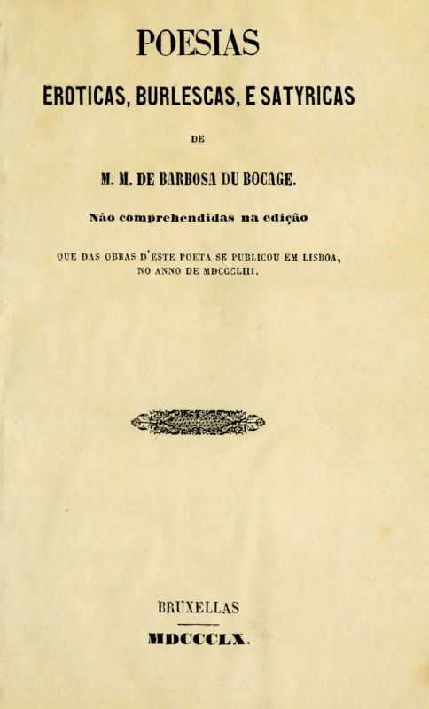
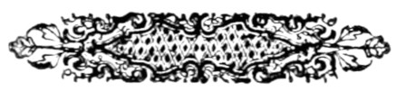

POESIAS
EROTICAS, BURLESCAS, E SATYRICAS
DE
M.M. DE BARBOSA DU BOCAGE.
Não comprehendidas na edição
QUE DAS OBRAS D'ESTE POETA SE PUBLICOU EM LISBOA,
NO ANNO DE MDCCCLIII.

BRUXELLAS
MDCCCLX.
Nota do Transcritor:
Erros tipográficos de ortografia, pontuação e indentação óbvios
foram corrigidos; quaisquer outros erros ou inconsistências foram
mantidos como no original.
O Índice foi movido do final para o início do livro de forma a
facilitar a sua utilização.
Foi apenso ao final do livro um Índice Exaustivo
dos Poemas Contidos Neste Volume. Poemas para os quais o editor
não providenciou um título são identificados pelo seu primeiro verso em itálico.
Poemas de outro autor que não Bocage têm o nome do seu autor indicado
entre parênteses após o título do poema.
| Pag. |
| Ribeirada, poema | 5 |
| A Manteigui, poema | 19 |
| A Empreza Nocturna | 29 |
| Epistola a Marilia (Pavorosa illusão etc. ) | 35 |
| Fragmento de Alceu | 43 |
| Arte de Amar | 47 |
| Cartas de Olinda e Alzira (VII) | 61 |
| Sonetos (LII) | 109 |
| Miscellanea | 163 |
| Elegia á morte de uma Alcoviteira | 172 |
| Notas | 177 |
| «Refutações á Pavorosa | 180 |
| «Sonetos etc. contra Bocage | 199 |
| «Sonetos contra frades | 205 |
| «Sonetos á beata d'Evora | 213 |
| «Soneto de P.J. Constancio | 216 |
[Pg iii]
Constou que muitas pessoas, que subscreveram para a recentissima
edição das Poesias de Bocage, publicada em Lisboa, e concluida já no
anno corrente, desejosas de possuir tudo o que saiu da penna de tão
peregrino engenho, como que se lastimavam de não poderem juntar áquella
collecção para a tornar completa, as obras do mesmo autor, que por
tratarem de assumptos anti-religiosos, ou pouco conformes á decencia e
moralidade dos publicos costumes, foram (ao que parece) com acertado
fundamento omittidas na referida edição.
Entretanto é facto incontestavel que parte d'essas obras teem já sido
impressas em diversos tempos, e que outras correm desde muitos annos
pelas mãos dos curiosos em copias mais ou menos viciadas e incorrectas,
como é de uso em papeis conservados manuscriptos, mórmente nos de tal
natureza. A esta consideração veiu naturalmente prender-se outra,
de certo bem attendivel no juizo do julgador imparcial: e é que do
principio ao meado do seculo XIX medea longa distancia no perigo de
similhantes publicações.
[Pg iv]
Nesta conjunctura alguem se persuadiu de que prestaria mui agradavel
serviço aos que ambicionam inteirar suas collecções offerecendo-lhes
estampadas em egual formato, e com a mesma disposição typographica
essas composições, de cuja falta tanto lhes pezava; as quaes são, pelo
assim dizer, outros tantos documentos indispensaveis para se avaliar
cabalmente o merito do poeta; — conhecer até que ponto chegaram suas
aberrações; — e para completar o desenho das diversas feições moraes
do seu retrato; attendendo principalmente a que, conforme a reflexão
já feita por um juiz competente, se as poesias licenciosas de Horacio
são os seus unicos versos sem espirito, pelo contrario as de Bocage
bastariam de per si a dar-lhe nome, e credito, se estes podessem
provir de tal genero, ou se a sua gloria não estivera cimentada em mais
firmes e seguros alicerces.
Eis ahi pois os motivos da publicação do presente volume.
Sirvam estas razões de salvo-conducto com que grangeêmos obter venia
perante os animos sensatos e despreoccupados: quanto áquelles para
quem (na phrase de um nosso amabilissimo contemporaneo) é mais alto
escandalo escrever um beijo do que tomar cento, — esses teem em si
mesmos contra o veneno do livro um preservativo tão facil quanto
infallivel: — Não o comprem, nem o lêam, e ficaremos em boa paz.
[Pg 5]
RIBEIRADA:
POEMA EM UM SÓ CANTO
[Pg 6]
ARGUMENTO.
Quando o preto Ribeiro entregue ao somno
Jazia, lhe apparece o deus Priapo;
E com uma das mãos, por ser fanchono,
Lhe agarra na cabeça do marsapo:
Offerece-lhe depois um bello cono,
Cono sem cavallete, gordo, e guapo:
Casa o preto, e a mulher, por fim de contas,
Lhe põe na testa retorcidas pontas.
[Pg 7]
CANTO UNICO.
I
Acções famosas do fodaz Ribeiro,
Preto na cara, enorme no mangalho,
Eu pretendo cantar em tom grosseiro,
Se a Musa me ajudar neste trabalho:
Pasme absorto escutando o mundo inteiro
A porca descripção do horrendo malho,
Que entre as pernas alverga o negro bruto
No lascivo appetite dissoluto.
II
Oh Musa gallicada, e fedorenta!
Tu, que ás fodas d'Apollo estás sujeita,
Anima a minha voz, pois hoje intenta
Cantar esse mangaz, que a tudo arreita:
D'esse vaso carnal, que o membro aquenta,
Onde tanta langonha se aproveita,
Um chorrilho me dá, oh Musa obscena,
Que eu com rijo tezão pégo na pena.
[Pg 8]
III
Em Troia, de Setubal bairro inculto,
Mora o preto castiço, de quem falo;
Cujo nervo é de sorte, e tem tal vulto,
Que excede o longo espeto de um cavallo:
Sem querer nos calções estar occulto,
Quando se enteza o tumido badalo,
Ora arranca os botões com furia rija,
Ora arromba as paredes, quando mija.
IV
Adorna hirsuto rispido pentelho
Os ardentes colhões do bom Ribeiro,
Que são duas maçãs de escaravelho,
Não digo na grandeza, mas no cheiro:
Ali piolhos ladros tão vermelho
Fazem com dente agudo o pau leiteiro,
Que o cata muita vez; mas ao tocar-lhe
Logo o membro nas mãos entra a pular-lhe.
V
Os maiores marsapos do universo
Á vista d'este para traz ficaram;
E do novo Martinho em prosa, e verso
Mil poetas a porra decantaram:
Quando ainda o cachorro era de berço
Umas moças por graça lhe pegaram
Na pica já taluda, e de repente
Pelas mãos lhes correu a grossa enchente.
[Pg 9]
VI
De Polyphemo o nervo dilatado,
Que intentou escaxar a Galathéa,
Pelo mundo não deu tão grande brado
Como a porra do preto negra, e fêa:
Da Cotovia o bando gallicado
Com respeito mil vezes o nomêa,
E ao suberbo estardalho do selvagem
As putas todas rendem vassallagem.
VII
O longo, e denso veo da noute escura
Das estrellas bordado já se via;
E em rota cama a horrenda creatura
Os tenebrosos membros estendia:
Do caralho a grandissima estatura
C'os lençóes encobrir-se não podia,
E a cabeça fodaz de fora pondo
Fazia sobre o chão medonho estrondo.
VIII
Os ladros, que fieis o acompanhavam,
A triste colhoada a cada instante
Com agudos ferrões lhe traspassavam,
Atormentando a besta fornicante:
Na durissima pelle se entranhavam,
Supposto que com garra penetrante
O negro dos colhões a muitos saca,
E o castigo lhes dá na fera unhaca.
[Pg 10]
IX
Tendo o cono patente no sentido
Na barriga o tezão lhe dava murros;
E de activa luxuria enfurecido
Espalhava o caxorro afflictos urros:
Co'a lembrança do vaso appetecido
O nariz encrespava, como os burros;
Até que, em vão berrando pelo cono,
De todo se entregou nas mãos do somno.
X
Já, roncando, os visinhos acordava
O lascivo animal, que representa
C'o motim pavoroso, que formava,
Trovão fero no ar, no mar tormenta:
Com alternados couces espancava
Da pobre cama a roupa fedorenta,
Que pulgas esfaimadas habitavam,
E de mil cagadelas matizavam.
XI
Eis de improviso em sonhos lhe apparece
Terrifica visão, que um braço estende,
E pela grossa carne, que lhes cresce
Debaixo da barriga ao negro prende:
Acorda, põe-lhe os olhos, e estremece
Com quem ao terror se acurva, e rende:
Com o medo, que tinha, a porra ingente
Se metteu nas encolhas de repente.
[Pg 11]
XII
Do tremendo phantasma a testa dura
Dous retorcidos cornos enfeitavam;
E, debaixo da pansa, a matta escura
Tres disformes caralhos occupavam:
O sujo aspecto, a fêa catadura
Os rasgados olhões illuminavam;
E na terrivel dextra o torpe espectro
Empunhava uma porra em vez de sceptro.
XIII
Ergue a voz, que as paredes abalava,
E co'a força do alento sibilante
Mata a pallida luz, que a um canto estava,
Em plumbeo castiçal agonisante:
«Oh tu, rei dos caralhos (exclamava)
Perde o medo, que mostras no semblante:
Que quem hoje te agarra no marsapo
É de Venus o filho, o deus Priapo.
XIV
«Vendo a fome cruel do parrameiro,
Que essas negras entranhas te devora,
De putas um covil deixei ligeiro,
Por fartar-te de fodas sem demora:
Consolarás o rigido madeiro
N'uma femea gentil, que perto mora;
Mas não lh'o mettas todo, pois receio
Que a possas escaxar de meio a meio.»
[Pg 12]
XV
Disse; e o negro da cama velozmente
Para beijar-lhe os pés se levantava;
Mas tropeça n'um banco, e de repente
No fetido bispote as ventas crava:
Não ficando da queda mui contente
Co'uma gota de mijo á pressa as lava;
E, acabada a limpeza, a voz grosseira
Ao numen dirigiu d'esta maneira:
XVI
«Soccorro de famintos fodedores,
Propicia divindade, que me escutas!
Tu consolas, tu enches de favores
O mestre da fodenga, o pae das putas:
Viste que, do tezão curtindo as dôres,
Travava c'o lençol immensas luctas;
E baixaste ligeiro, como Noto,
A dar piedoso amparo ao teu devoto.
XVII
«Em quanto houver tezões, e em quanto o cono
Fôr de arreitadas picas lenitivo,
Sempre heide recordar-me, alto patrono,
De que és de meus gostos o motivo:
Pois me dás gloria no elevado throno,
E já, como o veado fugitivo
Que o caçador persegue, eu corro, eu corro
A procurar as bordas, por quem morro.»
[Pg 13]
XVIII
Deteve aqui a voz o rijo accento,
Que dos trovões o estrepito parece,
E logo d'ante os olhos n'um momento
A nocturna visão desapparece:
Deixa Ribeiro o sordido aposento,
Que de antigos escarros se guarnece;
E nas tripas berrando-lhe o demonio
Corre logo a tratar do matrimonio.
XIX
O brando coração da femea alcança
Com finezas, caricias, e desvelos;
A qual sobre a vil cara emprega, e lança
(Tentação do demonio!) os olhos bellos:
O fodedor maldito não descança
Sem ver chegar o dia, em que os marmellos
Que tem juntos do cú, dêem cabeçadas
Entre as candidas verilhas delicadas.
XX
Chega o dia infeliz (triste badejo!
Miseria crica! desditoso rabo!)
E ornado o rosto de um purpureo pejo
Une-se a mão de um anjo á do diabo:
Ardendo o bruto em férvido desejo
Unta de louro azeite o longo nabo,
Para que possa entrar com mais brandura
A vermelha cerviz faminta, e dura.
[Pg 14]
XXI
Principia o banquete, que constava
De dois gatos, achados n'um monturo.
E de raspas de corno, de que usava
Em logar de pimenta o preto impuro:
Em sujo frasco ali se divisava
Turva agua-pé; fatias de pão duro
Pela mesa decrepita espalhadas
A fraca vida perdem ás dentadas.
XXII
Depois de ter o esposo o bucho farto,
Abrasado de amor na ardente chamma,
Foge com leves passos para o quarto,
Ao collo conduzindo a bella dama:
Pelas ceroulas o voraz lagarto
A genital enxundia já derrama;
Só por ver da consorte o gesto lindo
Inda antes de foder já se está vindo!
XXIII
Jazia o velho thalamo n'um canto
Onde de pulgas esquadrão persiste,
Para theatro ser do afflicto pranto
Que havia derramar a esposa triste:
Oh noute de terror, noute de espanto,
Que das fodas crueis o estrago viste,
Permitte que com metrica harmonia
Patente ponha tudo á luz do dia.
[Pg 15]
XXIV
Ergue-lhe a saia o renegado amante,
Estira-se a consorte agil, e prompta;
E elle a setta carnal no mesmo instante
Ao parrameiro misero lhe aponta:
Co'um só beijo do membro palpitante
Ficou subitamente a moça tonta,
E julgou (tanto em fogo ardia o nabo!)
Que encerrava entre as pernas o diabo.
XXV
Prosegue o desalmado; mas a esposa
Que não pode aturar-lhe a dura estaca,
Dando voltas ao cú muito chorosa
Com geito o membralhão das bordas sacca:
Elle irado lhe diz, com voz queixosa:
«Não és uma mulher como uma vacca?
Porque fazes traições, quando te empurro
O mastro? quando vês que gemo, e zurro?»
XXVI
Então, cheio de raiva, aperta o dente,
E na gostosa, feminil masmorra,
Alargando-lhe as pernas novamente,
Com estrondosos ais encaixa a porra:
Ella, que já no corpo o fogo sente
Do marsapo, lhe diz: «Queres que eu morra?
Tu não vês que me engasgo, e que estou rouca,
Porque o cruel tezão me chega á bocca?
[Pg 16]
XXVII
«Ah! deixa-me tomar um breve alento,
Primeiro que rendida e morta caia…»
Mas elle, que na foda é um jumento,
Não tem dó da mulher, que já desmaia:
Sentindo ser chegado o fim do intento,
Do ranhoso licor lhe innunda a saia;
Porque dentro do vaso não cabia
A torrente, que rapida corria.
XXVIII
De gosto o vil caxorro então se baba,
E vendo que a mulher calada fica,
«Consola-te (exclamou) que já se acaba
Esta fome voraz da minha pica.»
E com muita risada então se gaba
De lhe ter esfollado a roxa crica;
Mas ella grita, ardendo-lhe o sabugo:
«Ora que casasse eu com um verdugo!
XXIX
«Fóra, fóra caxorro, não te aturo
Que me feres as bordas do coninho!»
E com desembaraço um tezo, e duro
Bofetão lhe arrumou pelo focinho:
Tomou em tom de graça o monstro escuro
A affrontosa pancada, e com carinho
Disse para a mulher: «Brincas comigo?
Pois torno-te a foder, por teu castigo.»
[Pg 17]
XXX
Estas vozes ouvindo a desgraçada
De repente no chão cahir se deixa;
E, temendo a mortifera estocada,
Ora abre os tristes olhos, ora os fecha:
Com suspiros depois desatinada
Da contraria fortuna ali se queixa;
Até que elle lhe diz, com meigo modo:
«Levanta-te do chão, que não te fodo.»
XXXI
Alma nova cobrou, qual lebre afflicta,
Que das unhas dos cães se vê liberta;
E apalpando a conaça (oh que desdita!)
Mais que bôca de barra a encontra aberta;
Mas consola-se um pouco, e já medita
Em fugir da ruina, que é tão certa;
E em vingar-se do horrivel Brutamonte,
Ornando-lhe de cornos toda a fronte.
XXXII
Tem conseguido a barbara vingança
A traidora mulher, como queria;
E o negro com paciencia branda, e mansa,
Soffrendo os cornos vai de dia em dia:
Bem mostra no que faz não ser creança,
Que de nada o rigor lhe serviria;
Porque se uma mulher quizer perder-se,
Até feita em picado ha de foder-se.
[Pg 18]
XXXIII
Agora vós, fodões encarniçados,
Que julgais agradar ás moças bellas
Por terdes uns marsapos, que estirados
Vão pregar c'os focinhos nas canellas:
Conhecereis aqui desenganados
Que não são taes porrões do gosto d'ellas:
Que lhes não pode, em fim, causar recreio
Aquelle, que passar de palmo e meio.
[Pg 19]
[Pg 20]
ARGUMENTO.
Da grande Manteigui, puta rafada,
Se descreve a brutal incontinencia;
Do cafre infame a porra desmarcada,
Do cornigero esposo a paciencia:
Como á força de tanta caralhada
Perdendo o negro a rigida potencia,
Foge da puta, que sem alma fica,
Dando mil berros por amor da pica.
[Pg 21]
CANTO UNICO.
I
Canto a belleza, canto a putaria
De um corpo tão gentil, como profano;
Corpo, que, a ser preciso, engoliria
Pelo vaso os martellos de Vulcano:
Corpo vil, que trabalha mais n'um dia
Do que Martinho trabalhou n'um anno;
E que atura as chumbadas, e pelouros
De cafres, brancos, maratás, e mouros.
II
Venus, a mais formosa entre as deidades,
Mais lasciva tambem que todas ellas;
Tu, que vinhas de Troya ás soledades
Dar a Anchises as mammas, e as canellas:
Que grammaste do pae das divindades
Mais de seiscentas mil fornicadelas;
E matando uma vez da crica a sêde,
Foste pilhada na vulcanea rêde:
[Pg 22]
III
Dirige a minha voz, meu canto inspira,
Que vou cantar de ti, se a Jacques canto;
Tendo um corno na mão em vez de lyra,
Para livrar-me do mortal quebranto:
Tua virtude em Manteigui respira,
Com graça, qual tu tens, motiva encanto;
E bem pode entre vós haver disputa
Sobre qual é mais bella, ou qual mais puta.
IV
No Cambayco Damão, que escangalhado
Lamenta a decadencia portugueza,
Este novo Ganós foi procreado,
Peste d'Asia em luxuria, e gentileza:
Que ermitão de cilicios macerado
Pode ver-lhe o carão sem porra teza?
Quem chapeleta não terá de mono,
Se tudo que ali vê é tudo cono?
V
Seus meigos olhos, que a foder ensinam,
Té nos dedos dos pés tezões accendem;
As mammas, onde as Graças se reclinam,
Por mais alvas que os véos os véos offendem;
As doces partes, que os desejos minam,
Aos olhos poucas vezes se defendem;
E os Amores, de amor por ella ardendo,
Ás pissas pelas mãos lhe vão mettendo.
[Pg 23]
VI
Seus cristalinos, deleitosos braços,
Sempre abertos estão, não para amantes,
Mas para aquelles só, que, nada escassos,
Cofres lhe atulham de metaes brilhantes;
As niveas plantas, quando move os passos,
Vão pizando os tezões dos circumstantes;
E quando em ledo som de amores canta,
Faz-lhe a porra o compasso co'a garganta.
VII
Mas para castigar-lhe a vil cubiça
O vingativo Amor, como aggravado,
Fogo infernal no coração lhe atiça
Por um sordido cafre asselvajado;
Tendo-lhe visto a torrida linguiça
Mais extensa que os canos d'um telhado,
Louca de comichões a indigna dama
Salta n'elle, convida-o para a cama.
VIII
Eis o bruto se cossa de contente;
Vermelha febre sobe-lhe ao miolo;
Agarra na senhora, impaciente
D'erguer-lhe as fraldas, de provar-lhe o bolo:
Estira-a sobre o leito, e de repente
Quer do panno sacar o atroz mampolo:
Porém não necessita arrear cabos;
Lá vai o langotim com mil diabos.
[Pg 24]
IX
Levanta a tromba o rispido elephante,
A tromba, costumada a taes batalhas,
E apontando ao buraco palpitante,
Bate ali qual ariete nas muralhas:
Ella enganchando as pernas delirante,
«Meu negrinho (lhe diz) quão bem trabalhas!
Não ha porra melhor em todo o mundo!
Mette mais, mette mais que não tem fundo.
X
«Ah! se eu soubera (continúa o couro
Em torrentes de semen já nadando)
Se eu soubera que havia este thesouro
Ha que tempos me estava regalando!
Nem fidalguia, nem poder, nem ouro
Meu duro coração faria brando;
Lavára o cú, lavára o passarinho,
Mas só para foder c'o meu negrinho.
XI
«Mette mais, mette mais… Ah Dom Fulano!
Se o tivesses assim, de graça o tinhas!
Não vivêras em um perpetuo engano,
Pois vir-me-hia tambem quando te vinhas:
Mette mais, meu negrinho, anda, magano;
Chupa-me a lingua, meche nas mamminhas…
Morro de amor, desfaço-me em langonha…
Anda, não tenhas susto, nem vergonha.
[Pg 25]
XII
«Ha quem fuja de carne, ha quem não morra
Por tão bello, e dulcissimo trabalho?
Ha quem tenha outra idéa, ha quem discorra
Em cousa, que não seja de mangalho?
Tudo entre as mãos se me converte em porra,
Quanto vejo transforme-se em caralho:
Porra, e mais porra no verão, e no hynverno,
Porra até nas profundas do inferno!…
XIII
«Mette mais, mette mais (ia dizendo
A marafona, ao bruto, que suava,
E convulso fazia estrondo horrendo
Pelo rustico som com que fungava:)
Mette mais, mette mais que estou morrendo!…»
«Mim não tem mais!» O negro lhe tornava;
E triste exclama a bebada fodida:
«Não ha gosto perfeito n'esta vida!»
XIV
N'este comenos o cornaz marido,
O bode racional, veado humano,
Entrava pela camara atrevido
Como se entrasse n'um logar profano:
Mas vendo o preto em jogos de Cupido,
Eis sae logo, dizendo: «Arre magano!
Na minha cama! Estou como uma braza!
Mas, bagatella, tudo fica em casa.»
[Pg 26]
XV
A foda começada ao meio dia
Teve limite pelas seis da tarde:
Veiu saltando a nympha de alegria,
E da sordida acção fazendo alarde:
O bom consorte, que risonha a via,
Lhe diz: «Estás coráda! O ceo te guarde;
Bem boa alpistre ao passaro te coube!
Ora dize, menina, a que te soube?»
XVI
«Cale-se, tolo» (a puta descarada
Grita n'um tom raivoso, e lhe rezinga)
O rei dos cornos a cerviz pesada
Entre os hombros encolhe, e não respinga:
E o courão, da pergunta confiada,
Outra vez com o cafre, e mil se vinga,
Até que elle, faltando-lhe a semente,
Tira-lhe a mama, e foge de repente.
XVII
Deserta por temor d'esfalfamento,
Deserta por temer que o couro o mate:
Ella então de suspiros enche o vento,
E faz alvorotar todo o Surrate:
Vão procural-o de cipaes um cento,
Trouxeram-lhe a cavallo o tal saguate;
Ella o vae receber, e o grão Nababo
Pasmou d'isto, e quiz ver este diabo.
[Pg 27]
XVIII
Pouco tempo aturou de novo em casa
O cão, querendo logo a pelle forra,
Pois a puta co'a crica toda em braza,
Nem queria comer, só queria porra:
Voou-lhe, qual falcão batendo a aza,
E o courão, sem achar quem a soccorra,
Em lagrimas banhada, acceza em furia,
Suspira de saudade, e de luxuria.
XIX
Courões das quatro partes do universo,
De gallico voraz envenenados!
Se d'este canto meu, d'este acre verso
Ouvirdes por ventura os duros brados:
Em bando marcial, côro perverso,
Vinde ver um cação dos mais pescados:
Vindo cingir-lhe os louros, e devotos
Beijar-lhe as aras, pendurar-lhe os votos.
[Pg 28]
[Pg 29]
Era alta noute, e as beiras dos telhados
Pingando mansamente convidavam
A gente toda a propagar a especie:
Brandas torrentes, que do ceo cahiam
Pelas ruas abaixo susurravam:
Dormia tudo; e a ronda do Intendente
Que o grão Torquato rege, o pae das putas,
Esbirro-mór, Mecenas das tabernas,
Recolhido se havia aos patrios lares.
Era tudo silencio, e só se ouvia
De quando em quando ao longe uma matraca.
Soava o sino grande dos Capuchos,
Vão-se os frades erguendo, era uma hora.
Não podia faltar: Nise formosa,
Pela primeira vez m'estava esperando.
De repente me visto, e salto fora
Da pobre cama, aonde envolto em sonhos
Mil imagens a mente me fingia.
Visto roupa lavada, e me perfumo,
N'um capote me embuço, a espada tómo,
Que nunca me serviu, mas que em taes casos
Mette a todos respeito; e qual Quixote,
Que, havendo já perdido o charo Sancho,
Sem nada recear de assalto busca
Altos moinhos, que valente ataca;
Tal eu figuro achar a cada esquina
[Pg 30]
Um Rodamonte, e prompto me disponho
A lançal-o por terra, em pó desfeito.
Assim gastei o tempo, até que chego
Ao sitio dado, onde meu bem m'espera.
Mal a porta emboquei, dentro em mim sinto
Um fogo activo, que me abraza todo.
Eis de Nise a criada, abelha mestra,
Que á mira estava ali, a mão me aperta,
Vai-me guiando, e diz: «Suba de manso,
Que ahi dorme a senhora.» A poucos passos,
Por acaso ao subir lhe apalpo as coxas…
Oh! caspite! que sesso! Era alcatreira,
Nunca vi cú tão duro, era uma rocha.
Foi o tezão então em mim tão forte,
Que as mãos lhe encosto aos hombros, n'ella salto,
Que enfadada dizia: «Olhe o bregeiro!…
Tire-se lá, que pode ouvir minha ama!…
Ao dizer isto a voz lhe fica presa,
Soluça, treme toda, estende os braços,
Aperta as pernas, encarquilha o cono,
Que distava do cú pollegada e meia.
Qual moinho de cartas, que os rapazes
Em tempo de verão põem nas janellas,
Tal a moça rebolla: e eu posto em cima.
Sem nada lhe dizer, tinha vertido
Na larga dorna a larga apojadura.
Acabada a funcção, em que a moçoila
(Segundo confessou) deu tres por uma,
N'um quarto me encaixou, onde os Amores
Tinham sua morada, onde Cupido
[Pg 31]
Havia receber em seus altares
Em breve espaço meus amantes votos.
Dormia tudo em casa: eis Nise bella
Um pouco envergonhada, assim ficando
Mais vermelha que a rosa, a mim se chega,
Nos meus braços se lança: então lhe toco
No tenro, e branco seio palpitante;
Trémula a voz, que o susto lhe embargava,
Mal me pôde dizer: «Meu bem, minh'alma
«Quanto pode o amor n'um peito firme!
«Bem vês ao que me arrisco: eu bem conheço
«Quanto offendo o meu sexo, e as leis da honra
«Bem sei que despedaço!… Mas não temo
«Que te esqueças de mim, que ufano zombes
«D'uma infeliz mulher amante, e fraca!…»
Em quanto assim falava, me prendia
Nise c'os braços seus, e aos meus joelhos
As pernas encostava, que eu conheço
Pelo tacto, que são rijas, e grossas.
Mal podia conter-me: o ceo chuvoso
Pelas telhas cahia; o vento rijo
Pelas frestas zunia; a casa toda
Com cheiro de alfazema; a cama fofa,
Tudo emfim era amor, tudo arreitava.
Entro a beijar-lhe as mãos feitas de neve,
Descubro-lhe com geito o tenro peito,
Que ancioso palpita, que resiste,
Que não murcha ao tocar-se; oh quanto é bella!
No seio virginal, onde dois globos
Mais brancos do que jaspe estão firmados,
[Pg 32]
Ancioso beijando-os, pouco a pouco
Se fizeram tão rijos que mal pude
Comprimil-os c'os beiços; n'este tempo
Pelo fundo da saia subtilmente
Lhe introduzi a mão, com que esfregava
O pentelho em redondo, o mais hirsuto
Que atéli encontrei; e como a crica
Vertido tinha já pingas ardentes,
Certos signaes, que os férvidos prazeres
Dentro n'alma de Nise á lucta andavam,
Tal fogo em mim senti, que de improviso
Sem nada lhe dizer me fui despindo,
Té ficar nú em pello, e o membro feito,
Na cama m'encaixei, qu'a um lado estava.
Nise, cheia de susto, e casto pejo,
De receio, e luxuria combatida,
Junto a mim se assentou, sem resolver-se.
Eu mesmo a fui despindo, e fui tirando
Quanto cobria seu airoso corpo.
Era feito de neve: os hombros altos;
O collo branco, o cú roliço, e grosso;
A barriga espaçosa, o cono estreito,
O pentelho mui denso, escuro, e liso;
Coxas pyramidaes, pernas roliças,
O pé pequeno… Oh ceos! Como é formosa!
Já mettidos na cama em nivea hollanda,
Erguido o membro té tocar no embigo,
Qual Amadis de Gaula entrei na briga:
Pentelho com pentelho ambos unidos,
Presa a voz na garganta, ardente fogo
[Pg 33]
Exhalavamos ambos; Nise bella
Ou fosse natural, ou fosse d'arte,
O peito levantado, anciosa, afflicta,
Tremia, soluçava, e os olhos bellos
Semi-mortos erguia: a côr do rosto
Pouco a pouco murchava; era tão forte,
Tão activo o prazer, que ella sentia,
Que, cingindo-me os rins c'os alvos braços,
Tanto a si me prendia, que por vezes
O movimento do cú me embaraçava:
Co'as alvas pernas me apertava as coxas,
Titilava-lhe o cono, e reclinada
Quasi sem tino a languida cabeça,
Chamando-me seu bem, sua alma, e vida,
Faz-me ternas meiguices, brandos mimos:
Férvidos beijos, mutuamente dados,
Anhelantes suspiros se exhalavam:
Era tudo ternura; e em breve espaço
Ao som de queixas mil, com que intentava
Mostrar-me Nise um damno irreparavel,
Me senti quasi morto em todo o corpo;
Uma viva emoção senti gostosa
Dentro em minh'alma: férvidos prazeres
O peito vivamente me agitavam:
Os olhos, e a voz amortecida,
Os braços frouxos, quasi moribundos,
Languido o corpo todo, em fim mal pude
Saber o que fazia… Eis de improviso
Tornando a mim mais forte, e mais robusto,
Tentei de novo o campo da batalha:
[Pg 34]
Qual o bravo guerreiro, que se abrasa
No calido vapor, que exhala o sangue
Que elle mesmo esparziu entre as phalanges
De inimigos crueis, que vence, e mata;
Assim eu, abrasado em vivo fogo
Que de Nise sahia, me não farto
Da guerra, que intentei; de novo a aperto,
De novo beijo os seus mimosos braços;
Beijo-lhe os olhos, a mimosa bocca,
Os niveos peitos, a cintura airosa;
Nise outro tanto me fazia alegre,
Estreitava-me a si por varios modos:
Ora posto eu por baixo, ella por cima,
Para dar doce allivio aos membros lassos;
Ora posto de ilharga, sem que nunca
O voraz membro do logar sahisse,
Onde uma vez entrara altivo e forte;
O membro, que em tal caso era mais duro
Que alva columna de marmoreo jaspe;
Até que em fim, depois de não podermos
Nem eu, nem Nise promover mais gostos,
O brando somno, sobre nós lançando
Os seus doces influxos brandamente,
Os olhos nos cerrou. Uns leves sonhos
Vieram animar nossos sentidos,
Té que chegou a fresca madrugada,
Em que á casa voltei, d'onde sahira;
E tornando outra vez á pobre cama,
Dormi o dia inteiro a somno solto.
[Pg 35]
I
Pavorosa illusão da Eternidade,
Terror dos vivos, carcere dos mortos;
D'almas vans sonho vão, chamado inferno;
Systema da politica oppressora;
Freio, que a mão dos despotas, dos bonzos
Forjou para a boçal credulidade;
Dogma funesto, que o remorso arreigas
Nos ternos corações, e a paz lhe arrancas:
Dogma funesto, detestavel crença,
Que envenenas delicias innocentes,
Taes como aquellas que no ceo se fingem:
Furias, Cerastes, Dragos, Centimanos,
Perpetua escuridão, perpetua chamma,
Incompativeis producções do engano,
Do sempiterno horror terrivel quadro,
(Só terrivel aos olhos da ignorancia)
Não, não me assombram tuas negras côres,
Dos homens o pincel, e a mão conheço:
Trema de ouvir sacrilego ameaço
Quem d'um Deus quando quer faz um tyranno:
Trema a superstição; lagrimas, preces,
Votos, suspiros arquejando espalhe,
Coza as faces co'a terra, os peitos fira,
Vergonhosa piedade, inutil venia
[Pg 36]
Espere ás plantas de impostor sagrado,
Que ora os infernos abre, ora os ferrolha:
Que ás leis, que as propensões da natureza
Eternas, immutaveis, necessarias,
Chama espantosos, voluntarios crimes;
Que as ávidas paixões, que em si fomenta,
Abhorrece nos mais, nos mais fulmina:
Que molesto jejum, roaz cilicio
Com despotica voz á carne arbitra,
E, nos ares lançando a futil benção,
Vae do grantribunal desenfadar-se
Em sordido prazer, venaes delicias,
Escandalo de Amor, que dá, não vende.
II
Oh Deus, não oppressor, não vingativo,
Não vibrando co'a dextra o raio ardente
Contra o suave instincto, que nos déste;
Não carrancudo, rispido arrojando
Sobre os mortaes a rigida sentença,
A punição cruel, que excede o crime,
Até na opinião do cego escravo.
Que te adora, te incensa, e crê qu'és duro!
Monstros de vís paixões, damnados peitos
Regidos pelo sofrego interesse
(Alto, impassivo numen!) te attribuem
A cholera, a vingança, os vicios todos,
Negros enxames, que lhe fervem n'alma!
Quer sanhudo ministro dos altares
[Pg 37]
Dourar o horror das barbaras cruezas,
Cobrir com véo compacto e venerando
A atroz satisfação de antigos odios,
Que a mira poem no estrago da innocencia,
Ou quer manter asperrimo dominio,
Que os vaivens da razão franquêa, e nutre:
Eil-o, em sancto furor todo abrasado,
Hirto o cabello, os olhos côr de fogo,
A maldição na bocca, o fel, a espuma,
Eil-o, cheio de um Deus tão mau como elle,
Eil-o citando os horridos exemplos
Em que aterrada observe a phantasia
Um Deus o algoz, a victima o seu povo:
No sobr'olho o pavor, nas mãos a morte,
Envolto em nuvens, em trovões, em raios
De Israel o tyranno omnipotente;
Lá brama do Sinay, lá treme a terra!
O torvo executor dos seus decretos,
Hypocrita feroz, Moysés astuto,
Ouve o terrivel Deus, que assim traveja:
«Vae, ministro fiel, dos meus furores!
Corre, vôa a vingar-me: seja a raiva
De esfaimados leões menor que a tua:
Meu poder, minhas forças te confio,
Minha tocha invisivel te precede:
Dos impios, dos ingratos, que me offendem,
Na rebelde cerviz o ferro ensopa:
Extermina, destroe, reduz a cinzas
As sacrilegas mãos, que os meus incensos
Dão a frageis metaes, a deuses surdos:
[Pg 38]
Sepulta as minhas victimas no inferno,
E treme, se a vingança me retardas!…»
Não lh'a retarda o rabido propheta;
Já corre, já vozêa, já diffunde
Pelos brutos, attonitos sequazes
A peste do implacavel fanatismo:
Armam-se, investem, rugem, ferem, matam,
Que sanha! que furor! que atrocidade!
Foge dos corações a natureza;
Os consortes, os paes, as mães, os filhos
Em honra do seu Deus consagram, tingem
Abominosas mãos no parricidio:
Os campos de cadaveres se alastram,
Susurra pela terra o sangue em rios,
Troam no polo altissimos clamores.
Ah! Barbaro impostor, monstro sedento
De crimes, de ais, de lagrimas, d'estragos,
Serena o phrenesi, reprime as garras,
E a torrente de horrores, que derramas,
Para fundar o imperio dos tyrannos,
Para deixar-lhe o feio, o duro exemplo
De opprimir seus eguaes com ferreo jugo;
Não profanes, sacrilego, não manches
Da eterna divindade o nome augusto!
Esse, de quem te ostentas tão valido,
É Deus do teu furor, Deus do teu genio,
Deus creado por ti, Deus necessario
Aos tyrannos da terra, aos que te imitam,
E áquelles, que não crêm que Deus existe.
[Pg 39]
III
N'este quadro fatal bem vês, Marilia,
Que em tenebrosos seculos envolta
Desde aquelles crueis, infandos tempos
Dolosa tradição passou aos nossos.
Do coração, da idéa, ah! desarreiga
De astutos mestres a fallaz doctrina,
E de credulos paes preoccupados
As chimeras, visões, phantasmas, sonhos:
Ha Deus, mas Deus de paz, Deus de piedade,
Deus de amor, pae dos homens, não flagello.
Deus, que ás nossas paixões deu ser, deu fogo,
Que só não leva a bem o abuso d'ellas,
Porque á nossa existencia não se ajusta,
Porque inda encurta mais a curta vida:
Amor é lei do Eterno, é lei suave;
As mais são invenções, são quasi todas
Contrarias á razão, e á natureza:
Proprias ao bem d'alguns, e ao mal de muitos.
Natureza, e razão jámais differem:
Natureza, e razão movem, conduzem
A dar soccorro ao pallido indigente,
A pôr limite ás lagrimas do afflicto,
E a remir a innocencia consternada,
Quanto nos debeis, magoados pulsos
Lhe roxêa o vergão de vís algemas:
Natureza, e razão jámais approvam
O abuso das paixões, aquella insania,
Que pondo os homens ao nivel dos brutos,
[Pg 40]
Os infama, os deslustra, os desacorda.
Quando aos nossos eguaes, quando uns aos outros
Traçâmos fero damno, injustos males
Em nossos corações, em nossas mentes,
És, oh remorso, o precursor do crime,
O castigo nos dás antes da culpa,
Que só na execução do crime existe,
Pois não pode evitar-se o pensamento,
E é innocente a mão, que se arrepende.
Não vem só d'um principio acções oppostas:
Taes dimanam de um Deus, taes do exemplo,
Ou do cego furor, moleslia d'alma.
IV
Crê pois, meu doce bem, meu doce encanto,
Que te anceam phantasticos terrores,
Prégados pelo ardil, pelo interesse.
Só de infestos mortaes na voz, na astucia
A bem da tyrannia está o inferno.
Esse, que pintam barathro de angustias,
Seria o galardão, seria o premio
Das suas vexações, dos seus embustes,
E não pena de amor, se inferno houvesse.
Escuta o coração, Marilia bella,
Escuta o coração, que te não mente:
Mil vezes te dirá: «Se a rigorosa
Carrancuda oppressão de um pae severo,
Te não deixa chegar ao charo amante
Pelo perpetuo nó, que chamam sacro,
[Pg 41]
Que o bonzo enganador teceu na idéa
Para tambem no amor dar leis ao mundo;
Se obter não podes a união solemne,
Que hallucina os mortaes, porque te esquivas
Da natural prisão, do terno laço
Que com lagrimas, e ais te estou pedindo?
Reclama o teu poder, os teus direitos
Da justiça despotica extorquidos:
Não chega aos corações o jus paterno,
Se a chamma da ternura os affoguêa:
De amor ha precisão, ha liberdade;
Eia pois, do temor saccode o jugo,
Acanhada donzella; e do teu pejo
Déstra illudindo as vigilantes guardas,
Pelas sombras da noute, a amor propicias,
Demanda os braços do ancioso Elmano,
Ao risonho prazer franquêa os lares.
Consista o laço na união das almas;
Do ditoso hymenêo as venerandas
Caladas trevas testemunhas sejam;
Seja ministro o Amor, e a terra templo
Pois que o templo do Eterno é toda a terra.
Entrega-te depois aos teus transportes,
Os oppressos desejos desafoga.
Mata o pejo importuno; incita, incita
O que, só de prazer merece o nome.
Verás como, envolvendo-se as vontades,
Gostos eguaes se dão, e se recebem:
Do jubilo hade a força amortecer-te,
Do jubilo hade a força aviventar-te.
[Pg 42]
Sentirás suspirar, morrer o amante,
Com os seus confundir os teus suspiros,
Has de morrer, e reviver com elle.
De tão alta ventura, ah! não te prives,
Ah! não prives, insana, a quem te adora.»
Eis o que has de escutar, oh doce amada,
Se á voz do coração não fores surda.
De tuas perfeições enfeitiçado
Ás preces, que te envia, eu uno as minhas.
Ah! Faze-me ditoso, e sê ditosa.
Amar é um dever, além de um gosto,
Uma necessidade, não um crime,
Qual a impostura horrisona apregôa.
Céos não existem, não existe inferno,
O premio da virtude é a virtude,
É castigo do vicio o proprio vicio.
[Pg 43]
I
Imaginas, meu bem, suppões, oh Lilia,
Que os beneficos céos, os céos piedosos
Exigem nossos ais, nossos suspiros
Em vez de adorações, em vez d'incensos?
Credula, branda amiga é falso, é falso:
Longe a cega illusão. Se ambos sumidos
Em solitario bosque, e misturando
Doces requebros c'os murmurios doces
Dos transparentes, garrulos arroios,
Sempre me ouvisses, sempre me dissesses
Que és minha, que sou teu; que mal, que offensa
Nosso innocente ardor faria aos Numes?
Se acaso reclinando-te comigo
Sobre viçoso thalamo de flores,
Turvasse nos teus olhos carinhosos
Suave languidez a luz suave;
Se os doces labios teus entre meus labios
Fervendo, grata Lilia, me espargissem
Vivissimo calor nas fibras todas;
Se pelo excesso de ineffaveis gostos
[Pg 44]
Morressemos, meu bem, d'uma só morte;
E se Amor outra vez nos désse a vida
Para expirar de novo: em que peccára,
Em que afrontára aos céos prazer tão puro?
A voz do coração não tece enganos,
Não é réo quem te segue, oh Natureza:
Esse Jove, esse deus, que os homens pintam
Suberbo, vingador, cruel, terrivel;
Em perpetuas delicias engolphado,
Submerso em perennal tranquillidade
Com as acções humanas não se emb'raça:
Fictos seus olhos no universo todo,
Em todos os mortaes, n'um só não param:
As vozes da razão profiro, oh Lilia!
É lei o amor, necessidade o gosto:
Viver na insipidez é erro, é crime,
Quando amigo prazer se nos franquêa.
II
Eia! Deixemos á vaidade insana
Correndo-se da rapida existencia
Sem susto para si crear segunda:
Deixemos-lhe entranhar por vans chimeras,
Pela immortalidade os olhos ledos;
E do seu phrenesi, meu bem, zombemos.
Esse abysmo sem fundo, ou mar sem praia
Onde a morte nos lança, e nos arroja,
Guarda perpetuamente tudo, oh Lilia,
Tudo quanto lhe cae no bojo immenso.
[Pg 45]
Em quanto dura a vida ah! sejam, sejam
Nossos os prazeres, os Elysios nossos.
Os outros não são mais que um sonho alegre,
Uma invenção dos reis, ou dos tyrannos,
Para curvar ao jugo os brutos povos:
E o que a superstição nomêa averno,
E á multidão fanatica horrorisa;
As furias, os dragões, e as chammas fazem
Mais medo aos vivos, do que mal aos mortos.
[Pg 46]
[Pg 47]
I
Se, lascivos do mundo, amais sem arte,
Lede meus versos, amareis com ella.
Tu, louro Apollo, me tempera a lyra,
Tu, branda Venus, a cantar me ensina.
Quanto nos reinos de Plutão deseja
Tantalo ardente mitigar a sêde;
Quanto suspira Promethêo, que Jove
Os duros ferros, com que o prende, rompa;
Tanto deseja a feminina turba
Ao corpo varonil unir seu corpo;
Tanto suspira por que mão lasciva
Meiga lhe toque nas columnas lisas,
E que mimoso, petulante dedo
Lhe amolgue os tezos seus virgineos peitos.
Em Junho ardente pelo seu consorte
Clama, suspira em verde ramo a rôla;
[Pg 48]
Em gelado Janeiro clama triste
A domestica tigre por marido:
Brama nos campos em sereno Maio
Mansa novilha por amado touro.
Sabia Natura o debil sexo excita,
Torpes desejos com ardor provoca:
Mas sempre firme, e simulada nega
Carnal impulso geração de Pyrrha.
Busca Diana Endymião nos bosques,
Mas finge ousada perseguir as féras;
Ardente Venus só prazer respira,
Mas seus favores solicíta Marte;
Serrana humilde reclinar deseja
Nos doces braços de um Vaqueiro o collo;
Mas d'elle foge, na montanha, esquiva,
Com elle o baile festival recusa.
II
Tu, próvido Lycurgo, ou quem primeiro
Á vaga turba legislou dos homens,
Severo alçando temeroso ferro
Duro reprimes da natura os gritos;
Á face mulheril, immovel d'antes,
Pudibundo rubor e pejo déstes;
Mas ah! não tema varonil caterva
Femineo pejo, sendo eu o seu mestre.
Corta o duro machado erguido tronco,
Mas vejo sempre pullular vergonteas;
Diques forçosos contra o mar se elevam,
Mas além d'elles delphins mansos nadam.
[Pg 49]
Pode mais do que as leis a Natureza,
Pratica o mundo só o que ella dicta;
Faz-se escondida em quanto a não descobrem;
Eu subtil mestre a descobril-a ensino.
Ah! não me chamem críticos austeros
Dos bons costumes corruptor profano!
Ah! não me mande Cesar irritado
No frio Euxino a viver c'os Getas.
Outra cousa não faz duro colono
Com liso arado, quando rompe a terra:
Dura codêa o calor nativo impede,
O ferro a rasga, e o calor transpira.
III
Vós, mancebos, correi, correi ligeiros
Do Tibre ás margens ferteis, e mimosas:
Tão immoveis me ouvi; mas não tão surdos;
Direi primeiro como Amor se enlêa,
Depois como se faz propicia Venus.
Tu, oh Jove immortal, tu pae dos deuses,
Sabio me inspira, que não basta Apollo.
É verde louro fugitivo Daphne,
Amor ingrato do queixoso Phebo:
Tu, selvatico filho de Saturno,
Só tu não temes desdenhosas iras:
Ou chuva d'ouro a bella Danae molhas,
Ou touro manso linda Europa roubas.
A face mulheril formosa, e pura
Cobrem de pejo avermelhadas rosas;
Ou dedo juvenil destro as desfolhe,
[Pg 50]
Ou calido vapor soprando as murche:
Então lasciva, sem rebuço exposta
Facil se entrega, sem temor se arroja:
Então tu, louro Apollo, serás Daphne,
A nympha fugitiva será Phebo.
Apoz o bruto filho de Neptuno
Correrá Galathéa os verdes mares;
Assim foge de Cyrce o grego Ulysses,
Assim foge de Dido o pio Enéas.
Porém, primeiro, subtilmente a inflamma;
Se acaso ardente, devorante fogo
Torrar os bofes, consumir entranhas,
Natura acode com forçoso impulso,
E mais depressa se afugenta o pejo:
Mais depressa o calor do sol derrete
Pallida massa de esfregada cêra;
Mais cedo rompe ariete forçoso
Torres antigas, ruinosos muros.
IV
Se branco rosto, que formoso esmaltam
Preciosos rubís, azues saphiras,
Face morena, que engraçados ornam
Dous pretos olhos, com que as Graças brincam;
Se airoso gesto, movimento lindo,
Se honesto modo, se sisudo termo
Feriu teus olhos no theatro, ou templo,
Eia, mancebo, tens amores, corre!…
Em pé ligeiro te sublime, e ergue;
Da vasta chusma simulado escapa,
[Pg 51]
Ou destro finjas cerebro revolto,
Ou falso mostres abafado o peito;
Logo modesto dirigindo os olhos
Á branda Tyrse, para os seus repara;
Vê se innocentes ao acaso vagam,
Ou se inquietos com destino giram;
Se por ventura teu rival encontras,
Animo forte, desmaiar não deves;
Mais honrosa será tua victoria,
Tens para o carro triumphal captivo.
V
Era consorte de Vulcano Venus,
Mas dos favores seus é digno Marte;
Com vergonha do sordido ferreiro
Preso nas rêdes fica o deus da guerra:
Quaes no prado mellifluas abelhas
Correm voando d'uma flor em outra,
Nem sobre o casto rosmaninho pousam,
Nem sobre o thymo matinal descançam:
Taes, oh mancebos, mulherís desejos
Correndo vôam de um amor em outro.
Nem destro Ulysses seu correr impede,
Nem rico Midas suas azas prende;
Oh tu cerulea, cristallina Thetis,
Quando revolta não serás tão vaga?
Oh tu suberbo, furioso Noto,
Quando liberto não serás tão doudo?
São mais constantes de um carvalho altivo
As livres folhas, quando Bóreas sopra,
[Pg 52]
Tremulam menos nos extensos mares
Flamulas soltas, que menêa o vento.
Se tu, mancebo, por acaso agradas,
Vive seguro, em teu rival não cuides;
É velho amante, tu amante novo:
Pode mais do que amor a novidade;
De novo ardia por Helena Paris,
Por isso foi de Meneláo contrario.
VI
Mas é preciso que subtil e hardido
Primeiro excites a attenção de Tyrse.
Com gesto alegre teu amor exprime,
Falem teus olhos, todo o corpo fale;
Mudo lhe dize que te assombra, e pasmam
Do seu semblante a formosura, e a graça.
Ora de espanto se amorteça a face,
Ora se accenda com venereo fogo:
O mesmo effeito teus contrarios fazem,
Todos o orgulho mulheril incensam:
O forte sexo para si reserva
De Phebo os louros, de Mavorte as palmas.
Em carros triumphaes nunca viu Roma
Matrona illustre de Cesarea casa;
Sós d'entre a chusma mulheril as Musas
Á sombra dormem de Apollineos louros;
Ao sexo lindo só agradam myrthos,
Verdes arbustos, que cultiva Venus.
Só d'entre a chusma varonil Cupido
Da Cypria deusa pode entrar no templo:
[Pg 53]
A porta guardam Furias irritadas,
Que em vez de lanças arrepellam serpes,
Com dente venenoso rasgam, mordem
Alheio sexo, que arrostal-as ousa.
Posto que fosse lindo o amor de Venus,
Morreu da sua mordedura Adonis;
Provando a furia da raivosa Alecto,
Foi convertido em tenra flor Narciso.
VII
Mas onde corre meu batel ligeiro!
Ferrando a vela para traz voltemos.
Mancebos, que me ouvis, sabei sómente
Que n'este laço se surprehendem todas.
Se acaso entrasse n'esta rêde de ouro
Lucrecia mesma ficaria presa;
Não seria Penelope tão casta,
Se os seus amantes lhe chamassem bella.
Esta gloria sómente querem todas,
Com fervoroso ardor todas a buscam:
Nem sobre as margens do Euphrates Cesar
Mais pela gloria marcial suspira.
Apraz a Venus variar de forma,
Tambem Cupido de ser vario gosta;
Um gesto sempre doce se abhorrece,
Ás vezes vale muito um desagrado.
VIII
De teu rival, mancebo, nota o modo,
E tu sempre diverso modo segue:
[Pg 54]
Não basta ser sómente amante novo,
É tambem necessaria nova forma.
Se elle inquieto namora, tu sisudo,
Se indecente se mostra, tu modesto;
Se triste se apresenta, tu alegre;
Se acanhado se mostra, tu mais livre;
Mas toma sempre virtuoso gesto,
Só lhe pareça teu amor franqueza.
Não ha no mundo tão lascivo monstro
Que a virtude não preze mais que o vicio;
E julga sempre a feminina turba
D'elles alheio quem se mostra casto:
A flamma do Ciume tambem queima,
E torra brandas mulherís entranhas;
Nem vibora raivosa, que pisada
Do vago caminhante se exaspera,
Nem besta furiosa, em cujas fauces
O nú selvagem crava a setta aguda,
Mais iradas se accendem, do que a turba,
Quando ciosa se exaspera, e arde.
O ciume foi ferro, a cujo golpe
Banhou teu sangue, oh forte Pyrrho, as aras,
Foi elle a chamma, que abrasou Semele:
Em feroz urso transformou Calixto;
(Eu mesmo, eu mesmo… Mas a dôr me impede,
Tu, suberbo rapaz da Idalia, o dize!
Ah! formosa Corinna! Não te engano,
Só me abraso por ti, só por ti morro!…)
Porém sulquemos novos mares, fuja
Nosso veloz batel longe da praia.
[Pg 55]
IX
Mancebo, deixa o teu rival; só cuida
Em combater da bella Tyrse o peito.
Do theatro se corre o largo panno,
Aberta a scena principia o drama.
Temerario, não deves ver tranquillo
Da peça theatral o sabio jogo:
É Cupido rapaz, não tem socego,
Não perde a occasião o que amor busca;
Para os olhos de Tyrse te encaminha,
N'elles a scena figurada nota;
Se por acaso lagrimas derrama
Tu de pranto tambem as faces banha;
Finge ao menos secar com alvo lenço
O terno pranto, que verter não podes;
Se irritada parece, toma fogo,
Se com assombro pasma, tu te assombra.
X
Mas que novo segredo Amor me inspira!
Que sabias regras, que preceitos novos!
Filho de Venus, e de Marte filho,
De teus altos mysterios serei vate!
Forma novos oraculos em Cypro;
Por elles tenha esquecimento Delphos.
Namorado mancebo, Amor te fala,
Ouve com filial respeito as vozes.
Posto que tu na scena Doris ouças,
Altos prodigios, maravilhas novas,
[Pg 56]
A voz soltando bella, e sonorosa
Com que suspenda sybillantes ventos,
Não pasmes, nunca chores, ser não queiras
Réo desditoso de tão negro crime;
Cheia Tyrse de inveja, não perdoa,
Mais depressa seria o mar estavel.
A nação feminil sustenta sempre
Entre si crua sanguinosa guerra:
Inda no berço brandamente dorme,
Inda c'o leite maternal se nutre,
Já da cova sombria o negro monstro
Que come verdes enroscadas serpes,
Salta com Venenosa lingua, e lambe
Seu terno peito, seu formoso rosto;
Na bocca lhe vomita cru veneno,
Que para o brando coração lhe corre,
E nas vêas subtis introduzido,
C'o rubro sangue lhe circula, e pulsa;
Não só familias com familias rompem
A paz benigna, que na terra expira;
Entre as mesmas irmãs se accende a guerra,
Por isso é hoje negro seixo Aglaura.
Até nos céos o vago monstro gira,
Minerva, e Juno fez rivaes de Venus;
Não caíram troyanos altos muros,
Só porque Paris foi roubar Helena!
Mil adulteros tinham sem castigo
Furtado esposas, maculado leitos:
No pomo da Discordia veiu envolta
A faisca fatal, que abrasou Troya.
[Pg 57]
XI
Com tudo, posto que raivosas todas
Entre si mutuamente se enfureçam,
Mancebo, não presumas que sem pena
Vejam de amor qualquer irmã queixosa.
Não houve nympha nos Thessalios campos
Que não movessem tristes queixas d'Eccho;
Só Lyriope vê com dôr Narciso,
Em branca flor Narciso as nymphas gostam:
Quando o monstro voraz, que sae dos mares
Só contra o filho de Theseo famoso,
Quando os frisões medrosos se perturbam,
Ligeiros se embaraçam, quebram redeas,
Hyppolito gentil por terra lançam,
Raivosos seu formoso corpo pizam;
A crua turba mulheril de Athenas
Festivos gritos para o céo levanta,
As tranças orna de jasmins, e rosas,
Vae dar a Venus no seu templo as graças.
XII
Oh vós, monstros crueis, geração dura!
Malignas Furias com formoso aspecto!
Sacerdote de Amor, agora o digo,
Hoje se saiba como sois geradas.
Supremo Jove, que tirou do cahos
A bruta massa, de que o mundo é feito,
Quando os homens formou, disse-lhes logo:
«De nova especie produzi sementes;
[Pg 58]
«Exista um novo sexo, em cujo seio
«O nativo calor as desenvolva:
«Formosa que a prazeres vos excite,
«Maligno, que a um cego amor vos leve;
«Os membros todos de seu corpo forme
«Formosa Venus em Cythera, ou Cypro,
«Ás Furias fique reservado o peito»
Mancebos!… Eis aqui por quem Cupido
Em subtis rêdes vos enleia todos:
Mas não vos tinja rubro pejo as faces;
Até por ellas foi novilho Jove.
Se é tecido seu peito nos infernos
É formada no céo sua cintura:
Hyppolito, Narciso lições sejam,
Com elles aprendei a não ser duros.
Posto que incestuosa chamma queime,
Devore o falso coração de Phedra,
Mostrae por ella que sentís ternura:
Acompanhe seu pranto o pranto vosso.
Tão felices agouros vendo Tyrse,
De vosso peito cego amor espera.
XIII
Longo tempo Tritão ardeu nos mares
Por Thysbe, de Nereo cerulea filha;
Dos seus amores rindo a esquiva nympha
Melhor ouvia o murmurar das ondas:
Bem como de voraz golfinho foge
Turba medrosa de miudos peixes,
Do mancebo Tritão cruel fugia
[Pg 59]
Assim nos reinos de Neptuno Thysbe.
Eis que um dia Protheo, pastor que guarda
Das aguas o maritimo rebanho,
Cuja molhada fronte cingem molles
E verdenegros juncos, que o mar cria;
Em tremulo penhasco, e ondeando enfeitam
A leve coma palludosos ramos,
Atraz do gado nadador cantava:
«Ah! misero Tritão, se queres Thysbe,
«Em leve pó mudada Troya vinga.»
Os eternos oraculos não mentem,
Deixou de ser esquiva a loura Thysbe.
Quando Circe nas praias se queixava
Do fugitivo, do perjuro Ulysses;
Tritão da sua dôr enternecido
Vingança lhe promette, chama os ventos,
Do sagrado Oceano agita as ondas,
No fundo seio as gregas náus soçobra.
Mais preciso não foi, Thysbe se rende,
Do louco amante para os braços corre,
Mil beijos lhe recebe, e mil lhe imprime…
Deveis, mancebos, presumir o resto;
Em breve tempo todo o mar povoam
Filhinhos de Tritão, de Nerêo netos.
XIV
Eis em resumo as regras necessarias,
Afim de conseguir femineo affecto:
D'ellas aprendereis, destros mancebos,
A serdes cautos, prevenindo os laços
[Pg 60]
Armados por Amor á inexp'riencia;
Pendurando assim trophéos innumeros
Ao carro triumphal da vossa gloria.
[Pg 61]
Que extranha agitação não sinto n'alma
Depois que te perdi, querida Alzira!
De meus olhos fugiu, sumiu-se o fogo,
Que a tua companhia incendiava!
Por uma vez se foi minha alegria,
Nem a mesma já sou, que outr'hora hei sido!
Minhas vistas ao céo languidas se erguem,
E a mim propria pergunto d'onde venha
Tão novo sentimento assuberbar-me?
Não se aquieta o coração no peito,
Não cabe n'elle, e viva chamma no intimo
Das entranhas ardente me devora,
Sem que eu possa atinar a causa, a origem.
Aquelles passatempos, que na infancia
Tão do peito queria, em odio os tenho.
Das mesmas sup'rioras a presença,
Que d'antes para mim era indiff'rente,
Se me torna hoje dura, intoleravel!
[Pg 62]
Aonde, aonde irão estes impulsos
Precipitar a malfadada Olinda?
Será, querida Alzira, a tua ausencia,
Que me faz derramar tão agro pranto?
Debalde a largos passos solitaria
Vago sem norte: ignoro o que procuro;
Ah! minha chara! os males que tolero
Expressal-os não posso, nem soffrel-os.
[Pg 63]
Conheço de teus males a vehemencia,
Prezada Olinda! Eu propria os hei soffrido,
Quando da mesma edade que hoje contas
Próvida a Natureza começava
A preencher em mim seus fins sagrados.
Marcha ella por graus em suas obras;
Precede ao fructo a flor já matizada,
Que fôra antes de flor botão mimoso.
Assim a sabia mão da Natureza
A passos insensiveis caminhando
Maravilhas em nós produz, que assombram.
Somos na infancia apenas um bosquejo
Do que nos cumpre ser annos mais tarde.
N'aquella edade a Natureza attenta
Em conservar-nos só, não desenvolve
Sentimentos, que então superfluos foram:
Inactivas nos tem, e nos conserva,
Bem como as plantas no gelado hynverno.
Porém depois que o sol da primavera
Fecundos raios sobre nós dardeja,
Então de novas fórmas animado
Pula nas vêas affogueado sangue,
E sem perder da infancia os attractivos
Da puberdade o lustre desfructamos.
Então sentimos commoções insolitas,
[Pg 64]
Que origem são dos males, que te opprimem;
Do amor, que te domina, melancolico;
Da forte agitação, que em ti presentes.
Mas tem tudo remedio; eu hei de dar-t'o,
Feliz serás, se o trilho me seguires.
[Pg 65]
Quanto gratas me são as tuas letras
Querida Alzira! Ao coração me falas!
As tuas expressões meigas occultam
Em si virtude tal, que apenas lidas
D'ellas a alma se apossa sequiosa:
Tu és, presada amiga, unico archivo
Aonde os meus segredos mais occultos
Eu vou depositar: em ti encontro
O refrigerio a males, que tolero,
Sem poder conhecer a sua origem.
Se bem me lembro, outr'hora de ti mesma
Ouvi eguaes queixumes, não sabendo
Nem eu, nem tu, donde elles procediam.
Uniu-te a sorte a Alcino, e venturosa
Sempre te ouvi chamar desde esse tempo.
Cessaram os teus males, eu os sinto…
A edade é (dizes tu) a causa d'elles;
Ah! Que extranha linguagem! Não concebo
Porque falas assim; pois traz a edade
Males, nos tenros annos não provados?
Tres lustros conto apenas: tu tres lustros
Antes de te esposar tambem contavas;
Poz o consorcio a teus lamentos termo,
Limitará os meus? Ah! dize, dize
Tu, que desassocego egual soffreste,
O seu motivo, e como o apaziguaste:
[Pg 66]
Revela á tua amiga este mysterio
D'onde sinto pender o meu repouso.
Eu não exp'rimentava o que exp'rimento:
Os meus sentidos todos alterados
Uma viva emoção põe em desordem.
Cala-me activo fogo nas entranhas:
O coração no peito turbulento
Pula, bate com ancia extranhamente:
O sangue, pelas vêas abrasado
Parece que me queima as carnes todas:
A taes agitações languidez terna
Succede, que a meus olhos pranto arranca,
E o coração desassombrar parece
Do peso da voraz melancholia.
Té mesmo a natureza tem mudado
A configuração, que eu d'antes tinha:
Vão-se augmentando os peitos, e tomando
Uma redonda fórma, como aquelles
Que servem de nutrir-nos lá na infancia.
D'outros signaes o corpo se matiza
Antes desconhecidos: alvos membros,
Lisos té'qui, macúla um brando pello,
Como o buço ao mancebo, á ave a penugem.
Sobresalta-me d'homens a presença,
Elles, a quem té agora indifferente
Tenho com affouteza sempre olhado!
Ao vêl-os o rubor me sobe ao rosto,
A voz me treme, e articular não posso
Sons, que emperrada a lingua não exprime.
Sinto desejos; que expressar me custa;
[Pg 67]
Amor… E como a idéa tal me arrojo?
Será talvez amor isto que eu sinto?
Já tenho lido effeitos de seus damnos;
Mas esses, que o seu jugo supportaram,
Tinham com quem seu peso repartissem,
Tinham a quem chamavam doce objecto,
Quem a seu mal remedio suggerisse.
Isto era amor; mas eu amor não sinto;
A doce inclinação, que dous amantes
Um ao outro consagram, desconheço.
Sim; dos homens a vista lisonjeira
É para mim; nenhum porém me prende;
Não sei que chamma interna me affoguêa…
Amor isto será? Alzira, fala,
Fala com candidez á tua amiga;
Ensina-me a curar a funda chaga,
Que internamente lavra por mim toda:
D'estas agitações, que me flagellam,
Mostra-me a causa, mostra-me o remedio:
Tu tiveste-as tambem, já não te avexam,
Mostra-me por que modo as terminaste.
Talvez do que te digo farás mofa…
Ah! vê que por meus labios a innocencia
Comtigo é quem se exprime; tem dó d'ella,
E se os meus sentimentos são culpaveis,
Dize-m'o, que abafados em meu peito
Serei victima d'elles; se extinguil-os
Os meus exforços todos não podérem,
Comigo hão de morrer, findar comigo.
[Pg 68]
Com que satisfação, com que alegria
Vejo da minha Olinda as ternas letras!
Retrato da innocencia, me affiguras
O que por mim passou, extranho effeito
De um coração sensivel, não manchado
Ainda pela mão da iniquidade.
Fala, não temas exprimir-te, Olinda,
Que se culpavel fores de outrem aos olhos,
Aos meus és innocente, e assim te julgo.
Da inviolavel lei da Natureza
A que sujeita estás, bem como tudo,
Nascem, querida amiga, os teus transportes:
Só provém d'ella, é ella que t'os causa;
Ella os mitigará em tempo breve,
Dando-te próvida um remedio activo.
A triste educação, que ambas tivemos,
Mais desenvolve os ternos sentimentos
Dos que amar só procuram, e não podem
Na solidão senão atormentar-se.
Do recato das filhas temerosos
Pensam os rudes paes, que em sopeal-as
Alcançam extinguir o voraz fogo
Que sopra a Natureza, e que ella atêa.
Nescios, de amor lhe formam attentados,
Que o coração desmente, e que não pode
[Pg 69]
Saber justificar a razão mesma.
Benignas emoções chamam flagicios,
Que infernaes penas castigar costumam;
Sem que atinem o modo por que devam
Tornal-as puras, e do crime alheias,
Porque do crime o amor não diff'rencêam,
Amor, e crime o mesmo lhes figuram.
Ah! que de um pae o emprego não tolera
Maximas impostoras, vís idéas
Que religião não soffre, e que forcejam
Para co'a religião auctorisal-as.
Saiba-se pois té onde o culto, a honra
De um Deus se estende, e quaes limites devem
Marcar-se ás impressões da natureza:
Em vez de afferrolhar as tristes filhas,
Busquem mostrar-lhes da virtude a senda,
Do vicio a estrada com desvelo attento.
Pois que impureza, e amor um rumo seguem
Consiste o mal ou o bem na escolha d'este.
Sim, chara Olinda: como tu, eu propria
Falta da sociedade, porque n'ella
Viam meus paes o escolho da innocencia,
As mesmas emoções senti outr'hora;
Nos tenros annos teus então zombavas
Do que nem mesmo decifrar podias.
Quantas vezes meu coração ás claras
Te descobri, querida; e quantas vezes
O meu desassocego não provando,
Rias dos sentimentos, que em minh'alma
Entranhados estavam, sem que a causa
[Pg 70]
D'elles jámais me fosse conhecida?
Agora os exp'rimentas, crês agora
O que falso julgaras, verdadeiro!…
A Natureza em ti o germen lança,
Que a ajudal-a te incita: Amor te inflamma,
Porque sensivel és; e bem que hesites
Sobre o objecto, que deve contentar-te,
Ella t'o mostrará em tempo breve.
Não te assustem do seu dominio as forças,
Porque de jugo seu o peso é leve.
Não mais soffres fervidos desejos,
Que o coração te ancêam, e bem podem
A languidez eterna victimar-te,
Se de amor o remedio os não sacia.
Attenta sobre mil louçãos mancebos,
Cheios de encantos: olha-os indulgente,
E d'entre elles escolhe um, cujo peito
Tão docil como o teu seja formado.
Olinda, ama; conhece que delicias
Amor encerra, amor, alma de tudo;
Amor, que tudo alenta, e que só causa
Os gostos de uma vida abbreviada.
Se contra amor dictames escutaste,
Que seus effeitos pintam horrorosos,
Não dês credito a maximas fingidas,
Que a lingua exprime, e o coração reprova:
Que mal provém aos homens, de que unidos
Dois amantes se jurem fé, constancia?
Que um ao outro se entreguem, e obedeçam
Da Natureza ás impressões sagradas?
[Pg 71]
Rouba a virtude acaso a paixão doce
Que beijos mil só farta, e que só pode
Nos braços de um amante saciar-se?…
Não; amor a virtude fortifica:
Mais a piedade sobre as desventuras
Que os outros soffrem, mais a humanidade
Em nós se augmenta, quando mais amamos.
Se desde o berço em nós força indizivel
Sentimentos de amor vai radicando;
Se, mal balbuciamos, quanto vemos
A falarmos de amor nos estimula;
Se a edade vai crescendo, e a natureza
Nossas feições altera; assignalando
Com marcas bem sensiveis, que chegámos
Ao prazo, em que é lei sua amar por força,
Ou desnegar então nossa existencia:
Se tudo a amar convida, e nos impelle,
Quem ousa amor chamar crime execrando?..
Ah! deixa, Olinda, deixa que alardêem
Virtude austera hypocritas infames:
Sabe que, em quanto amor horrivel pintam,
Em quanto aos olhos teus assim o afêam,
De uma amante venal nos torpes braços
Vão esconder transportes, que os devoram,
E, por castigo seu, sómente gosam
Emprestadas caricias, vís affagos.
Mas quando assim os homens dissimulam,
Para dissimulares te dão direito:
Finge, como elles; ama, e lh'o disfarça;
Que é mais um gosto amar ás escondidas.
[Pg 72]
Affecta, embhora, affecta sisudeza
Já que a affectar te obrigam, e em segredo
De instantes enfadonhos te indemnisa:
Zomba dos seus ardís, e estratagemas;
Dize, entre os braços de um amante charo,
Que mais credulos são, do que te julgam,
Se crêem nos laços seus aprisionar-te.
Se os deleites de amor são só delictos
Quando sabidos são, com veo mui denso
A perspicazes olhos os encobre:
Vinga-te d'esses, que abafar procuram
As doces emoções, que n'alma sentes.
São estes os conselhos de uma amiga
Que os bens te anhela, que ella saborêa.
Sabe, por fim, que quanto mais retardas
Tão ditosos momentos, sem gosal-os;
Quanto mais tempo perdes ociosa
Sem às vozes de amor ser resignada,
Tanto mais tempo tens de lastimar-te,
Por não têl-o em amar aproveitado.
[Pg 73]
Alzira, sou feliz!.. Quanto te devo!…
Das tuas instrucções é tal o fructo.
Quanto encarava em torno era a meus olhos
De lugubres idéas feio quadro:
Tudo o que vejo agora alegres, vivas,
Imagens prazenteiras, me suscita.
Os ternos sentimentos, que provava,
Mil vezes combinando com dictames
Que desde a infancia sempre m'inspiraram;
Mil vezes reflectia que dos homens,
Ou de um tyranno Deus era ludibrio:
Conceber não podia que existisse
Para experimentar contínua lucta
Entre impressões da propria natureza,
E principios chamados da virtude.
No pélago de embates tão terriveis
Fluctuando implorei o teu auxilio;
Meu coração te abri: tu leste n'elle
O que eu nem mesma deslindar sabia.
Tu me ensinaste a ver quanto fingidos
Os homens são, nas vozes, e nos gestos:
Rasgaste aos olhos meus mascara infame
Com que têem de uso todos encobrir-se;
Das bordas me salvaste de um abysmo,
Onde a infeliz Olinda ia arrojar-se,
[Pg 74]
Perdôa, Deus immenso! Eu blasphemava
Contra a tua justiça; eu te suppunha
Auctor do mal, que os homens machinavam;
Cria-te inconsequente, e despiedado,
Pois sentimentos me imprimiras n'alma
Que ás tuas leis contrarios me pintavam!…
Tu foste, Alzira, foste a que lançaste
Um brilhante clarão ante os meus passos…
Finalmente aprendi que a singeleza
Do mundo era banida, e o seu imperio
Os homens tinham dado á hypocrisia.
Ruins!… Amor por crime affiguravam,
E nem um só de amor vivia isempto!…
Para elles não é crime um crime occulto,
Porque a simulação reina em sua alma,
Porque o remorso abafam em seu peito.
Amor um crime!… Os gostos mais completos,
E os mais puros deleites o acompanham:
Se a ventura maior se une ao delicto,
Quem ha que se não diga delinquente?
D'entre as delicias, que gosei, querida,
Com as tuas lições fugiu o crime.
Eu não senti no coração bradar-me
A voz d'esse pezar, sequaz da culpa:
No meio dos prazeres, que gostava,
Graças rendi a um Deus, que m'os concede:
Se elle troveja sobre os criminosos,
Nunca os seus raios menos me assustaram!…
Um amante acabou o que encetaste;
Elle, cujo olhar meigo me assegura
[Pg 75]
As doces qualidades, que o adornam,
Affastou-me do espirito receios,
Que de mau grado combatia ainda.
Reinava em seus discursos a franqueza,
E o fogo, que brilhava nos seus olhos,
Que o rosto lhe incendia, em seus transportes
Que eram nascidos d'alma, me dizia:
O labéo da impostura o não denigre;
Não é como o dos outros seu character;
Ingenuo, affavel, ah! prezada Alzira!
Se tão amavel é o teu Alcino,
Ninguem como eu e tu é tão ditoso!…
Pouco preciso foi para vencer-me:
Não teve que impugnar loucos caprichos,
Com que ufanas amantes difficultam
O mutuo galardão, que amor exige:
Se amor ambos int'ressa, e ambos colhemos
Seus mimosos favores, porque causa
Havia de indiff'rença dar indicios,
Quando o meu peito, ancioso, palpitava?
Se eu o levava da ventura ao cume,
Não me dava elle a mão para seguil-o?
Sim; nos seus braços, me arrojei sem custo;
E se o pudor as faces me tingia,
Inda as chammas d'amor mais me abrasavam.
Eu nadava em desejos indiziveis;
E quantos beijos recebia, tantos
Cheios de egual fervor lhe compensava:
Seus labios inflammados ateavam
As doces labaredas, em que ardia,
[Pg 76]
E meus labios, aos labios seus unidos,
Sensações recebiam deleitosas,
Que me filtravam pelo corpo todo…
Tão grandes emoções exp'rimentava,
Que a tanto gosto eu mesma succumbia!
Presa a voz na garganta, não sabendo
Nem já podendo articular palavra,
Respirando anciada, e com vehemencia,
Os meus sentidos todos confundidos,
Sem nada ouvir, nem ver, apenas dando
Signaes de vida, de prazer morria.
Excepto o meu amante, em taes momentos
Longe da idéa tinha o mundo inteiro:
O mundo inteiro então forças não tinha
Para do meu amante desprender-me.
Debalde ante meus passos furibundo
Monstro espantoso vira: em vão lançara
Do aberto seio a terra ondas de fogo;
Em vão coriscos mil o céo vibrara;
Dos braços do amante em taes momentos.
Nada, nada podia arrebatar-me.
Oh quem podéra, Alzira, descrever-te
Que extasi divinal veiu pôr termo
A taes instantes de suaves gostos!…
Isto pode sentir-se, e não dizer-se…
Agora, e só agora me parece
Que começo a existir: reproduziu-se
Uma total mudança na minha alma.
O mundo para mim já tem encantos;
Sob outras côres vejo mil objectos,
[Pg 77]
Que a phantasia me pintou tristonhos:
Propicio Amor abriu-me os seus thesouros,
A Natureza seus thesouros me abre:
Tudo te devo, amiga; em todo o tempo
A teus doces conselhos serei grata:
Oxalá ditas tantas saborêes
Quantas por ti, querida, eu propria góso!
Oxalá sintas com Alcino os gostos,
Que eu exp'rimento, de um amante ao lado!
Nem ventura maior posso augurar-te,
Porque maior ventura haver não pode.
[Pg 78]
A temerosa Olinda é quem me escreve?
É este o seu pudor, sua innocencia?
Ah! Que as minhas lições tão bem acceitas,
Dão-me a ver que a discipula inexperta
Ha de em breve ensinar a propria mestra.
Olinda não sabia o que excitava
Dentro em seu coração ternos impulsos,
Que tanto a angustiavam… Não sabia
Qual d'extranha mudança em suas fórmas,
Em seus membros gentís a causa fosse!
A voluptuosa Olinda, devorada
Do mais activo fogo, ingenuamente
Consulta a sua amiga, e a um leve aceno
Corre a engolphar-se na amorosa lida.
Basta um momento a transtornal-a toda!
E porque de tão prospero successo
Pretendes, tu, querida, dar-me a gloria?
Não, não fui eu; sómente a natureza
Sabe fazer tão subitos prodigios:
Como depressa ao mal, que te inquietava,
Próvida suggeriu remedio activo!
Como de uma boçal, incauta virgem
Uma amante formou tão extremosa!
A agradavel pintura, que bosquejas,
[Pg 79]
Dos férvidos transportes, que sentiste
Entre os braços do amante afortunado,
Não é, querida Olinda, tão sincera,
Como sincera foi a que traçaste
De ignotas emoções a Amor sujeitas.
Já não te exprimes com egual candura:
Filha da reflexão nova linguagem,
Por artificio mascarada em lettras,
Vejo, que annunciar-me antes procura
Apoz do que se ha feito o que se pensa,
Do que por gradações d'acção o int'resse
Pouco a pouco esmiuçar, dar-me a ver todo.
Rasga o pudico véo, com que debalde
Aos olhos de uma amiga esconder buscas
Voluptuosas traças, que transluzem
Nas tuas expressões; quando innocente
Menos recato n'ellas inculcavas,
Eu lia com prazer dentro em tua alma
Os sentimentos, que a affectavam todos.
Tenho direito agora a exigir-te
A ingenua confissão d'esses momentos
Preludios do prazer, em que te engolphas.
Quero saber porque impensados lances
D'um amante nos braços te arrojaste;
Como o pudor fugiu, e o que sentiste
Quando, abrasada em férvidos desejos
Misturados com dôr indeffinivel,
De amor colheste attonita as primicias,
E provaste entre gostos, e agonias
O que uma vez, não mais, pode provar-se;
[Pg 80]
Tens um amante; eu sou a tua amiga;
Elle te dá prazer, d'ella o confia:
Gosta os momentos, que gosar não podes,
Do goso em recordar puras delicias:
Nem todo o tempo a amor pode ser dado.
A mór ventura, que o mortal encontra,
Seja embhora infeliz, ou desgraçado,
É lembrar-se que foi já venturoso;
E o não desesperar de sêl-o ainda,
Um termo aos males seus põe muitas vezes.
Alzira foi do teu prazer motora,
A gratidão te obriga a dar-lhe a paga.
É nobre o meu int'resse, e não mesquinho;
Pago-me d'escutar as tuas ditas,
E cedendo a meus rogos falso pejo,
Saiba eu teus momentos deleitosos.
Mas vê que o sacrificio, que te peço,
Eu propria generosa abro primeiro:
Primeiro eu quero timidos receios
Calcar aos olhos teus; entra em mim mesma,
Vê como reina Amor dentro em minh'alma!
Como só elle faz meus gostos todos!
Chamem embhora apathicos estoicos
Ardores sensuaes os que me inflammam;
Chamem-me torpe, chamem-me impudica;
Taes vilipendios valem o que eu góso!
Venha a rançosa, van theologia
Crimes fingir, crear eternos fogos;
Eu desafio os seus sequazes todos,
Eu desafio o Deus, que elles trovejam!
[Pg 81]
Nos mais puros deleitos embebida,
Bem os posso arrostar, posso aterral-os!
Não estremeças, não amada Olinda;
Longe do Fanatismo a turma odiosa,
Que infames leis, infames prejuizos,
Quaes cabeças fataes d'hydra indomavel
Para o mundo assolar tem rebentado:
Não ha para os christãos um Deus diff'rente
Do que os gentios têem, e os musulmanos:
Dogmas de bonzos são condignos filhos
Da fraude vil, da estupida ignorancia,
Da oppressora politica productos.
O que Razão desnega, não existe:
Se existe um Deus, a Natureza o off'rece:
Tudo o que é contra ella, é offendel-o.
A solida moral não necessita
De apoios vãos: seu throno assenta em bases,
Que firmam a Razão, e a Natureza.
Outra vez eu farei que estes dictames
Com seguros principios sustentados,
Destruam tua credula impericia;
Abafando illusões, que desde a infancia
Te lançaram na mente inculta, e frouxa,
Que Furias tem, que tem Dragões, e Larvas
Para os gostos da vida atassalhar-te,
Para a remorsos vís dar existencia.
Por ora segue o culto, que te apontam
As emoções da propria Natureza:
Sê religiosa e firme em pratical-as.
O meu Alcino, a quem eu devo tudo,
[Pg 82]
N'um momento desfez o que em tres lustros
Nescios paes procuraram suggerir-me.
Por habito adoptei de uns a doctrina,
Por gosto d'outro as maximas sem custo
Dentro em meu terno peito radicaram.
Tu sabes, minha Olinda, quam perplexa
Minha alma balançava entre os combates;
Que a rude educação, que recebera,
Dentro em mim mesma oppunha sentimentos
Cujo extranho poder toda me enleava.
Foi n'este estado de incerteza, e inercia,
Que Alcino desposei: occulta força
Me impellia a adoral-o; não sabendo
De deleites que fonte inexhaurivel
Se ia abrir para mim entre seus braços.
Do dia nupcial todo o apparato
Olhava com um sonho!.. É impossivel
A estupidez, o pasmo em que me via
Traçar aos olhos teus; lembra-me apenas
A inquietação d'Alcino em todo o dia,
E a avidez de prazer, em que enlevado,
Terminado o festim, já n'alta noute
Ao thoro nupcial foi conduzir-me.
Ficámos sós: eu timida, agitada,
Em sossobro cruel (qual branda pomba,
Que ao tiro assustador vôa, e revôa,
Aqui, e ali mal pousa, se levanta
Sem guarida encontrar, que ao p'rigo a salve)
Palpitava, tremia, e de meus olhos
Corria em fio inespontaneo pranto.
[Pg 83]
Eu sentia no rosto, e em todo o corpo
Espalhar-se o rubor, que gera o sangue,
Pelo fogo, que toda me abrasava.
Não sei que meigos termos n'este tempo
Soltava Alcino; eu nada percebia;
Porém vi que a meus pés, banhado em gosto,
Chorando de prazer, supplices votos,
Ardentes expressões balbuciava:
Pelo meio do corpo com seus braços
Cingindo-me ancioso sobre o leito
Me foi emfim lançar. Quando eu ardia
Em chammas de pudor, o mesmo incendio
Dava a Alcino soffregos transportes:
Suas trementes mãos me despojavam
Dos nupciaes ornatos; e seus beijos
Convulsivos exforços, que lhe oppunha,
Pagavam com furor; suas caricias
Amiudando affouto, e temerario.
Irosa quiz mostrar-me; mas os fogos
Que o pejo tinha acceso, então tomando
Mais activo calor, porém mais doce;
Minhas repulsas, de ternura cheias,
A maiores arrojos o excitaram;
Menos timido, quanto eu mais irada,
Meus olhos, minhas faces, e meu seio
Beijava Alcino: eu languida fitando
N'elle amorosas vistas, reclinei-me
Sem resistir-lhe mais, sobre o seu collo:
Importunos vestidos, que estorvavam
Seus inflammados beiços de tocarem
[Pg 84]
Occultos attractivos… longe arroja.
Então aos olhos seus (tu bem o sabes,
Quando outr'hora passavamos unidas
Em innocentes brincos… feliz tempo!)
Meus peitos, cuja alvura terminavam
Preciosos rubís, patentes foram.
Ao voluptuoso tacto palpitante
Mais, e mais se arrijaram, de maneira
Que os labios não podiam comprimil-os.
Meus braços nús, meu collo, eu toda estava
Coberta de signaes de ardentes beijos.
Os leves trajos, que ainda conservava,
Em vão eu quiz suster: rapido impulso
Guiava Alcino: d'Hercules as forças
Ali vencera… As minhas que fariam?
Co'as forças o pudor desfallecido
Deixei fartar seus olhos, e seus gestos.
«Que lindos membros!… Que divinaes fórmas!…
(De quando em quando extatico dizia)
«Ah! que mimosos pés!.. Oh céo!.. que encantos!..
«Que graças apparecem espalhadas!..
«Que thesouros de amor sobre estas bases!..
«Oh! que prazer!.. que vistas deleitosas!..
«Alzira, eu vejo em ti uma deidade!
«Deixa imprimir meus osculos aonde
«Entre fios subtís se esconde o nacar!..
«Deixa esgotar a fonte das delicias!..
«Ah! deixa-me expirar aqui de gosto!..
«Não mais rubor, Alzira, não mais pejo!..»
Eram brazas, que as carnes me queimavam,
[Pg 85]
Seus dedos, os seus beiços, sua lingua!
Sim; sua lingua, bem como um corisco,
Abriu rapida entrada, onde engolphadas
Todas as sensações luctavam juntas:
Pela primeira vez dentro em mim mesma
Senti gerar-se subita mudança,
Com que de envolta mil deleites vinham.
Communicou-me sua raiva Alcino,
E na lasciva acção, que proseguia,
Tal int'resse me fez tomar, que eu propria
A seus intentos me prestei de todo.
Entre incessantes gostos doces gotas
Brotavam sobre os toques impudicos:
Mas quando, ao crebro impulso, extasiada
Cheguei ao cume do prazer celeste,
Ardente emmanação de intimos membros,
Que electrisavam fogos insoffriveis,
Innundou o instrumento das delicias,
Como se ao crime seu vibrassem pena,
Ou antes dessem premio: affadigado
Na maior languidez, quasi em deliquio,
Alcino veiu ao meu unir seu rosto.
N'este instante, eu não sei que desejava;
Sei que o primeiro ensaio dos prazeres
Em vez de suffocar activas chammas,
Scentelhas transformou em labaredas,
Infundiu-lhes vigor inextinguivel.
A ardencia dos desejos combatia
Receio occulto, sem nascer do pejo.
N'um volver d'olhos se despiu Alcino,
[Pg 86]
E deu-me nú a ver quam bem talhado
D'hombros, e lados com feições formosas
Seu corpo era gentil: válidos membros
Cobria fina pelle; era robusto,
E delicado a um tempo; esbelto, airoso,
Mediocre estatura, olhos rasgados,
Mimosas faces, rubicundos beiços,
Cheio de carnes, sem que fosse obesso,
Egual nas proporções… Eis um mancebo
Digno de a Marte, e a Adonis antepôr-se,
Não tendo de um a rude valentia,
Nem tendo d'outro a feminil brandura.
Então lancei curiosa avidas vistas
Sobre ignotas feições: fiquei pasmada
Ao ver do sexo as distinctivas fórmas
Dobrando a extensão: dobrou meu susto,
Mormente quando, desviando Alcino
Meus pés unidos, entre meus joelhos
Seus joelhos encravou, e com seus dedos
Procurou dividir da estreita fenda
Pequenos fechos, sobre os quaes, de chofre,
Assestou o canhão, que me assustava.
Ao medo succedeu uma dôr viva,
Como se agudo ferro me cravassem....
Alcino impetuoso ía rompendo
A tenue fenda… Em vão, com mil gemidos
Em pranto debulhada, eu lhe pedia
Que não continuasse a atormentar-me:
O cruel, minhas lagrimas bebendo,
Respirando com ancia, e furibundo,
[Pg 87]
Com a bôca calada sobre a minha,
Meus gritos abafando, me rasgava:
Mais internos pruridos flagellavam
Intactos membros, mais ardor vehemente
Abrange a todos do que os outros soffrem.
Copioso suor ardente, e frio
O cançasso d'Alcino, a afflicção minha,
Inculcavam assás, que eram baldados
Seus exforços crueis para romper-me.
Tão ardua intromissão debalde havia
A custo do meu sangue repetido.
Se enorme corpo diminuta porta
Deve transpôr, carece de abater-lhe
Antes d'entrar, humbraes a que se encosta.
A violenta fricção traíu Alcino,
E o membro, que tentava traspassar-me,
Da propria sanha aos impetos rendido,
Succumbiu, espumando horrendamente.
Da electrica materia nas entranhas
Caíram-me faiscas derretidas;
Um vulcão se ateou dentro em mim toda.
O insoffrivel ardor, que me infundiu
Liquido tiro, ao centro já chegado
Por onde apenas o expugnado forte
Da inimiga irrupção indefensavel,
Podia receber patente damno,
Taes estragos causou, que mais valêra
A entrada franquear ao sitiante.
Já dor não conhecia: chammejava
Meu proprio sangue, com violencia tanta
[Pg 88]
Que lacerar-me as vêas parecia.
Na estancia do prazer lançára Alcino
Do Mont-gibello as lavas, e extinguil-as
Só torrentes mais fortes poderiam.
Improviso calor calou-me o peito:
Quizera eu já expor-me aos vivos golpes;
Quizera já no meio da carnagem
A batalha suster, ganhar a morte,
Ou a victoria, de triumphos cheia.
Tardava a meus desejos ver completa
D'Alcino a empreza; eu mesma o provocára
Se, em fim, refeito da ufanosa esgrima
O não visse ameaçar um novo assalto.
A um resto de temor maldisse affouta,
E comigo jurei de não dar mostras
De leve dor, bem que me espedaçasse.
Alcino sotopõe uma almofada
Para o alvo nivelar, e separando
Quanto mais pôde nitidas columnas,
O edificio tentou pôr em ruina.
Ao forte insano impulso eu respondendo,
(Ah! que o valor cedeu no transe afflicto!)
O muro se escallou!… Foi tal a força
Da agonia cruel, que esmorecendo
Semiviva fiquei; em quanto Alcino
Dobrando, e redobrando acerbos golpes,
Do reducto de amor o intimo accesso
Penetra entre meus ais, e os meus gemidos;
Outra vez attingiu supremo goso,
Goso celestial, cujos effluvios
[Pg 89]
Um balsamo espargiram deleitavel,
Que socegou a dor, chamando a vida.
Lethargicos alentos me abysmaram
N'um pélago de gostos indiziveis;
Elevaram-me a um céo d'immensas glorias:
Encadeei Alcino com meus braços,
Enlacei-o com os pés entre as espaldas;
Férvidos beijos dando, e recebendo
Com phrenetico ardor, com ancia intensa,
Chamando-lhe meu bem, minha alma, e vida;
Vozes, suspiros confundindo… tanto,
Tanto em fim apressei dos hirtos membros
Forçosa agitação, que n'um momento
Ineffaveis delicias destillando
Alcino em mim, e eu n'elle, ao mesmo tempo,
Libámos juntos quanto prazer podem
Os mesmos homens figurar deidades…
Minha Olinda, que instantes!… Eu não posso
Traçar-te a confusão de emoções novas
Que no extasi final me transportaram!…
Amarga, acerba dor succumbe ao goso
Da ventura sem par… Vitaes alentos
Saborear não podem tantos gostos…
É preciso morrer entre deleites,
E melhor fôra não tornar á vida,
Que conserval-a sem morrer mil vezes.
Sete vezes Amor chamando ás armas
Seus subditos fieis, travou peleja;
Sete vezes Amor bradou «Victoria!»
Da indefensa coragem conduzido
[Pg 90]
Morphêo veiu c'roar nossas proezas.
Eis de que modo a tua Alzira soube
D'Amor com as lições sublime vôo
Erguer affouta sobre o nescio vulgo;
Este odeia o prazer por van modestia,
E as pudicas vestaes, escravas do erro,
Não cessam d'embair-nos, affectando
D'uma virtude van mimicas fórmas,
Que o que se anhela mais a encobrir forçam;
Forçam em vão, que a Natureza brada,
E ao grito seu, queira, ou não queira o mundo,
Curvo depõe ficções, da insania filhas,
Tirando abrolhos, que da vida lança
Na aprazivel estrada impostor bando.
Assim ornei a fronte radiosa
De vicejante rama, que decóra
Victorias, que do erro heróes alcançam.
Toma das minhas mãos, amada Olinda,
Proveitosa lição; tu já começas
Triumphos a ganhar, cheios de gloria:
Docil tua alma a improbos dictames,
Docil será tambem de mais bom grado,
Ás piedosas leis da Natureza:
Retrocede, como eu, da inextricavel
Sinuosa Vereda, onde perdidas
Palpamos trevas, tacteando abysmos;
Desapprende a fingir: só quadra ao vicio
Acobertar-se com mendaces roupas.
A modestia, o pudor gera a ignorancia,
Ou do mal-feito um sentimento interno;
[Pg 91]
O mais é cobardia, ignavia rude,
Que só n'uma alma vil pode arraigar-se.
Cabe, a quem soube respirar, vencendo
Da impostura as traições, um ar mais puro;
Olhar d'em torno a si, ver quam distante
Pulverulenta jaz infame turba:
Cabe ostentar o garbo, e a louçania
Que espanta o vulgo, impondo-lhe o respeito
De que a nobre altivez se faz condigna.
Deixa-lhe os modos, toma o que te cumpre,
Sincera Olinda, tua amiga imita.
Eu não córo de dar-me toda a Alcino,
Nem eu córo tambem de confessal-o:
Instinctos naturaes se não são crimes,
Como crime será narrar seus gosos?…
Se é innocente a acção, a voz não pecca;
D'est'arte saborêa o que estudaste,
E d'est'arte falar, ah! não vacilles!…
Não te escuse o pensar que egual pintura
Objecto egual exige, minha Olinda.
Não; nos gostos de amor sempre ha mudança,
Amor sempre varía os seus deleites.
Eu mostrei-te o modêlo; em mim o encontras;
Usa da singeleza que te é propria,
E abre o teu coração, cheio de goso,
Qual, antes de o provar, ingenua abriste.
Se expôr da sorte infensa a crueldade
Dá lenitivo ao mal, que se exp'rimenta,
Sobre-eleva o prazer á extrema dita,
[Pg 92]
Quando de o confiar redunda interesse.
Eia, querida! annue aos meus desejos,
Rouba um instante a amor, dá-o á amizade.
[Pg 93]
Tu não podes saber, querida Alzira,
Com que alegria as cubiçadas lettras
Da tua Olinda foram recebidas!
Não o podes saber, nem eu dizer-to.
Que pura locução, que Amor ensina!
Quam diff'rente linguagem da que falam
Os livros, que me dá o meu Bellino!
N'elles descubro o sensual estylo
Que a modestia revolta, e que não quadra
Ás puras sensações, que Amor excita.
Phrase brutal, sem arte, e sem melindre,
Qual despejada plebe usar costuma;
N'elles de Amor os gostos enxovalha
Mysterioso véo, que arrancar ousam
Com mão profana d'ante o sanctuario
Que Amor encerra, e d'onde o deus occulto
Manda aos mortaes um cento de venturas.
D'elles o numen foge, e por castigo
Leva apoz si deleites, que não provam:
Em vez de graças mil, de mil prazeres
Priapeo tropel impios incensam.
Dá-me tedio a lição de escriptos torpes,
Onde o prazer fugaz, lassos os membros,
Sob mil fórmas em vão se perpetua.
Lassos os membros, lassos os sentidos,
[Pg 94]
Debalde esgotam, soffregos de gostos,
De impudicicia innumeraveis gestos.
Morre a chamma, que amor mutuo não sopra;
Como é vil a expressão, e é vil o goso
Que uma Thereza, que outras taes francezas
Em impuros bordeis gabar se uffanam!
Foi-me preciso, Alzira, usar do imperio
Que a um fraco sexo deleitosos modos
Fagueiros, ternos emprestar costumam,
Para do amante meu obter a custo
De obscenas producções o sacrificio,
Que o coração corrompem, e devassam
Puros desejos, sentimentos doces.
Mostrei-lhe que o prazer esmorecia
De amavel illusão sem os preludios;
E que, apezar dos seus vivos protestos,
Se os sentidos assás lisonjeava,
Mil emoções gostosas embotando,
Impellido a gosar continuamente,
Escravo do prazer na sua amante
Não fartaria hydropicos desejos:
Ardentes Messallinas buscaria,
Entre os braços das quaes mais facil era
Á vida termo pôr, que saciar-se.
Cedeu às minhas supplicas, e agora
Grato me diz — que se elle da ventura
O caminho me abriu, eu n'elle o guio:
Assim, quando os sentidos fatigados
De amor se negam a esgotar delicias,
Mana do coração inexhaurivel
[Pg 95]
Prolifica virtude, que os alenta.
Assim de gostos perennaes correntes
Franquêa Amor, a quem o não profana:
De Amor os gosos são como o diamante,
Que, sem o engaste que tocar-lhe véda,
Perdera a polidez, perdera o brilho.
Ame o lascivo o mau, o torpe o obsceno:
Eu em tuas expressões aprendo, Alzira,
Como a ternura impera nos sentidos:
E d'um, e d'outro regulando as forças,
De amorosos tropheos requinta a gloria.
O sensual atolla-se nos vicios,
Cujo infesto vapor todo o corria
De lançar-lhe no tumulo o esqueleto;
D'outra arte aquelle, que libar suavisa
Nectar, que Amor esparge aos seus validos,
Das rugas, e das cans não teme o estrago;
Que nos ultimos annos pode ainda
Em seu transporte Amor beijar na face.
Mas que exiges de mim? Pensas, Alzira,
Que a rude Olinda como tu descreva
A emmanação dos gostos, que se provam
Quando o primeiro amor os desenvolve
Da terna virgem no innocente peito?
Reclamas a candura, de que usava
Antes de me illustrar de Amor o facho?
Ousas mesmo increpar-me de artificio,
Porque eu não sube delicada têa
Urdir aos olhos teus, porque eu não sube
As effusões de amor envolver n'ella,
[Pg 96]
E, qual me envias, dar-te digna offerta?
Basta, tu mandas; vou obedecer-te.
Tenho ante os olhos instrucções sobejas
Para pintar o quadro dos deleites
Que de dous entes n'um absortos brotam.
Tu me dás os pinceis, o molde, as côres;
E no meu coração, prezada amiga,
Fecunda o goso meigos sentimentos,
Que só acabarão, se amor acaba!…
Que chimericos ceos fórma a impostura!..
Aonde móres delictas se promettem
Que as de um amante, d'outro ao lado unido?
Eu sonhava illusões, antes que fosse
Nos mysterios de amor iniciada.
Errava de um em outro labyrintho,
D'onde os conselhos teus, amada Alzira,
E Amor, dando-me o fio de Ariadna
Me fizeram sair: deixam-me forças
Para abafar o monstro, que meus dias
Tinha de funestar com vãos temores,
Filhos do erro vil, da fraude abortos.
Qual vaguêa nas trevas sem acordo
Perdido o tino, afflicto o caminhante,
D'alta terra entre as faldas pedregosas,
Ou de invia selva na espessura vasta;
Aqui tropeça, ali se encontra, e bate,
Macera as mãos, o rosto, e tenteando
Um pé lhe escapa, cai, rola-se o triste,
E n'um barathro crê despedaçar-se;
Eis improvisa luz assoma ao longe;
[Pg 97]
Attenta o infeliz, toma-a por norte,
E dos p'rigos, que o cercam, se vê salvo:
Taes tuas lettras para mim brilharam
Na escuridão fatal, que me envolvia.
Não espaçou Amor ditoso prazo
Para no gremio seu a tua Olinda
Bemfazejo accolher. Vira eu Bellino
Passar uma, e mil vezes, attentando
Com interesse em mim, attentei n'elle,
Em seu terno olhar, e meigos gestos;
Vi que um amante o ceo me destinava:
Em breve os olhos meus lhe responderam
Ás mudas expressões, que os seus diziam:
Em breve as suas cartas, de amor cheias,
Fizeram dar egual calor ás minhas,
Accendendo os meus férvidos transportes.
N'uma cerrada noute, quando ao somno
Estava tudo entregue, Amor velando
No meu peito, e no seu, a vez primeira
Nos ajuntou em fim: elle exultava
De indizivel prazer: eu me sentia
Na agitação maior de gosto, e susto.
Ao dar-lhe a mão, para o guiar de manso
Té ao aposento meu, subito fogo
Calou-me as vêas, penetrou-me toda.
Mas quando, já fechados um com outro,
Vi que seus gestos, mais que suas vozes,
Sua ternura ousada me exprimiam,
Lembrou-me o p'rigo, a que me havia exposto.
Tarda lembrança, que cedia a embates
[Pg 98]
De ignoto medo, que o rubor gerava!
Queria eu impedir-lhe ardentes beijos,
Mas vedavam-no as chammas, que accendiam;
E ás primeiras caricias insensivel,
Luctando entre o pudor, e entre o desejo,
Em mil contrarias reflexões absorta,
Meu silencio e inacção a empresas novas
De maior valor, Bellino excitaram:
Confesso, que devéras quiz oppôr-me
A seus intentos no primeiro instante:
Porém pouco tardou que abrazeada
Em chammas voluptuosas, resistindo
A seus esforços, mais lhe franqueava
Facil accesso a proximos triumphos.
Sentado junto a mim, lançando um braço
Em redor do meu collo, até cingir-me.
E obrigar-me a chegar ao seu meu rosto;
Com a mão sobre os peitos inquieta,
Que ao crebro palpitar os apressava;
E os labios discorrendo os olhos, faces,
Té fixal-os nos meus, ou por entre elles
Confundindo os alentos, lançar chammas
Dentro em meu coração, qual facho acceso;
A ardente lingua sua unindo á minha,
Ou, sobre o seio meu calando a bôca,
N'elle impressos deixar seus proprios beiços.
Com mão mais temeraria, do vestido
Pela abertura a occultos attractivos
Indo o fogo atear… Ah! que eu não pude
Mais resistencia oppôr a seus desejos!
[Pg 99]
Apenas leve fisga separando
Um dedo seu, que um raio parecia,
Tocou o sitio onde os deleites moram,
Subito, alvorotados uns com outros
Travando estranha lucta, me levaram
Onde, fóra de mim, quasi sem vida,
Só quanto então gosei, gosar podia.
Dos membros todos foram engolphar-se
As sensações ali; e só tornaram
A ser o que eram, quando ao mesmo tempo
Sua potencia intrinseca exhalando;
Fiquei de todo languida, e abatida:
O perverso Bellino attentos olhos
Nos meus então fitando, quiz ler n'elles
De que ficções minha alma se occupava.
Foi extremo o rubor, que de improviso
Minhas faces tingiu: lancei-lhe os braços,
Escondendo meu rosto no seu peito,
Por não poder suster-lhe as doces vistas.
A minha terna acção atraiçoou-me:
Que o maligno, pegando-me do rosto
Com ambas suas mãos, mais me encarava;
De confusa me ver folga, e se ufana,
Com beijos mil parece devorar-me;
Entre os seus braços mais e mais me aperta,
E pouco a pouco sobre mim se inclina:
Minha cabeça no sophá encosta,
Meus pendentes pés trava, e os submette
Entre os seus mesmos té que, em fim, de todo
Senti do corpo seu o pezo grato.
[Pg 100]
Meu leito era defronte: mas Bellino
No largo canapé circ'lo bastante
Habil athleta achou para o combate.
Perplexa, em mil affectos engolphada,
Irada, enternecida, em cruel lucta,
Meus sentimentos todos labutavam:
Um timido pudor activos fogos
Contrariava em vão, em vão retinha
Ignotos medos, soffregos desejos:
Suspensa, e curiosa eu esperava
Gostosa scena, em que prolixas noutes
Pensando o que seria, despendêra.
Em quanto d'esta sorte embellezado
Me tinham taes idéas, já Bellino
No phrenesi maior de gráu, ou força,
Os meus secretos votos preenchia.
Em torno da cintura levantados
Meus trajos inferiores, sobre os joelhos
Sentindo os de Bellino desprendidos,
Alargando-me os pés, tomando entre elles
Vantajosa attitude a seus projectos,
Franqueando co'a mão facil entrada
Á chammejante lança, que tocava
O mesmo sitio, que invadíra o dedo:
Forcejou para ferir-me com seus golpes,
Com impeto tamanho, com tal raiva
Que nem dos gritos meus se commovia,
Nem podia o meu pranto apiedal-o;
C'o forte impulso as movediças carnes
Levava-me ás entranhas; da ferida
[Pg 101]
Corria o sangue, mas sem que podesse
Ao ferro assolador achar bainha.
Seus dedos sanguinarios finalmente
D'uma, e outra parte com vigor sustendo
Flexiveis membros, redobrando as forças
Da valente impulsão, a cruel lança
Rompeu cruento ingresso… traspassou-me.
Que dor, Alzira!… Dei tão alto grito
Que Bellino depois disse o assustára,
Bem que fosse de meus páes distante o quarto.
Sem sentidos fiquei, em quanto o amante
Os trophéos da victoria recolhia;
E só tornei a mim, quando ao meu sangue
Suave irrigação veiu mesclar-se,
A agitações de gosto a dor cedendo,
De gosto inexhaurivel, que provára.
N'um momento apertada com Bellino,
N'activa sensação toquei com elle
A meta das delicias, transportada
De muito mais prazer do que a dor fôra.
N'este instante convulsa, e delirante,
E como se um espasmo supportasse,
Intirissada toda, os meus alentos
Senti reconcentrar-se n'um só ponto.
Findava o meu amante, inda eu gosava
(Comprimindo-o comigo) altas venturas,
De que sedenta então não poderia
Fartar-me assás: meus braços exhauridos,
Meu collo, e pés, eu toda fatigada
Do vehemente tremor, em que lidára.
[Pg 102]
Caí prostrada, quasi semi-morta.
Quando a meus olhos (que caligens densas
Tinham coberto) a luz tornou de novo,
Volvi-os sobre o amante, de tal sorte
Que ao vêl-o já supplice o instigava:
Não ficava ocioso n'este tempo,
Que no exame gastou do entrado forte,
Pasmado dos estragos, que fizera,
E dos despojos, que lucrava alegre.
Da machina, que a praça expugnou firme,
A estructura e altivez eu divisando,
Custava-me a atinar como podéra
Plantar-se o obelisco no reducto estreito.
Bellino minhas vistas comprehendendo,
Fez-me sentir, forçando-me a tocal-o,
Marmorea rigidez, côr escarlate,
Fórma, e calor de obuz, que disparava.
Quando submisso, da peleja lasso,
O vi depois sem o estendido conto,
Brancas roupas trajava, mais humilde:
Mas agora, affrontado, arremeçando
Monarcha ufano, a purpura do collo,
Com furor ao combate se aprestava.
Reverberou seu fogo em minhas faces,
E a vêa e vêa d'ellas espalhado
De todo o corpo me filtrou os membros.
Da lascivia ao pudor jungindo o pezo,
Fez-me Bellino levantar, e tendo
Elle sentado unidos os joelhos,
Sobre elles me sentou, e franco accesso
[Pg 103]
Da lança abrindo á ponta, a foi de manso
No riste pondo, té que a meio conto
N'elle embebida, sobre si de todo
Levando o pezo meu, entrou de modo
Que fiquei té ás visceras varada.
A introducção tão forte pouco affeitos
Meus delicados membros se avexaram:
Mas curvando-me um pouco, e com justeza,
Achei convir ao estojo o instrumento;
Cuja palpitação, sem ajustar-nos,
Em cadencia reciproca alliada,
Bastava a provocar gosto indizivel,
De modo que sem mais fadiga eu pude,
Na grata posição Bellino immovel,
Attingir o prazer mais saboroso,
Nadar em mil deleites engolphada:
Aqui, amada Alzira, essa virtude
Que appellidam pudor, foi-me odiosa.
De seus grilhões liberta, possuida
De um venereo furor, impaciente
De comprimir a mim o charo amante,
Arranquei-me da lubrica attitude,
Sobre elle me arrojei, toda anciosa
De me identificar c'o meu Bellino;
Estreitada com elle, abandonada
De amor á raiva, que ambos incendia,
Sobre mim o arrastei junto do leito,
Onde ao meu peito o seu, aos seus meus labios,
Do corpo os membros todos enlaçados
Misturando nos osculos o alento,
[Pg 104]
Nos osculos libando doce nectar,
Em tal agitação, que aos ceos alçar-me,
E abater-me aos abysmos parecia;
Ávida de absorver a grossa lança,
De soffrer-lhe a rijeza diamantina,
E de arrostar-lhe os golpes incessantes,
Sentindo o instante em que violento impulso
De celeste effusão marcava o termo,
Nas mãos, e nos pés sós firmando o corpo,
Tanto me impertiguei, que o meu amante
Sustive sobre mim, suspenso, em quanto
Aos finaes paroxismos succumbindo
Ao meu uniu seu ultimo gemido,
E dentro das entranhas abrazadas
Lançando-me torrentes d'almo influxo,
submersa me deixou n'um mar de gosos.
Julgas, Alzira, que entre tanto gosto
Na assidua compressão me não doiam
As maceradas meliadrosas carnes?
Ah! que esta dor pelo prazer vencida
Irritava emoções deliciosas,
Sobre-elavava ás sensações mais gratas.
Qual sequioso cervo, repassado
Da calmosa avidez, suaves gotas
Rabido anhela, e quanto é mais soffrida
Ardente sêde, tanto mais ensopa
Uma, e outra vez insaciaveis fauces:
Não d'outra sorte flagellados membros
Da dor pungindos de crueis combates,
Balsamica emoção consoladora
[Pg 105]
Com avidez seccavam insoffridos:
A elluvião prolifica eu sentia,
Pruridos divinaes, e estremecendo
Á melliflua impressão, perennaes gosos
Bastante tempo apoz gosava ainda.
N'este instante expirou dentro em minh'alma
Temor nefando, que immolava ao culto.
Nova moral raiou de Olinda aos olhos;
Eu tive em pouco rispidos preceitos,
Ameaças crueis, com que ralavam
Meus annos infantís. Doeu-me, Alzira,
De ver tanta belleza definhada
Da hypocrisia victimas infaustas;
Aponta a edade, em que é d'amor forçoso
As delicias gosar; em que almo viço
Como nas plantas, n'ellas assignalam:
Grata reproducção comsigo abafam,
Envenena-se o germen da natura,
Infecção purulenta as vai minando,
Que seus dias termina, ou os condemna
A languida existencia: abate o corpo,
Abate o esp'rito corruído o alento.
Innovámos a acção, eu, e Bellino,
E eguaes em forças, sem perder coragem,
Nenhum de nós cedeu, bem que durasse
Algumas horas o combate acceso:
Mas da noute feliz o longo manto
Que os mysterios de amor commette ás trevas,
Com roseos dedos a invejosa Aurora
Cruel abrindo, faz dentro em meu peito
[Pg 106]
A escuridão entrar, que em torno tinha.
Foi-me odiosa a luz, que affugentava
De mim com o amor perennes delicias.
Uma e outra vez Amor tem facultado
Ao constante Bellino, á terna Olinda
Outros, como estes, prosperos momentos:
São de tormento para mim os dias
Que tel-o junto a mim debalde busco:
Para elle o tempo que sem ver-me gasta,
Figura-lhe de um seculo a distancia.
Já Hymenêo houvera de enlaçar-nos,
Se o mundo, Alzira, o mundo, que não cuida
Senão em machinar sua ruina,
De longo tempo não tivesse urdido
Iniquas tramas, horridas ciladas,
Que ao homem (digno premio de sua obra)
Barreiras põe na estrada da ventura.
Retrocede o infeliz d'um a outro lado,
Negras voragens abre ante os seus passos
Tropel de Furias, que comsigo arrasta,
Filhas do Erro, que animou insano.
A Fortuna que foi comigo larga,
Negou seus dons a meu querido amante.
Elle não conta nobres ascendentes,
De quem meus páes se dizem oriundos:
É quanto basta, para erguer muralhas
De alcance, entre elle e mim, inacessiveis:
O ditoso hymenêo não me é preciso,
O hymenêo, apparato de teus votos,
Para entre os braços seus tecer affouta
[Pg 107]
Indissoluveis nós c'o meu Bellino:
Sou d'elle, é meu: os homens que se ralem.
Alzira, tu, que a amor meu peito abriste,
Abre meus olhos á Natura inteira:
Eu quero n'ella ver os meus destinos;
Só n'ella eu quero divinaes verdades
Solicita explorar, viver só n'ella:
Cumpre as gratas promessas, que me fazes,
Deva a ti só a tua Olinda tudo.
Não ha para os christãos um Deus diff'rente
Do que os gentios teem, e os musulmanos?
O que a razão desnega, não existe:
Se existe um Deus, a Natureza o offerece;
Tudo o que é contra ella, é offendel-o.
Devo eu seguir o culto, que me apontam
As impressões da propria Natureza?
Tenho uma religião em pratical-as?
Que mundo é este pois, prezada Alzira?
Teem os homens levado o seu arrojo
Té forjarem um Deus na ousada mente,
Traçar-lhe cultos, levantar-lhe templos,
Attribuir-lhe leis, que a ferro, e fogo
Extranhos povos a adorar constrangem,
Immolando milhões á gloria sua?
Nos labios teem doçura, e probidade,
No coração o fel, a raiva: os monstros
São máus por condição, ou máus por erro?
Não, eu não posso, Alzira, d'este enigma
Romper o denso véo: minhas idéas
Jazem n'um cahos de horrida incerteza:
[Pg 108]
Hesitar me não deixes por mais tempo:
Minha instrucção confio aos teus cuidados;
D'amizade o esplendor dá-te a mim toda;
Acaba de fazer-me de ti digna.
[Pg 109]
[Pg 111]
Tendo o terrivel Bonaparte á vista,
Novo Annibal, que esfalfa a voz da Fama,
«Oh capados heróes! (aos seus exclama
Purpureo fanfarrão, papal-sacrista):
«O progresso estorvai da atroz conquista
«Que da philosophia o mal derrama!…»
Disse, e em férvido tom saúda, e chama,
Sanctos surdos varões por sacra lista:
D'elles em vão rogando um pio arrojo,
Convulso o corpo, as faces amarellas,
Cede triste victoria, que faz nojo!
O rapido francez vai-lhe ás canellas;
Dá, fere, mata; ficam-lhe em despojo
Reliquias, bullas, merdas, bagatellas.
[Pg 112]
Lá quando em mim perder a humanidade
Mais um d'aquelles, que não fazem falta,
Verbi-gratia — o theologo, o peralta,
Algum duque, ou marquez, ou conde, ou frade:
Não quero funeral communidade,
Que engrole sub-venites em voz alta;
Pingados gatarrões, gente de malta,
Eu tambem vos dispenso a charidade:
Mas quando ferrugenta enchada idosa
Sepulchro me cavar em ermo Outeiro,
Lavre-me este epitaphio mão piedosa:
«Aqui dorme Bocage, o putanheiro:
Passou vida folgada, e milagrosa;
Comeu, bebeu, fodeu sem ter dinheiro.»
[Pg 113]
Esse disforme, e rigido porraz
Do semblante me faz perder a côr;
E assombrado d'espanto, e de terror
Dar mais de cinco passos para traz:
A espada do membrudo Ferrabraz
De certo não mettia mais horror:
Esse membro é capaz até da pôr
A amotinada Europa toda em paz:
Creio que nas fodaes recreações
Não te hão de a rija machina soffrer
Os mais corridos, sordidos cações:
De Venus não desfructas o prazer:
Que esse monstro, que alojas nos calções,
É porra de mostrar, não de foder.
[Pg 114]
N'um capote embrulhado, ao pé de Armia,
Que tinha perto a mãe o chá fazendo,
Na linda mão lhe fui (oh ceos!) mettendo
O meu caralho, que de amor fervia:
Entre o susto, entre o pejo a moça ardia:
E eu solapado os beiços remordendo,
Pela fisga da saia a mão crescendo
A chamada sacana lhe fazia:
Entra a vir-se a menina… Ah! que vergonha!
«Que tens? — lhe diz a mãe sobresaltada:
Não pode ella encobrir na mão langonha:
Suffocada ficou, a mãe corada;
Finda a partida, e mais do que medonha
Á noute começou da bofetada.
[Pg 115]
No canto de um venal salão de dança,
Ao som de uma rebeca desgrudada,
Olhos em alvo, a porra arrebitada,
Bocage, o folgazão, rostia o França:
Este, com mogigangas de creança,
Com a mão pelos evos encrespada,
Brandia sobre a roxa fronte alçada
Do assanhado porraz, que quer lambança:
Veterana se faz a mão bisonha;
Tanto a tempo menêa, e súa o bicho,
Que em Bocage o tezão vence a vergonha:
Quiz vir-se por luxuria, ou por capricho;
Mas em vez de acudir-lhe alva langonha
Rebenta-lhe do cú merdoso esguicho.
[Pg 116]
Não lamentes, oh Nise, o teu estado;
Puta tem sido muita gente boa;
Putissimas fidalgas tem Lisboa,
Milhões de vezes putas teem reinado:
Dido foi puta, e puta d'um soldado;
Cleopatra por puta alcança a c'rôa;
Tu, Lucrecia, com toda a tua prôa,
O teu cono não passa por honrado:
Essa da Russia imperatriz famosa,
Que inda ha pouco morreu (diz a Gazeta)
Entre mil porras expirou vaidosa:
Todas no mundo dão a sua greta:
Não fiques pois, oh Nise, duvidosa
Que isto de Virgo e honra é tudo peta.
(D.)
[Pg 117]
Tu, oh demente velho descarado,
Escandalo do sexo masculino,
Que por alta justiça do Destino
Tens o impotente membro decepado:
Tu, que em torpe furor incendiado
Soffres d'impia paixão ardor maligno,
E a consorte gentil, de que és indigno,
Entregas a infructifero castrado:
Tu, que tendo bebido o menstruo immundo,
Esse amor indiscreto te não gasta
D'impia mulher o orgulho furibundo:
Em castigo do vicio, que te arrasta,
Saiba a inclita Lysia, e todo o mundo
Que és vil por genio, que és cabrão, e basta!
[Pg 118]
Vai cagar o mestiço, e não vai só;
Convida a algum, que esteja no Gará,
E com as longas calças na mão já
Pede ao cafre canudo e tambió:
Destapa o banco, atira o seu fuscó,
Depois que ao liso cú assento dá,
Diz ao outro: «Oh amigo, como está
A Rita? O que é feito da Nhonhó?»
«Vieste do Palmar? Foste a Pangin?
Não me darás noticias da Russu,
Que desde o outro dia inda a não vi?»
Assim prosegue, e farto já de gu,
O branco, e respeitavel camarim
Deita fora o cachimbo, e lava o cú.
[Pg 119]
Arreitada donzella em fofo leito
Deixando erguer a virginal camisa,
Sobre as roliças coxas se divisa
Entre sombras subtís pachocho estreito:
De louro pello um circulo imperfeito
Os papudos beicinhos lhe matiza;
E a branda crica, nacarada e liza,
Em pingos vérte alvo liquor desfeito:
A voraz porra as guelras encrespando
Arruma a focinheira, e entre gemidos
A moça treme, os olhos requebrando:
Como é inda boçal perde os sentidos;
Porém vai com tal ancia trabalhando,
Que os homens é que vem a ser fodidos.
[Pg 120]
Esquentado frisão, brutal masmarro
Girava em Santarem na pobre feira;
Eis que divisa ao longe em couva ceira
Seus bons irmãos seraphicos de barro:
O bruto, que arremeda um boi de carro
Na carranca feroz, parte á carreira,
Os sagrados bonecos escaqueira,
E arranca de ufania um longo escarro:
N'alma o sancto furor lhe arqueja, e berra;
Mas vós enchei-vos de intimo alvoroço,
Povos, que do burel soffreis a guerra:
Que dos bonzos de barro o vil destroço
E presagio talvez de irem por terra
Membrudos fradalhões de carne e osso!
[Pg 121]
N'esta, cuja memoria esquece á Fama,
Feira, que a Santarem vem de anno em anno,
Jazia co'uma freira um franciscano;
Eram de barro os dous, de barro a cama:
Co'a mão, que á virgindade injurias trama,
Pretendia o cabrão ferrar-lhe o panno;
Eis que um negro barrasco, um Frei Tutano
O espectaculo vê, que os rins lhe inflamma:
«Irra! Vens-me atiçar, gente damnada!
Não basta a felpa dos bureis opacos,
Com que a carne rebelde anda ralada?
«Fora, vís tentações, fora, velhacos!..»
Disse, e ao rispido som de atroz patada
O escandaloso par converte em cacos.
[Pg 122]
Amar dentro do peito uma donzella;
Jurar-lhe pelos ceos a fé mais pura;
Falar-lhe, conseguindo alta ventura,
Depois da meia noute na janella:
Fazel-a vir abaixo, e com cautela
Sentir abrir a porta, que murmura;
Entrar pé ante pé, e com ternura
Apertal-a nos braços casta, e bella:
Beijar-lhe os vergonhosos, lindos olhos,
E a bocca, com prazer o mais jucundo,
Apalpar-lhe de neve os dous pimpolhos:
Vêl-a rendida em fim a Amor fecundo;
Ditoso levantar-lhe os brancos folhos;
É este o maior gosto, que ha no mundo.
(D.)
[Pg 123]
É pau, e rei dos paus, não marmelleiro,
Bem que duas gamboas lhe lombrigo;
Dá leite, sem ser arvore de figo,
Da glande o fructo tem, sem ser sobreiro:
Verga, e não quebra, como o zambujeiro;
Occo, qual sabugueiro tem o embigo;
Brando ás vezes, qual vime, está comsigo;
Outras vezes mais rijo que um pinheiro:
Á roda da raiz produz carqueija;
Todo o resto do tronco é calvo, e nú;
Nem cedro, nem pau-sancto mais negreja!
Para carvalho ser falta-lhe um u;
Adivinhem agora que pau seja,
E quem adivinhar metta-o no cú.
[Pg 124]
Bojudo fradalhão de larga venta,
Abysmo immundo de tabaco esturro,
Doutor na asneira, na sciencia burro,
Com barba hirsuta, que no peito assenta:
No pulpito um domingo se apresenta;
Préga nas grades espantoso murro;
E acalmado do povo o gran susurro
O dique das asneiras arrebenta:
Quatro putas mofavam de seus brados,
Não querendo que gritasse contra as modas
Um peccador dos mais desaforados:
«Não (diz uma) tu, padre, não me engodas:
Sempre me ha de lembrar por meus peccados
A noute, em que me déste nove fodas!»
[Pg 125]
Aquelle semi-clerigo patife,
Se eu no mundo fizera ainda apostas,
Apostára comtigo que nas costas
O grande Pico tem de Teneriffe:
Celebre traste! É justo que se rife;
Eu tambem prompto estou, se d'isso gostas;
Não haja mais perguntas, nem respostas;
Venha, antes que algum taful o bife:
Parece hermaphrodita o Corcovado;
Pela rachada parte (que appeteço)
Parece que emprenhou, pois anda opado!
Mas d'esta errada opinião me desço:
Pois que traz a creança no costado,
Deve ter emprenhado pelo sesso.
[Pg 126]
Porri-potente heróe, que uma cadeira
Sustens na ponta do caralho tezo,
Pondo-lhe em riba mais por contrapezo
A capa de baetão da alcoviteira:
Teu casso é como o ramo da palmeira,
Que mais se eleva, quando tem mais pezo:
Se o não conservas açaimado e preso,
É capaz de foder Lisboa inteira!
Que força tens no horrido marsapo,
Que assestando a disforme cachamorra
Deixa conos e cús feitos n'um trapo!
Quem ao ver-te o tezão ha não discorra
Que tu não podes ser senão Priapo,
Ou que tens um guindaste em vez do porra?
(D.)
[Pg 127]
Dizem que o rei cruel do Averno immundo
Tem entre as pernas caralhaz lanceta,
Para metter do cú na aberta greta
A quem não foder bem cá n'este mundo:
Tremei, humanos, d'este mal profundo,
Deixai essas lições, sabida peta;
Foda-se a salvo, coma-se a punheta;
Este o prazer da vida mais jucundo:
Se pois guardar devemos castidade,
Para que nos deu Deus porras leiteiras,
Senão para foder com liberdade?
Fodam-se, pois, casadas e solteiras:
E seja isto já; que é curta a edade,
E as horas do prazer voam ligeiras.
(D.)
[Pg 128]
Nojenta prole da rainha Ginga,
Sabujo ladrador, cara de nico,
Loquaz saguim, burlesco Theodorico,
Osga torrada, estupido resinga:
Eu não te accuso de poeta pinga;
Tens lido o mestre Ignacio, e o bom Suppico;
De occas idéas tens o casco rico,
Mas teus versos tresandam a catinga:
Se a tua Musa nos outeiros campa,
Se ao Miranda fizeste ode demente,
E o mais, que ao mundo estolido se incampa:
É porque sendo, oh Caldas, tão sómente
Um cafre, um goso, um nescio, um parvo, um trampa,
Queres metter nariz em cú de gente.
[Pg 129]
Turba esfaimada, multidão canina,
Corja, que tem por Deus ou Momo, ou Baccho,
Reina, e decreta nos covís de Caco
Ignorancia d'aqui, d'ali rapina:
Colhe de alto systema e lei divina
Imaginario jus, com que encha o saco;
Textos gagueja em vão Doctor macaco
Por ouro, que promette alma sovina:
Circulo umbroso de venaes pedantes,
Com torpe astucia de maligno zorra
Usurpa nome excelso, e graus flamantes:
Ora mijei na sucia, inda que eu morra!
Corno, arrocho, bambu nos elephantes,
Cujo vulto é de anões, a tromba é porra!
[Pg 130]
Magro, de olhos azues, carão moreno,
Bem servido de pés, meão na altura,
Triste de faxa, o mesmo de figura,
Nariz alto no meio, e não pequeno:
Incapaz de assistir n'um só terreno,
Mais propenso ao furor do que á ternura,
Bebendo em niveas mãos por taça escura
De zelos infernaes lethal veneno:
Devoto incensador de mil deidades,
(Digo, de moças mil) n'um só momento,
Inimigo de hypocritas, e frades:
Eis Bocage, em quem luz algum talento:
Saíram d'elle mesmo estas verdades
N'um dia, em que se achou cagando ao vento.
[Pg 131]
Na scena em quadra tragico-hynvernosa
Zaida se impingiu (fradesco drama!)
Appareceu depois, com sede á fama,
Tragedia mais egual, mais lastimosa:
O auctor prantêa em phrase apparatosa
Esfaqueado arraes, pimpão d'Alfama;
Corno o protagonista, e puta a dama,
O macho é Simeão, e a mula é Rosa:
Espicha o rabo (eu tremo ao proferil-o!)
Espicha o rabo ali o heróe na rua,
Qual Muratão nos areaes do Nilo!
Elmiro na tarefa continúa,
Já todos pela escolha, e pelo estylo
Rosnam que a nova peça é obra sua.
[Pg 132]
Não tendo que fazer Apollo um dia
Ás Musas disse: «Irmans, é beneficio
Vadios empregar; dêmos officio
Aos socios vãos da magra Academia:
«O Caldas satisfaça á padaria;
O França d'enjoar tenha exercicio,
E o auctor do entremez do Rei Egypcio
O Pegaso veloz conduza á pia:
«Vá na Ullysséa tasquinhar o ex-frade;
Da sala o Quintanilha accenda as velas,
Em se juntando alguma sociedade:
«Bernardo nenias faça, e cague n'ellas:
E Belmiro, por ter habilidade,
Como d'antes trabalhe em bagatellas.»
[Pg 133]
Rapada, amarellenta cabelleira,
Vêsgos olhos, que o chá, e o doce engoda,
Bôca, que á parte esquerda se accommoda,
(Uns affirmam que fede, outros que cheira:)
Japona, que da ladra andou na feira;
Ferrujento faim, que já foi moda
No tempo em que Albuquerque fez a poda
Ao suberbo Hidalcão com mão guerreira:
Ruço calção, que espórra no joelho,
Meia e sapato, com que ao lodo avança,
Vindo a encontrar-se c'o esburgado artelho:
Jarra, com appetites de creança;
Cara com similhança de besbelho;
Eis o bedel do Pindo, o doctor França.
[Pg 134]
Pilha aqui, pilha ali, vozêa auctores,
Montesquieu, Mirabeau, Voltaire, e varios;
Propõe systemas, tira corollarios,
E usurpa o tom d'emphaticos doctores:
Sciencia de livreiros e impressoras
Tem da vasta memoria nos armarios;
E tractando os christãos de visionarios,
Só rende culto a Venus, e aos Amores:
A mulher, que a barriga lhe tem fôrra
Do jugo da vital necessidade,
Deixa em casa gemer como em masmorra:
Este biltre, labéo da humanidade,
É um tal bacharel Leitão de borra,
Lascivo como um burro, ou como um frade.
[Pg 135]
Não chores, chara esposa, que o Destino
Manda que parta, á guerra me convida;
A honra prézo mais que a propria vida,
E se assim não fizera, fôra indigno.
«Eu te acho, meu Conde, tão menino
«Que receio…» — Ah! Não temas, não, querida;
A franceza nação será batida,
Este peito, que vês, é diamantino.
«Como é crivel que sejas tão valente?…»
Eu herdei o valor de avós, e paes,
Que essa virtude tem a illustre gente.
«Porém se as forças forem desiguaes?…»
Irra, Condessa! És muito impertinente!
Tornarei a fugir, que queres mais?
[Pg 136]
Se quereis, bom Monarcha, ter soldados
Para compôr lustrosos regimentos,
Mandai desentulhar esses conventos
Em favor da perguiça edificados:
Nos Bernardes lambões, e asselvajados
Achareis mil guerreiros corpulentos:
Nos Vicentes, nos Neris, e nos Bentos
Outros tantos, não menos esforçados:
Tudo extingui, senhor: fiquem sómente
Os Franciscanos, Loios, e Torneiros,
Do Centimano asperrima semente:
Existam estes lobos carniceiros,
Para não arruinar inteiramente
Putas, pivias, cações, e alcoviteiros.
[Pg 137]
Veiu Muley-Achmet marroquino
Com duros trigos entulhar Lisboa;
Pagava bem, não houve moça boa
Que não provasse o casso adamantino:
Passou a um seminario feminino,
Dos que mais bem providos se apregôa,
Onde a um frade bem fornida ilhôa
Dava d'esmola cada dia um pino:
Tinha o mouro fodido largamente,
E já basofiando com desdouro
Tractava a nação lusa d'impotente:
Entra o frade, e ao ouvil-o, como um touro
Passou tudo a caralho novamente,
E o triumpho acabou no cú do mouro.
(D.)
[Pg 138]
Uma noute o Scopezzi mui contente
(Depois de borrifar a sacra espada
Que traz da rubra fita pendurada
Com cuspo, e vinho, que vomita quente:)
Conversava co'a esposa em voz tremente
Sobre a grande ventura inesperada
De ser a sua Placida adorada
Por um Marquez tão rico, e tão potente;
A velha lhe replica: «Isso é verdade;
Em quanto moça fôr, nunca o dinheiro
Faltará n'esta casa em quantidade.
«Mas tu sempre és o tafulão primeiro;
Pois tendo cabrão sido n'outra edade,
És agora o maior alcoviteiro!»
(D.)
[Pg 139]
Cagando estava a dama mais formosa,
E nunca se viu cú de tanta alvura;
Mas ver cagar, comtudo, a formosura
Mette nojo á vontade mais gulosa!
Ella a massa expulsou fedentinosa
Com algum custo, porque estava dura:
Uma carta d'amores de alimpadura
Serviu áquella parte mal cheirosa:
Ora mandem á moça mais bonita
Um escripto d'amor, que lisonjeiro
Affectos move, corações incita;
Para o ir ver servir de reposteiro
Á porta, onde o fedor, e a trampa habita,
Do sombrio palacio do alcatreiro!
(D.)
[Pg 140]
Quando do gran Martinho a fatal Parca
O termo fez soar no seu chocalho,
Levou tres dias a passar caralho
Do medonho Charonte a negra barca:
Eis no terceiro dia o padre embarca,
E o velho, que a ninguem faz agasalho,
Em premio quiz só ter do seu trabalho
O gaudio de ver porra de tal marca:
Pegou-se ao cão trifauce a voz na goela
Ao ver de membro tal as dianteiras,
E Plutão a mulher pôz de cautela:
Porém Dido gritando ás companheiras:
«Agora temos porra, a ella, a ella,
«Que as horas do prazer voam ligeiras!»
(D.)
[Pg 141]
Dizendo que a costura não dá nada,
Que não sabe servir quem foi senhora,
A impulsos da paixão fornicadora
Sobe d'alcoviteira a moça a escada:
Seus desejos lhe pinta a malfadada,
E a tabaquenta velha seductora
Diz-lhe: «Veiu, menina, em bella hora,
Que essas, que ahi tenho, já não ganham pada:»
Matricula-se aqui a tal pateta,
Em punhetas e fodas se industría,
Em quanto a mestra lhe não rifa a grêta:
Chega, por fim, o fornicario dia;
E em pouco a menina de muleta
Passêa do hospital na enfermaria.
(D.)
[Pg 142]
Piolhos cría o cabello mais dourado;
Branca remella o olho mais vistoso;
Pelo nariz do rosto mais formoso
O monco se divisa pendurado:
Pela bôca do rosto mais corado
Halito sái, ás vezes bem ascoroso;
A mais nevada mão sempre é forçoso
Que de sua dona o cú tenha tocado:
Ao pé d'elle a melhor natura móra,
Que deitando no mez podre gordura,
Ferido mijo lança a qualquer hora:
Caga o cú mais alvo merda pura;
Pois se é isto o que tanto se namora,
Em ti mijo, em ti cago, oh formosura!
(D.)
[Pg 143]
Se o gran serralho do Sophi potente,
Ou do Sultão feroz, que rege a Thracia,
Mil Venus da Georgia, ou da Circassia
Nuas prestasse ao meu desejo ardente:
Se negros brutos, que parecem gente,
Ministros fossem de lasciva audacia,
Inda assim do ciume a pertinacia
No peito me nutríra ardor pungente:
Erraste em produzir-me, oh Natureza,
N'um paiz onde todos fodem tudo,
Onde leis não conhece a porra teza!
Cioso affecto, affecto carrancudo!
Zelar moças na Europa é ardua empresa;
Entre nós ser amante é ser cornudo.
(D.)
[Pg 144]
Não te crimino a ti, plebe insensata,
A van superstição não te crimino;
Foi natural, que o frade era ladino,
E experta em macaquices a beata:
Só crimino esse heróe de bola chata,
Que na eschola de Marte inda é menino,
E ao falso pastor, pastor sem tino,
Que tão mal das ovelhas cura, e tracta:
Item, crimino o respeitavel Cunha,
Que a frias petas credito não dera,
A ser philosopho, como se suppunha:
Coitado! Protestou com voz sincera
Fazer geral, contricta caramunha,
Porém ficou peor que d'antes era!
[Pg 145]
Se tu visses, Josino, a minha amada
Havias de louvar o meu bom gosto;
Pois seu nevado, rubicundo rosto
Ás mais formosas não inveja nada:
Na sua bôca Venus faz morada;
Nos olhos tem Cupido as settas posto;
Nas mammas faz Lascivia o seu encosto,
N'ella, em fim, tudo encanta, tudo agrada:
Se a Asia visse cousa tão bonita
Talvez lhe levantasse algum pagode
A gente, que na foda se exercita!
Belleza mais completa haver não pode;
Pois mesmo o cono seu, quando palpita;
Parece estar dizendo: «Fode, fode!»
(D.)
[Pg 146]
Cante a guerra quem fôr arrenegado,
Que eu nem palavra gastarei com ella;
Minha Musa será sem par canella
Co'um felpudo coninho abrazeado:
Aqui descreverei como arreitado
N'um mar de bimbas navegando á vela,
Cheguei, propicio o vento, á doce, áquella
Enseada d'Amor, rei coroado:
Direi tambem os beijos susurrantes,
Os intrincados nós das linguas ternas,
E o aturado fungar de dous amantes:
Estas glorias serão na fama eternas;
Ás minhas cinzas me farão descantes
Femeos vindouros, alargando as pernas.
[Pg 147]
Fiado no fervor da mocidade,
Que me acenava com tezões chibantes,
Consumia da vida os meus instantes
Fodendo como um bode, ou como um frade:
Quantas pediram, mas em vão, piedade
Encavadas por mim balbuciantes!
Fincado a gordos sessos alvejantes
Que hemorroidas não fiz n'esta cidade!
Á força de brigar fiquei mammado:
Vista ao caralho meu, que de gaiteiro
Está sobre os colhões apatetado:
Oh Numen tutelar do mijadeiro!
Levar-te-hei, se tornar ao tezo estado,
Por offrenda espetado um parrameiro.
[Pg 148]
Eu foder putas?.. Nunca mais, caralho!
Has de jurar-m'o aqui, sobre estas Horas;
E vamos, vamos já!… Porém tu choras?
«Não senhor (me diz elle) eu não, não ralho:»
Batendo sobre as Horas como um malho,
«Juro (diz elle) só foder senhoras,
Das que abrem por amor as tentadoras
Pernas áquillo, que arde mais que o alho.»
Co'a força do jurar esfolheando
O sacro livro foi, e a ardente sede
O fez em mar de ranho ir soluçando....
Ah! que fizeste?.. O ceo teus passos mede!
Anda, heretico filho miserando,
Levanta o dedo a Deus, perdão lhe pede!
[Pg 149]
«Ora deixe-me, então… faz-se creança?
Olhe que eu grito, pela mãe chamando!» —
Pois grite (então lhe digo, amarrotando
Saiote, que em baixal-o irada cança):
Na quente lucta lhe desgrenho a trança,
A anagoa lhe levanto, e fumegando
As estreitadas bimbas separando
Lhe arrimo o caralhão, que não se amança:
Tanto, a ser giria, não gritava a bella;
Que a cada grito se escorvava a porra,
Fazendo-lhe do cú saltante pella!
— Ha de pagar-me as mangações de borra;
Basta de cono, ponha o sesso á vela,
Que n'elle ir quero visitar Gomorrha.
[Pg 150]
Pela rua da Rosa eu caminhava
Eram sete da noute, e a porra teza;
Eis puta, que indicava assás pobreza,
Co'um lencinho á janella me acenava:
Quaes conselhos? A porra fumegava;
«Hei de seguir a lei da natureza!»
Assim dizia, e effeituou-se a empresa;
Prepucio para traz a porta entrava:
Sem que saude a moça prazenteira
Se arrima com furor não visto á crica,
E a bella a molle-molle o cú peneira:
Ninguem me gabe o rebolar d'Annica;
Esta puta em foder excede a Freira,
Excede o pensamento, assombra a pica!
[Pg 151]
«Apre! Não mettas todo… Eu mais não posso…»
Assim Marcia formosa me dizia;
— Não sou barbaro (á moça eu respondia)
Brandamente verás como te cóço:
«Ai! por Deus, não… não mais, que é grande, e grosso!..»
Quem resistir ao seu falar podia!
Meigamente o coninho lhe batia;
Ella diz: «Ah meu bem! meu peito é vosso!»
O rebolar do cú (ah!) não te esqueça....
Como és bella, meu bem! (então lhe digo)
Ella em suspiros mil a ardencia expressa:
Por te unir faze muito ao meu embigo;
Assim, assim… menina, mais depressa!…
Eu me venho… ai Jesus!… vem-te comigo!
[Pg 152]
Vem cá, minha Maria, tão roliça,
Co'as bochechas da côr do meu caralho,
Que eu quero ver se os beiços embaralho
Co'esses teus, onde amor a ardencia atiça:
Que abrimentos de bôca! Tens perguiça?
Hospeda-me entre as pernas este malho,
Que eu te ponho já teza como um alho;
Ora chega-te a mim, leva esta piça....
Ora meche… que tal te sabe, amiga?
Então, foges c'o sesso? É forte historia!
Elle é bom de levar, não, não é viga.
«Eu grilo!» (diz a moça merencoria)
Pois grita, que espetada n'esta espiga
Com porraes salvas cantarei victoria.
[Pg 153]
Dormia a somno solto a minha amada,
Quando eu pé ante pé no quarto entrava;
E ao ver a linda moça, que arreitava,
Sinto a porra de gosto alvoroçada:
Ora do rosto seu vejo a nevada
Pudibunda bochecha, que encantava;
Outr'hora nas mamminhas demorava
Soffrega, ardente vista embasbacada:
Porém vendo sair d'entre o vestido
Um lascivo pésinho torneado,
Bispo-lhe as pernas, e fiquei perdido:
Vai senão quando, o meu caralho amado
Bem como Enéas acordava Dido,
Salta-lhe ao pello, por seguir seu fado.
[Pg 154]
Eram oito do dia; eis a creada
Me corre ao quarto, e diz: «Ahi vem menina
Em busca sua; faces de bonina,
Olhos, que quem os viu não quer mais nada.»
Eis me visto, eis me lavo, e esta engraçada
Fui ver in continenti; oh ceos! que mina!
Que breve pé! Que perna tão divina!
Que mamminhas! que rosto! Oh, que é tão dada!
A porra nos calções me dava urros;
Eis a levo ao meu leito, e ella rubente
Não podia soffrer da porra os murros:
«Ai!.. ai!.. (de quando em quando assim se sente)
Uma porra tamanha é dada aos burros,
Não é porra capaz de foder gente.»
[Pg 155]
Pela escadinha de um courão subindo
Parei na sala, onde não entra o pejo;
Chinelo aqui e ali suado vejo,
E o fato de cordel pendente, rindo:
Quando em miseria tanta reflectindo
Estava, me appareceu nympha do Tejo,
Roendo um fatacaz de pão com queijo,
E para mim n'um ai vem rebolindo:
Dá-me um grito a razão: — «Eia fujamos
Minha porra infeliz já d'este inferno…
Mas tu respingas? Tenho dicto, vamos…»
Eis a porra assim diz — «Com odio eterno
Eu, e os socios colhões em ti mijamos;
Para baixo do embigo eu só govérno.»
[Pg 156]
Eram seis da manhan; eu acordava
Ao som de mão, que á porta me batia:
Ora vejamos quem será… dizia,
E assentado na cama me zangava.
Brando rugir de seda se escutava,
E sapato a ranger tambem se ouvia…
Salto fora da cama… Oh! que alegria
Não tive, olhando Armia, que arreitava!
Temendo venha alguem, a porta fecho;
Co'um chupão lhe saudei a rosea bôca,
E na rompente mamma alegre mecho:
O caralho estouvado o cono aboca;
Bate a gostosa greta o rubro queixo,
E a matinas de amor a porra toca.
[Pg 157]
«Mas se o pae acordar!.. (Marcia dizia
A mim, que á meia-noute a trombicava)
«Hoje não… (continúa, mas deixava
Levantar o saiote, e não queria!)
Sempre em pé a dizer: «Então, avia…»
Sesso á parede, a porra me aguentava:
Uma cousa notei, que me arreitava,
Era o calçado pé, que então rangia:
Vim-me, e assentado n'um degrau da escada,
Dando alimpa ao caralho, e mais á greta,
Nos preparámos para mais porrada:
Por variar nas mãos metti-lhe a teta;
Tosse o pae, foge a filha… Oh vida errada!
Lá me ficou em meio uma punheta!
[Pg 158]
Quando no estado natural vivia
Mettida pelo matto a especie humana,
Ai da gentil menina deshumana,
Que á força a greta virginal abria!
Entrou o estado social um dia;
Manda a lei que o irmão não foda a mana,
É crime até chuchar uma sacana,
E péza a excommunhão na sodomia:
Quanto, lascivos cães, sois mais ditosos!
Se na egreja gostais de uma cachorra,
Lá mesmo, ante o altar, fodeis gostosos:
Em quanto a linda moça, feita zorra,
Voltando a custo os olhos voluptuosos,
Põe no altar a vista, a idéa em porra.
[Pg 159]
Levanta Alzira os olhos pudibunda
Para ver onde a mão lhe conduzia;
Vendo que n'ella a porra lhe mettia
Fez-se mais do que o nacar rubicunda:
Tóco o pentelho seu, tóco a rotunda
Lisa bimba, onde Amor seu throno erguia;
Entretanto em desejos ella ardia,
Brando liquor o passaro lhe inunda:
C'o dedo a greta sua lhe coçava;
Ella, machinalmente a mão movendo,
Docemente o caralho me embalava:
«Mais depressa» — lhe digo então morrendo,
Em quanto ella signaes do mesmo dava;
Mistica pivia assim fômos comendo.
[Pg 160]
Uma empada de gallico á janella,
Fazendo meia, alinhavando trapos,
Em quanto a guerra faz tudo em farrapos,
Pondo o honrado a pedir, e a virgem bella!
Vai a trombuda, sordida michela
Fazendo guerra a marujaes marsapos,
E sem que d'estes mil lhe façam papos,
C'o sesso tambem dá ás porras tréla:
Tudo em metal por dous canaes ajunta;
Recrutas nunca teme, e do Castello
Se ri, que aos belleguins as mãos lhes unta:
Nas publicas funcções vai dar-se ao prelo;
Minh'alma agora, meu leitor, pergunta
Se o ser puta não é officio bello?
[Pg 161]
Com que magoa o não digo! Eu nem te vejo,
Meu caralho infeliz! Tu, que algum dia
Na gaiteira amorosa filistria
Foste o regalo do meu patrio Tejo!
Sem te importar o feminino pejo,
Traz a mimosa virgem, que fugia,
Fincado á terna, afadigada Armia,
Lhe pespegavas no coninho um beijo:
Hoje, canal de fétida remella,
O mysantropo do paiz das bimbas,
Apenas olhas candida donzella!
Deitado dos colhões sobre as tarimbas,
Só co'a memoria em feminil canella
Ás vezes pivia casual cachimbas.
[Pg 162]
Que eu não possa ajuntar como o Quintella
É cousa, que me afflige o pensamento;
Desinquieta a porra quer sustento,
E a pivia tracta já de bagatella:
Se n'outro tempo houve alguma bella,
Que a amor só désse o cono pennugento,
Isso foi, já não é; que o mais sebento
Cagaçal quer durazia caravella.
Perdem saude, bolsa, e economia;
Nunca mais me verão meu membro roto;
Esta a minha porral philosophia.
Putas, adeus! Não sou vosso devoto;
Co'um sesso enganarei a phantasia,
N'uma escada enrabando um bom garoto.
[Pg 163]
[Pg 165]
I
Um tabellião caduco,
Com mulher moça casado,
Vai portar no seu estado
Por fé o signal de cuco:
Como já não deita succo
Por mais que puche os atilhos,
Não lhe hão de faltar casquilhos
Para a moça amantes novos,
Que lhe vão galando os ovos,
E elle vá creando os filhos.
II
Elle diz que assim o quer;
Mas de raiva dará pulos,
Vendo que são actos nullos
Os actos que elle fizer:
Sem ter direito á mulher
Que será d'este demonio?
Logo então qualquer bolonio
Lhe desmancha o casamento,
Porque não tem instrumento
Com que prove o matrimonio.
[Pg 166]
III
Tenha embhora muita renda,
Seja lavrador morgado,
Mas para homem casado
Sempre tem pouca fazenda.
É provavel se arrependa
A pobre da rapariga,
Que se agatanhe e maldiga,
Quando na noute da boda
Correr a ceara toda,
E não encontrar espiga.
IV
Inda que não tome a mona
Por ter fibra já cansada,
Mal pode assistir á entrada
De Carlos em Barcelona:
Que o leve ao porto de Ancona
Não terá vento ponteiro,
E andando sempre em cruzeiro
Que fará este homem raro?
Ser como os cães, que teem faro;
Conhecel-o pelo cheiro.
[Pg 167]
V
Por mais que á moça infeliz
Faça protestos de amor,
Sempre se quer fiador
D'homem sem bens de raiz;
Só crerá no que elle diz
Se escriptura lhe fizer;
E elle pode-lhe fazer
Uma duzia, e uma centena;
Mas nunca molhando a penna
No tinteiro da mulher.
VI
São tristes da moça os fados,
Pois lhe não consentem que ella
Avance pela Arreitella
Té Pica de Regalados:
Logo entre estes dous casados
Se trava renhido pleito,
Mas se por aggravo o feito
Elle leva á Relação,
Lá ninguem lhe dá razão,
Sem que mostre o direito.
[Pg 168]
O inferno do Ciume.
MOTTE.
Glosas.
I
Esse abysmo, esse Orco eterno
Não é filho da razão;
Os pavores da illusão
É que pariram o inferno:
Pelo sizo me governo,
Que louco e falso o presume;
Mas, se não creio esse lume,
Nem esse invento maldicto,
Por exp'riencia acredito
O inferno do Ciume.
II
Em vão prégador rançoso
Lá do pulpito vozêa,
Quando a triste imagem fêa
Traça do inferno horroroso:
É systema fabuloso,
Que á razão embota o gume;
Não, não ha Tartareo lume,
Que devore a humanidade:
Sabeis vós o que é verdade?
O inferno do Ciume.
[Pg 169]
Venha cá, sô Boticario
Venha cá, sô Boticario,
Vossê sabe em que se mette,
De tão rafado cadete
Sendo terceiro, está vario?
Advirta que é necessario
Reportar acções insanas;
Estude em fazer tisanas,
Algum purgante ligeiro,
Mas não seja alcoviteiro
Muito menos de sacanas.
P'ra que viva a cosinheira
P'ra que viva a cosinheira,
Que tão boas papas fez!
Confesso por esta vez
Que bem me sabe, e me cheira:
O Papa em sua cadeira
Vestido de estola e capa,
Não faz cousa tão guapa:
A cosinheira faz mais;
O Papa faz Cardeaes,
A cosinheira faz papas.
[Pg 170]
Poeta.
Tejo, que tens, estás quedo?
Não banhas hoje esta praia?
De que o teu valor desmaia?
Tejo.
Eu t'o digo, mas segredo:
Confesso que tenho medo
Do teu ranchinho infernal.
Poeta.
O teu susto é natural,
Parecem tres furiasinhas;
Mas comtudo são mansinhas,
Não mordem, nem fazem mal.
São uns cornos mui bem feitos
São uns cornos mui bem feitos,
Uns cornos mui delicados,
São cornos, que torneados
Se podem trazer aos peitos:
Cornos que sobem direitos,
Pela sua varonia,
E sem mais chronologia
Tem gravados na armadura
Os timbres da fidalguia.
[Pg 171]
Á meia noute
Saíu de um cano
Cheio de merda
Crispiniano.
Eis que da ronda
Tropel insano
Divisa ao longe
Crispiniano.
Capuz o cobre;
«És franciscano?»
— Sou (lhe responde)
«Crispiniano.»
Chega o Alcaide,
Dá-lhe um abano;
Sáe da gravata
Crispiniano..
[Pg 172]
Genio só dado a sordidas torpezas,
Que usas comprar na immunda Cotovia
Chochos agrados de venaes bellezas:
Solto o cabello, as carnes arripia
Na morte d'esta illustre recoveira,
E inspira-me tristissima elegia.
Honrada, e a mais sabida alcoviteira,
A ti consagro este cypreste umbroso,
Com que te enramo a esqualida caveira;
Em quanto pelo rio pantanoso
A ouvir te leva o pallido Charonte
Severas leis de Minos rigoroso.
Alçando para o ar a crespa fronte
Os ouvidos estende ás vozes minhas,
Quando no mundo os teus louvores conte.
Vós, moças do Bairro-Alto e Fontainhas,
Vós testemunhas sois da grande falta
Que chorando contais entre as visinhas.
Ai! Que ha de ser de vós, gente de malta!
Eu vejo em vossas faces o desgosto,
E a dor, que os corações vos sobresalta!
[Pg 173]
Morreu a vossa mãe, o vosso encosto,
Que vos ganhava o pão honradamente,
Inda que com suor do vosso rosto!
Não mais vereis entre a mundana gente
D'aquella honrada bôca o grato riso,
Que descubria um solitario dente!
Morreu a discrição, foi-se o juizo,
Vós o sabeis: melhor que esta viuva
Ninguem fez um recado de improviso.
Embrulhada na capa ao vento, á chuva,
Ella comprar-vos ia caridosa
As ginjas, os melões, a pêra, a uva:
Vendo qualquer de vós triste e chorosa,
Ella desassocega, ella trabalha
Por livrar-vos da pena lamentosa:
Conhecia os tafues já pela malha,
Ella vos apartava dos sovinas,
Para aquelles que dão maior medalha:
Chupista de dinheiro e de tolinas,
Por todas repartindo esta pendanga,
Ella era o vosso bem, e as vossas minas.
C'os homens depravados tinha zanga,
Gostava da modestia, e da virtude
Dos que dão a beijar cordão e manga.
Se a mandavam beber, era um almude,
E ás vezes não parava até que a bôca
Se lhe punha mais grossa do que grude.
A que a buscava, e que não era louca,
A recolhia em casa, e pela mamma
Apenas lhe levava cousa pouca.
[Pg 174]
Sempre de todas dava boa fama,
De freguezes lhe armava quantidade,
Té as pôr sobre si com casa e cama.
Nos ganhos não levou nunca metade;
Qualquer cousa aceitava, porque pensa
Que o mais era faltar á charidade.
Dotada foi de charidade immensa;
Sempre ao lado se achou da sua amiga
No tempo da saude, e da doença.
Aquella moça gordalhuda o diga;
Ella pode pintar mais vivos quadros
D'esta estimavel, d'esta amante liga.
No tempo em que ella andou vagando os adros
Mil vezes lhe curou c'os seus inventos
Crueis camadas de piolhos ladros.
Ella mesma c'os dedos fedorentos
Cheia de amor, de charidade cheia,
Lhe ministrava os fetidos unguentos.
Á frouxa luz da tremula candêa,
Que tem no chammejar seus intervalos,
As chagas cura, a porquidade aceia:
De alvissima pomada untando os callos,
As partes amacîa, que mordêra
O dente de ardentissimos cavallos.
Jámais no seu trajar luxo tivera,
Nem na sua cabeça houve polvilhos,
Depois que seu marido lhe morrêra.
Foi a primeira em dar ensino aos filhos;
Procurai este trilho verdadeiro
Vós, oh paes, que seguis diff'rentes trilhos.
[Pg 175]
Uma filha, que Deus lhe deu primeiro,
Arrimada a deixou com loja aberta;
Teve um filho, que foi alcoviteiro.
Eia, paes de familias, olho álerta;
Se quereis vossos filhos empregados,
Tendes seculo bom, e é móca certa.
Dispoz da sua terça, que tirados
Os gastos funeraes, que lhe fariam
Os devotos irmãos, gatos-pingados,
Os seus testamenteiros comprariam
C'o resto uma barraca, em que decente
Uma casa d'alcouce erigiriam:
Que haveriam noviças e regente;
Proveu logo este cargo na Coveira,
Por ser mais respeitosa, e mais prudente:
A Santarena fica thesoureira;
Chamou para escrivan a Ignacia China,
Felicia de Chaté madre rodeira.
Ninguem melhor os seus vintens destina,
Porque para solteiras e casadas
Vejam que seminario de doctrina!
Entre as ultimas vozes já truncadas,
Chamando a filha com afago, e rogo
Ficaram entre os braços enlaçadas.
«A mecha (lhe diz ella) junto ao fogo
«É facil de pegar…» Ia adiante,
Porém não disse mais, que morreu logo.
De pallidez cobriu-se-lhe o semblante,
Ouviram-se ao redor gritos immensos
Da turba feminil, pouco constante.
[Pg 176]
Ternos suspiros pelos ares densos
Vão abraçar o seu cadaver frio,
Cobrem-se os olhos de engomados lenços.
Cortou a Parca d'esta vida o fio,
O esp'rito nú, da carne desatado,
Lá vai cruzando o lutulento rio.
Oh dia com razão amargurado!
Em quanto nos lembrar tão triste imagem,
Sempre serás dos bons tafues chorado.
Cobrir tu viste com pesada lagem
Aquella que nos fez o beneficio
De nos dar uma casa d'estalagem.
Ninguem soube melhor do seu officio;
Nem se achára tão destra alcoviteira
Sómente com trinta annos d'exercicio.
E vós, mulheres, que gostais d'asneira,
Honrai as suas cinzas, os seus ossos,
E respeitai-lhe a funebre caveira.
A morte dá nos velhos e nos moços;
Ninguem se escapa da carranca feia
Depois de preso em seus calabres grossos.
Conservai pois esta fatal idéa,
E rodeando o corpo desditoso,
Accendei cada qual uma candêa,
E fazei-lhe um sepulchro apparatoso.
[Pg 177]
Pag. 5 — A Ribeirada.
Este poema parece ter sido um dos primeiros ensaios da musa de
Bocage. Inducções fundadas em boa razão nos levam a conjecturar que a
composição d'elle data de tempos anteriores ao da partida do poeta para
Gôa, isto é, do anno 1785. O transumpto pelo qual se fez a presente
edição, é sem duvida preferivel por sua correcção ao de que se serviu
quem ha já bastantes annos fez imprimir em Paris o referido poema,
juntamente com outras poesias do mesmo genero em um folheto de oitavo
grande. Posto que sobejem fundamentos para julgar reaes as personagens,
e passados em verdade os factos, que despertaram a vêa satyrica do
poeta, suscitando-lhe a idéa de tal composição, não é comtudo possivel
entrar em algumas particularidades a esse respeito: e até julgâmos
pouco provavel que, mesmo em Setubal, se conserva ainda a memoria das
façanhas do azevichado heróe, que mereceu obter a immortalidade nos
versos do Bardo do Sado.
[Pg 178]
Pag. 19 — A Manteigui.
Resumindo aqui as indicações constantes de uma nota, que encontrámos
appensa a um antigo manuscripto d'este poema, sem todavia nos
responsabilisarmos por sua veracidade, diremos que a protagonista
D.nna Jacques Manteigui, natural de Damão, vivia na cidade de Gôa em
companhia de um marido de boa feição (cujo nome e circumstancias não
vieram ao nosso conhecimento). Esta dama tornava-se notavel não menos
pela sua belleza que por sua desenvoltura e ambição; e sabia fazer dos
seus encantos um trafico por extremo lucrativo. D. Frederico Guilherme
de Sousa, então Governador geral da India, apaixonando-se por ella,
a tomara por sua amiga; porém isso não obstava a que ella não lhe
fizesse repetidas infidelidades. Entre outras era accusada pela voz
publica de entreter luxurioso commercio com um negro, seu escravo, moço
bem fornido, ao qual dava de graça o mesmo que o Governador só podia
comprar por alto preço! — Disse-se que na presente composição entrara
por muito a vingança pessoal de Bocage, despeitado porque a dama se
recusara abertamente a corresponder-lhe, pleiteando elle com ancia os
seus favores. O que parece fóra de duvida é que d'aqui lhe proveiu
em parte a sua desgraça; pois que chegando esta satyra ás mãos de D.
Frederico, este se julgou altamente offendido na pessoa da sua bella,
e irritado contra o poeta o mandou incontinente deportado para Macau,
d'onde a muito custo pôde obter licença e meios de transportar-se a
Lisboa.
De poema «Manteigui» temos visto tres ou quatro edições diversas;
todas feitas, ao que parece, em Lisboa. Não nos ligámos a alguma em
particular, mas aproveitámos de todas as variantes que offereciam visos
de mais correctas, confrontando-as sempre com os manuscriptos que
possuiamos, e preferindo em todos os casos o que se nos afigurava por
mais exacto, e conforme ao texto original.
[Pg 179]
Pag. 29 — A Empreza Nocturna.
Esta peça, mais conhecida sob a denominação de «Noute de Inverno» e
já por vezes impressa, tem sido quasi universalmente attribuida a
Bocage; pareceu portanto que não devia omittir-se na presente edição.
Devemos porém declarar aos leitores, que segundo o testemunho de
pessoas mui auctorisadas, ella não é obra do nosso poeta, e sim do seu
contemporaneo e amigo Sebastião Xavier Botelho. De outras, que estão em
caso analogo, e que similhantemente vão aqui incorporadas, iremos dando
razão nos logares competentes.
Pag. 35 — Epistola a Marilia.
Todas as pessoas lidas na historia de Bocage sabem que esta epistola,
e o soneto que damos a pag. 111 do presente volume, lhe serviram
principalmente de corpo de delicto, quando, perseguido por ordem da
Intendencia geral da policia, foi a final preso em 10 de agosto de
1797; sendo então transportado de bordo da embarcação onde se refugiara
para os segredos da cadêa do Limoeiro, e d'ahi passados alguns
mezes removido para os carceres da Inquisição. (Veja-se o «Estudo
Biographico» que vem no tomo I. das Poesias de Bocage, edição de 1853,
a pag. XL e seguintes.)
Antonio Maria do Couto nas «Memorias» que escreveu ácerca da vida do
poeta, affirma em tom decisivo — que a Epistola a Marilia fora feita
por occasião de ser seu mestre um frade (graciano) que a requestava:
assim será; mas parece-nos, lendo esta composição, que o poeta exigia
da sua bella mais alguma cousa do que pol-a de aviso contra as
seducções do frade.
Quando começaram a divulgar-se algumas copias d'esta epistola, varios
engenhos devotos e de animo timorato, escandalisados justamente da
erronea philosophia do auctor, e muito mais do modo impio e libertino
com que elle dogmatisara,[Pg 180] estabelecendo e propalando principios tão
anti-religiosos, e anti-sociaes, entenderam que era do seu dever
opporem-se a taes doctrinas: para que o antidoto seguisse de perto o
veneno, julgaram por melhor servir-se das mesmas armas, empregando
egualmente a linguagem das musas, e ligando á força dos raciocinios as
graças da metrificação. Das «Refutações» que n'este sentido appareceram
conservâmos duas em nosso poder; e como as suppomos desconhecidas para
o commum dos leitores, ahi lh'as apresentamos, desejando que n'ellas
encontrem um correctivo seguro contra as falsas e seductoras maximas da
epistola bocagiana.
A primeira é obra de Manuel Thomás Pinheiro de Aragão, admirador e
amigo de Bocage, falecido ha poucos annos, e que por muitos exerceu em
Lisboa com bons creditos o magisterio na instrucção da mocidade. Quanto
á segunda não podémos, apesar de toda a diligencia, conhecer até agora
o nome do seu auctor.
I
Fatal meditação da Eternidade,
Dos vivos illusão, vida dos mortos;
Ou gloria para sempre, ou sempre inferno;
De desordens, de crimes oppressora,
Não forjada por despotas, por bonzos,
Mas sim por divinal credulidade;
Dogma infallivel, que o prazer arreigas
Quando a sizania c'o remorso arrancas;
Dogma infallivel, favoravel crença,
Digno premio de peitos innocentes,
Das delicias gosando, que mal fingem
Impavidos á furia Centimanos,
Que vomitando estão perpetua chamma;
Superiores motejam seu engano
[Pg 181]
No limiar das Parcas, eis o quadro
Que observa em vivas côres a ignorancia,
Egualmente a sciencia em vivas côres;
Inda que eu por sciente só conheço
A quem teme os castigos no ameaço,
A quem teme tornar um páe tyranno,
A quem lamenta inuteis suas preces,
Por mais que em giro ao throno elle as espalhe.
Teme o sabio que um Deus irado o fira,
E penitente vae, supplíca a venia
Ao dispenseiro seu, nobre, e sagrado.
Que ora as graças lhe abre, ora as ferrolha;
As graças, que co'as leis da natureza
Se ligam sempre, eternas, necessarias,
E só quando a vontade as torna em crimes
Cruel desunião n'ellas fomenta;
Por vêl-a rebellada lhe fulmina
Prisões suaves no jejum, cilicio,
Que n'um geral conselho só lhe arbitra;
Humilde, pode resarcir-se a benção;
Suberba, porque quer desenfadar-se
No jugo, que remata nas delicias,
Recáe n'outro maior, que a morte vende.
II
E inda dizem que Deus é vingativo,
Se com razão sacode o raio ardente?…
Antes te louvarei, por que não déste
O justo premio a muitos, que arrojando
Contra si tremendissima sentença
Julgam pela grandeza propria o crime,
E não querem fazer seu peito escravo
No castigo, que affirmam ser-lhes duro!
Será eterna a pena n'esses peitos,
Que d'um Deus se não movem ao interesse,
E o desaggravo indomito attribuem
Menos ao Sempiterno, do que a todos
[Pg 182]
Temendo perdurar como a mesma alma,
Verdades proferidas nos altares,
Onde ha satisfação, e não cruezas:
Vemos ali ministro venerando,
Longe de renovar suppostos odios,
Defendendo nos crimes a innocencia,
Primeiro recusando alto dominio,
C'o peso superior por tempo incita:
Eil-o na honra altissima abrasado,
Com sangue apaga inundações de fogo;
Testemunhas do zelo a voz, e a espuma;
Mandado por um Deus, tão bom como elle,
Pede ao Senhor não multiplique exemplos
Com que já se consterna a phantasia!
Victima impura de outra vez no povo,
Livremente seu povo entrega á morte:
Defuncto o servo, que esfriava os raios,
Punia sem limite o Omnipotente;
Inda lembra ao Sinai tremer-lhe a terra,
Quando Adonai lhe intima seus decretos.
Ah! Moysés, que não podes ser astuto,
Contra a publica voz, que assim troveja!
O teu povo confessa os seus furores,
Quando entregue de um Deus á justa raiva
Sua clemencia, succumbia á tua:
Na inteireza, que tens, creio; confio
Que a tocha da verdade te precede,
Para mais deslumbrar aos que te offendem:
Que se o ferro fatal já não se ensopa
No resto d'estas animadas cinzas,
Da lei da graça os divinaes incensos
Por disfarçar a pena tornam surdos
Á voz interna os que não crêem no inferno:
Tremenda lei, se a pena lhe retardas!
Mas se lh'a appressa executor propheta
Lhe acalma as iras, porque vae, diffunde
O pavoroso medo nos sequazes
[Pg 183]
Do idolatra e espantoso fanatismo.
Convocam-se os levitas, os quaes matam
Aos cumplices de tal atrocidade:
Comprimida gemeu a Natureza;
Por um Deus os consortes, páes, e filhos
Com seu sangue as espadas, vestes tingem:
Recobra o páe quem faz o parricidio,
E aos campos, que de victimas se alastram
Chovem mil novas graças como em rios.
Acalmada a justiça a teus clamores,
Por honra do teu Deus, servo sedento,
Co'um só estrago evitas mil estragos,
Ferrando a todos do leão as garras.
E tu, impio, as blasphemias que derramas
Escusa, lendo a historia dos tyrannos.
Os de Israel não foram que este exemplo
Tomaram por fazer pesado o jugo;
Por uma vil paixão, cruel, não manches
Os direitos de um Ser eterno, augusto.
De um Deus real Moysés real valido
Deu cultos á verdade, corte ao genio,
E codigo de leis mais necessario
Deu a todos, que a bem de si o imitam,
Prova fiel de que um Deus senhor existe.
III
O quadro original eis, oh Marilia,
Em que a verdade ha tempos anda envolta,
Sem que pinceis deslustrem d'esses tempos
Os que fieis copiam pinceis nossos.
Tradição verdadeira desarreiga
Toda a suspeita de fallaz doctrina,
Quando entre mil e mil preoccupados
Nos podêmos suppôr de horridas sombras,
Formando povo, juram que a piedade
Existe em Deus, inda quando te flagella.
Não julga o impio assim, que todo é fogo,
[Pg 184]
Que o Deus tem nas paixões, e vive d'ellas;
Forma um Nume, que ao seu dictame ajusta,
E por elle regula a infeliz vida.
Simulacro liberrimo é suave,
Dirige a seu exemplo as acções todas,
E em tanto que se escuta a natureza,
Vae fugindo a razão, e céga a muitos.
Ambas, sendo guiadas, não differem,
Dos factos aos reflexos só conduzem;
E a mesma, que soccorre ao indigente,
Que alenta, que consola o triste afflicto,
A mesma em si reflecte consternada
Quando algum seu alumno entrega os pulsos
Voluntario de amor ás vís algemas:
Amor, que uma inspirou, ambas approvam,
E ambas murmuram aliás da insania
Que os humanos colloca a par dos brutos,
Queda, vicio total, que os desacorda,
Do qual preoccupados, uns aos outros
Invenciveis motivam feros males.
Ah! não sejam, Marilia, nossas mentes
Tomadas do dictame em que jaz crime!
Do remorso a lembrança evite a culpa;
Um Deus em nosso bem benigno existe,
Que te pode escudar o pensamento
Ao golpe do que fragil se arrepende.
Não são aos actos intenções oppostas,
Antes estas áquelles dando exemplos
Na contemplação propria culpam a alma.
IV
Supplemento d'acção faz doce encanto
O que antes era objecto de terrores,
E convertido n'um final interesse
Emprega a bem dos crentes a astucia:
Oxalá, doce amada, que no inferno
Não padecesse o pensamento angustias
[Pg 185]
Do crime o galardão, merecido premio!
Que eu de amor aos fatidicos embustes
Me entregára por ti, se o não houvera!
Além de contemplar-te deusa bella,
Novo altar te formára em minha mente.
Mas ah! que a minha lei, se rigorosa
Mostra um semblante no ext'rior severo.
Seus nobres fins a tornam jugo amante.
Concedendo-me em doce ajuste sacro
A posse eterna do que pinta a idéa!
Em teus dotes mais ricos do que o mundo
Tu bem podes gravar pacto solemne,
Que é desejado mais quando te esquivas;
Porque o pejo innocente foge ao laço
Que inculcando te estou, te estou pedindo.
Sacra alliança pedem teus direitos
Por belleza e traição só extorquidos.
Approva ternamente o jus paterno
A chamma, quando pura se affoguêa.
Então desfructarás da liberdade,
Quando maior sentires este jugo[1]
Quando quer sustentar que amor com guardas
Influencias não pode ter propicias,
Emmudeça tambem o louco Elmano,
Que ignora do seu Deus os sanctos lares,
E quer solemnisar a união de almas
Dando por testemunhas venerandas
As trevas, apezar que nada sejam:
Deixado o sacerdote, ampliado o templo,
Celebra o matrimonio em toda a terra:
Quem faz caso porém de seus transportes?
Seu coração ao menos desafogue
Em proclamar, mas por que não incita
O vedado prazer de horrivel nome.
[Pg 186]
E querendo render nossas vontades
Co'as falsas persuasões, que mal recebem,
Na religião pretende amortecer-te,
Porque possa appetite aviventar-te.
Ah! que não se propõe ser teu amante
Quem quer na confusão de mil suspiros
Tão infeliz fazer-te quanto é elle!
Entretanto, Marilia, não te prives
D'outras estimações de quem te adora;
Na minha lei tu podes ser amada,
E amares, se á razão não fores surda.
Meu coração de ver-te enfeitiçado
Emprega provas mil suas, e minhas,
Porque ames, sem deixar de ser ditosa.
Deve a religião guiar teu gosto,
A lembrança final desterre o crime:
Que apezar do vicioso, que pregôa,
Existem céos, existe o negro inferno;
Laurea-se n'aquelles a virtude,
Arderá n'este para sempre o vicio.
Até aqui M.P. Thomaz Pinheiro d'Aragão. Veja-se agora a Refutação
anonyma.
Sacrilego impostor, que renovando
Os antigos delirios da ignorancia,
Mil vezes felizmente refutados,
Pretendes illudir a innocencia,
Fabricando um systema monstruoso,
Incrivel mesmo aos olhos da impiedade:
Quando a mão temeraria assim levantas
Contra o dogma fatal da eternidade,
Aviltando o teu ser, dize, profano,
Não te grita a razão — Suspende o braço?
[Pg 187]
Esse Deus, que confessas amoroso,
Deus de paz, pae dos homens, não flagello,
Como esses attributos desempenha
Com frouxa indifferença submergindo
No embrião do nada aquelles entes
Em que quiz esculpir a sua imagem?
Onde estará o amor, onde a ternura
D'esse Ente nosso pae? Em ter creado
De motu proprio uns miseraveis entes,
Que depois de passarem opprimidos
Sobre este globo cheio de trabalhos,
Devem ser outra vez depois da morte
Reduzidos ao nada? Dize, infame,
O que vale a virtude, essa virtude
Á custa de mil lagrimas comprada,
Se a alma não passa além da sepultura,
Onde só pode achar a recompensa?
Para que o feio vicio é condemnado,
Que os sentidos encanta e lisonjêa?
Se da nossa existencia é o sepulchro
O novissimo termo, é impiedade
Contrastar o appetite, e devem todos
Ás avidas paixões largar as redeas,
Pois mais felicidade não se espera.
Réo de taes sentimentos, e dos crimes
Que são d'elles precisas consequencias,
Attreves-te a chamar sonho, e chiméra
Esse logar terrivel, que desejas
Não existisse para teu flagello!
Dogma fatal, mas dogma necessario,
Cuja existencia só negar se attreve
Quem pondo-se ao nivel dos mesmos brutos
A razão, como tu, tem degradado!
Dize, infeliz: se o homem virtuoso
Vês sem estimação, sem recompensa,
Luctando co'a desgraça, em dura guerra
Com as suas paixões continuamente,
[Pg 188]
Se o vês dos orgulhosos opprimido,
Da miseria arrastando as vís cadêas,
E os flagellos soffrendo da injustiça,
Dirás que o justo Deus adormecido
Lhe não reserva digna recompensa
De o chamar ao seu seio, repartindo
Com elle os dons da doce eternidade?
Se o impio vês, pizando impunemente
As sanctas leis aos pés, e da ventura
Os favores gosar, se o vês honrado,
E talvez recebendo inda favores
Por opprimir a candida virtude
Dos que gemem debaixo do seu throno;
Se leis não pondo ao avido appetite,
Gosa a satisfação, que tanto prezas,
Dirás que o mesmo Deus deixa impunida
Por frouxidão a sua iniquidade,
E que lhe não destina calabouços
Onde a pena receba de seus crimes?
O estado feliz das almas justas,
Nem de Deus fora digno, nem perfeito,
Se sendo limitado a algum espaço
Não se estendesse a toda a eternidade:
Pois que durando n'ella essa virtude
Porque alcançaram esse dom supremo
É conforme á justiça que em Deus seja
O premio assim tambem continuado:
Pelos mesmos principios são eternos
Os castigos do impio: um juiz justo
Não pode perdoar um crime grave,
Se d'elle o aggressor não se arrepende.
Nos precitos ha sempre pertinacia,
E por isso serão eternamente
Da justiça divina castigados.
Aos sanctos livros… porém não profanes
Co'a impia mão as paginas sagradas,
Que estas tristes verdades nos relevam;
[Pg 189]
Só chegar deve a este sanctuario
Quem cheio de temor, e de respeito
As palavras adora, que elle encerra.
Para te confundir, a outras fontes
Mais dignas de teus vís impuros labios.
Por tua confusão quero guiar-te,
Porque vejas que o cego gentilismo
Falto das luzes sanctas do evangelho,
Por entre as grossas trevas da ignorancia
O dogma conheceu, que tu condemnas:
Ouve Platão, que manda os assassinos
Para o Tartaro negro, e tenebroso,
Onde diz que os tormentos são eternos.
De Sycione ao philosopho pergunta
Quem lhe ensinou que havia dous logares
Para o premio e castigo além da morte?
Ouve Plutarco, que esta mesma crença
Com a maior clareza te annuncia:
Lê finalmente gregos e romanos,
Egypcios e chaldeos, verás em todos
Este logar ao vivo retratado:
Verás gemer Sisyphos carregados
C'o peso rude de infernaes penedos;
Promethêos opprimidos de cadêas,
Ticios de abutres feros devorados,
Tantalos, e outros mil, que submergidos
No abrasado barathro nos pintam:
São fabulas, eu sei; mas esta idéa
Posto que com ficções desfigurada
Só de uma tradição a mais amiga
Podia deduzir a sua origem.
Escravo das paixões, a que te entregas,
Pretendes, temerario, collocal-as
Par a par da virtude, blasphemando
De quem por torpes vicios as condemna?
Aprende a defendel-as, ignorante;
Verás que da razão sendo inimigas
[Pg 190]
Não se podem livrar de ser culpaveis.
Perdendo a graça, dize, fementido,
Qual é o meio de revindical-a?
Duvîdas de que o summo sacerdote
Para estes infelizes naufragantes
Da penitencia não deixou a taboa?
Duvidarás que foi aos sacerdotes
A quem deu o poder illimitado
De atar e desatar os criminosos?
Se não duvidas, deves confessar-me
Que antes de proferirem a sentença
Devem primeiro conhecer a culpa.
Ajoelha, profano, mentecapto,
Ante este tribunal, de que escarneces,
Fonte de graça, que te fugiu d'alma.
Respeita nos ministros, que a despendem,
Não as suas fraquezas, que são homens,
Mas aquelle de quem são commissarios.
Não é Deus oppressor, não vingativo,
Por vibrar com a dextra o raio ardente
Contra os que seguem, como tu, com furia
Da carne os criminosos movimentos,
Que sua lei, tua razão condemnam.
Dizes que a punição excede o crime;
Blasphemo, que tu és! Pesa, se podes
Da offensa a infinita gravidade,
E verás que o castigo não excede.
Apostata infeliz, como te atreves
A tractar de tyranno o Omnipotente,
O Deus, que no Sinay envolto em gloria
Sanctas leis d'Israel dictou ao povo?
Achas indigno d'ellas o exterminio
D'esses torpes idolatras, mil vezes
Ingratos de seu Deus aos beneficios?
Arbitro absoluto dos viventes,
Não pode, prescindindo inda da culpa,
As vidas acabar, que lhe pertencem?
[Pg 191]
E conclues d'aqui, que o seu ministro
Moysés incomparavel, foi um monstro
De furor, impostura, e fanatismo?
Hallucinado monstro, onde bebeste
Para tua desgraça tal doctrina?
Podia um impostor fender as aguas
Com a força enganosa dos prestigios,
Fazendo pelo leito do mar-Roxo
Caminho só aos peixes conhecido?
Poderia de um arido rochedo
Só com o leve toque de uma vara
Fazer sair uma abundante fonte
Para o povo com sede fatigado?
Seria a sua astucia só bastante
Para outros mil prodigios d'esta ordem,
Em que de Pharaoth os mesmos magos
Confessaram andar de Deus o dedo?
Vae ler sem prevenção os seus escriptos,
Que são retratos os mais vivos d'alma,
N'elles descobrirás quanto é diverso
Aquelle original da negra copia
Que desenhou a tua mão indigna
Por fascinar os olhos da innocencia.
Lê nos mesmos pagãos os elogios
Que soube merecer-lhe o seu caracter,
Já que da sancta Egreja os testemunhos
Indigno desertor assim desprezas.
Para enganar a credula innocencia,
Que seduzir pretendes insensato,
Confundes o amor que Deus ordena,
Com aquella paixão, aquella insania,
Que arrasta os homens ao nivel dos brutos?
Que idéa, dize, tens da Divindade?
Confessas que é delicto aos similhantes
Traçar damnos crueis, injustos males,
E pretendes sem culpa assassinar-lhe
A virtude, roubando-lhe a innocencia?
[Pg 192]
Indigno, inconsequente, mentecapto,
Das luzes da razão abandonado,
Que dogmatisar queres vãos delirios
Uns a outros oppostos, e que offendem
Natureza, Razão, e Divindade;
Degradas o teu ser, não consentindo
Que haja além do sepulchro Eternidade.
Aviltas a Razão, suppondo-a digna
De approvar teu delirio extravagante;
A Divindade offendes, quando a pintas
Com attributos, que lhe são contrarios.
Esconde a face, e nunca as claras luzes
Vejas do céo, cuja existencia negas;
Sepultado nas trevas da ignorancia,
A que te guiam voluntarios erros,
Costuma-te aos horrores d'esse abysmo,
Em que, apezar de o teres por chimera,
Confessarás um dia, mas já tarde,
Não ser uma illusão a Eternidade.
Pag. 47 — Arte de Amar.
No anno 1822 appareceu em Lisboa impressa (anonyma) em um pequeno
folheto de oitavo esta peça, miseravelmente deturpada em muitos
versos, e mutilada em alguns outros, como facilmente poderá verificar
o leitor curioso, que possuindo por ventura o citado folheto, quizer
confrontal-o com a presente edição. Aquelle que for versado no
conhecimento de estylos terá talvez aventado que o d'esta composição
se affasta notavelmente da elocução propria de Bocage. E na verdade,
segundo a asseveração de pessoas competentes, a obra é de Sebastião
Xavier Botelho; mas tambem nos certificaram que tendo-a seu auctor
submettido á correcção e censura de Bocage, este emendara e polira
muitos versos, introduzindo-lhe outros totalmente seus, pelo que nos
pareceu que de justiça devia achar cabida na presente collecção.
[Pg 193]
Pag. 61 — Cartas de Olinda e Alzira.
Estas famosas cartas gosam desde muitos annos da posse de andarem
encabeçadas no nome de Bocage em diversas collecções manuscriptas, que
temos tido presentes. Se por ventura não são d'elle, ao menos (que nós
saibamos) não foram ainda attribuidas a outro auctor.
As seis primeiras epistolas têm sido já impressas, e por mais de
uma vez, posto que mais ou menos correctas, conforme os diversos
transumptos que os editores poderam haver á mão para as suas edições.
Quanto á setima (pag. 93) devemos declarar que não sómente julgamos
ser esta a primeira vez que se imprime, se não que estamos persuadidos
de que poucas pessoas haverão noticia da sua existencia. Pelo menos na
immensa multidão de opusculos e papeis d'esta natureza, que no decurso
de muitos annos temos revolvido, apenas uma unica vez deparámos com
esta epistola junta ás suas companheiras. D'essa copia extrahimos a
que nos serviu para a presente edição; onde, pela impossibilidade de
fazer a necessaria confrontação com outras copias, deixamos ir alguns
logares, que nos parecem viciados, mas que nos não atrevemos a emendar
de motu proprio.
Se levassemos a mira sómente em engrossar o volume, ainda que á custa
de obras suppositicias, teriamos sem duvida duplicado, ou triplicado
a serie dos sonetos que apresentamos, admittindo ahi indistinctamente
como de Bocage todos os que se lhe attribuem nas muitas e variadas
collecções manuscriptas, que temos consultado, ou os que geralmente
e sem exame se repetem como taes. Outro tanto dizemos no tocante a
decimas, glosas, e outras similhantes composições. Mas entendemos que
isto seria intoleravel em uma edição feita para leitores intelligentes,
os quaes teriam justissimo direito para queixar-se[Pg 194] de quem, como se
diz, quizesse encampar-lhes gato por lebre. Assim resolvemos excluir
tudo o que de proprio conhecimento, ou em resultado d'exame critico e
comparativo, se mostrava evidentemente alheio; já porque contivesse
allusões a pessoas, ou factos mais recentes; já porque sendo mal
digerido ou ineptamente escripto, serviria de descredito para o poeta,
e muito mais denunciaria a falta de siso e de critica em quem ousasse
attribuir-lho; já finalmente porque muitas d'essas obras pertencendo
aliás a auctores conhecidos, seria flagrante injustiça privar a estes
da fama, ou do desar, que de taes producções deva provir-lhes.
Apezar da regra adoptada, alguns sonetos vão ainda incorporados neste
volume, que supposto não desdigam do estylo do auctor, e tenham sempre
corrido em seu nome, nem por isso nos julgamos auctorisados a dal-os
por genuinos. Pelo que os marcámos respectivamente com a lettra
(D) querendo com ella significar que os temos por duvidosos, não
affiançando por modo algum a sua authenticidade.
Já a pag. 179 tocámos alguma cousa com respeito a este soneto, escripto
na occasião em que o exercito francez commandado por Bonaparte invadira
os estados ecclesiasticos (1797), chegando quasi ás portas de Roma, e
ameaçando o solio pontificio.
O verso 9.°
D'elles em vão rogando um pio arrojo,
envolve uma especie de equivoco, ou como hoje se diria um calembourg;
porque Pio VI era o papa, que então presidia na universal egreja de
Deus.
O penultimo verso lê-se em algumas copias do modo seguinte:
Zumba, catumba; ficam-lhe em despojos etc.,
[Pg 195]
Bocage, o folgazão, rostia o França.
Se o soneto foi escripto, como parece, pouco antes das contendas com os
Arcades, isto é, entre os annos 1791 e 1793, o França nascido em 1725,
devia então contar os seus 67 de edade! — Rostir é verbo neutro, que
em sentido figurado significa mastigar. Fazemos aqui esta observação,
porque já notamos que alguem entrou em duvida ácerca da verdadeira
intelligencia do vocabulo.
Veja-se em geral a respeito dos sonetos marcados com a lettra (D) o que
acima dizemos no fim da nota á pag. 109.
O de que ora nos occupamos, tem sido tão constantemente havido como
producção de Bocage, e é tão popular, e conhecido, que não poderiamos
dispensar-nos de aqui o reproduzir. Mas pede a verdade que se diga que
Manuel Maria foi inteiramente extranho a esta composição. Conforme o
testemunho irrefragavel dos contemporaneos mais bem instruidos n'estas
particularidades, o seu verdadeiro auctor foi João Vicente Pimentel
Maldonado. É certo que ainda em vida de Bocage muitos lh'o attribuiram;
porém elle nunca o reconheceu por seu: ao contrario, diz-se-nos que
consultando-o alguem a esse respeito, respondera que lhe não agradava,
mas que se o tivesse feito, em logar do verso
O teu cono não passa por honrado
teria dito
Não passa o cono teu por cono honrado.
Outros mais reparos fez, que o sujeito de quem houvemos esta anecdota
não nos pode repetir, por lhe faltara reminiscencia de caso passado ha
tantos annos.
[Pg 196]
Este soneto ha sido parodiado em diversos tempos, e com differentes
fins. Poremos aqui o seguinte, feito sobre pensamento analogo, e que se
diz ser de José Anselmo Corrêa Henriques:
Não lamentes, Alcino, o teu estado,
Corno tem sido muita gente boa;
Cornissimos fidalgos tem Lisboa,
Milhões de vezes cornos tem reinado:
Sicheu foi corno, e corno de um soldado;
Marco Antonio por corno perde a c'rôa;
Amphitrião com toda a sua prôa
Na Fabula não passa por honrado:
Um rei Fernando foi cabrão famoso
(Segundo a antiga lettra da gazeta)
E entre mil cornos expirou vaidoso:
Tudo no mundo é subjeito á greta:
Não fiques mais, Alcino, duvidoso
Que isto de ser corno é tudo peta.
Nas «Poesias Satyricas ineditas do M.M.B. du Bocage, colligidas pelo
professor A.M. do Couto» (Lisboa 1840), vem este soneto a pag. 28, e
tem ahi o seguinte titulo: — A um musico velho chamado L.F. — Não
alcançámos alguma outra indicação, nem mesmo vimos outras copias d'este
soneto, com as quaes podessemos conferil-o.
Diz-se que este soneto fora escripto em Gôa, e dirigido[Pg 197] a um D.
Francisco de Almeida, fidalgo de raça mestiça, cuja indole e costumes
o poeta quiz assim escarnecer. Derramou por todo elle vocabulos da
lingua canarina, cuja explicação debalde se procurará nos diccionarios.
Pessoa que suppomos bem informada, nos assegura que tambió quer dizer
tabaco; — fuscó, peido; — gu, trampa, etc. Valha a verdade!
Como a historia da composição d'estes sonetos se encontre amplamente
descripta na «Livraria Classica» (tomo XXIII), para aqui a
transcreveremos, em obsequio aos leitores, que não tiverem á mão
aquelles folhetos.
«Era Santarem a mais chara residencia de Bocage. Tractado como irmão
em casa do senhor Salinas de Benevides, ali se esquecia durante mezes.
Era chegado o tempo da feira, em que, segundo o uso, grande multidão
concorria áquella terra.
«Á hospitaleira porta de Salinas vão, sabedores do benevolo agasalho,
batendo amigos e extranhos: são onze horas da manhan, quando pela
centessima vez se toca a campainha! Dous varatojanos moîdos, e suados,
mas o padre mestre herculeo e nedio, e o leigo moço e mirrado, entram
para a sala commum. Trazendo-se-lhe dous copos, um de vinho, outro
de agua, o mais velho, sem dar satisfações, precipitou-se sobre o
do vinho, que o leigo viu com olhos de inveja emborcar até meio,
resolvendo-se então humildemente a pegar no copo d'agua. Mal não era
feito o movimento, quando irado o padre mestre por ver a audacia com
que o seu subalterno, faltando ás regras da sancta obediencia, bebia a
agua de motu proprio, volta-se, ainda em cima, para o estafado moço,
berrando-lhe: O irmão já me pediu licença para beber isso?
«Bocage, que de toda a scena nem um meneio perdera, ergue-se furibundo,
vai dentro, e apodera-se de um cajado, com que sái para a rua a
desancar frades. Esteve[Pg 198] divino: vociferações, epigrammas contra
frades borbotavam em cachão.
«Quiz a fortuna que a um canto da feira lobrigasse um cardume de gente,
ralhando, ameaçando, rindo, e gritando. Encaminhou-se para a multidão,
que rodeava uma loja ambulante de bonecos de barro. E ahi lhe contaram
como a mais rica peça da loja, era um frade de louça d'Extremoz,
atacando uma freira; que passára aquelle frade de carne, que ainda
lá ía ao longe, o qual encholerisado arrebatara o escandaloso grupo, o
esmigalhara, e conculcara aos pés, impavido continuando em seu caminho.
«Imagina-se como Bocage ficaria! Entra a correr, clamando como
possesso: — «Cerquem-me o frade!… agarrem-me o frade, que ahi vai uma
saraivada de sonetos!…»
E com effeito, á queima roupa lhe desfechou uma duzia de sonetos (de
que apenas se conservam como amostra os dous que dâmos no texto)....
Continuou ainda a disparar epigrammas a frades, taes como os seguintes,
que nunca foram impressos:
Entre um frade, e entre um burro
Entre um frade, e entre um burro
Ha tanta conformidade,
Que ou o frade é pae do burro,
Ou o burro é pae do frade!
Casou um bonzo da China
Casou um bonzo da China
Co'uma mulher feiticeira;
Nasceram tres filhos gemeos,
Um burro, um frade, e uma freira.
etc. etc.
O seguinte é o titulo d'este soneto na collecção de Couto, já citada:
«A um clerigo fulo, Deão de Angola, que aqui veiu[Pg 199] a requerimentos, e
era corcovado naturalmente; corria o anno de 1800.»
As horas do prazer voam ligeiras
foi motte dado, a que este soneto serviu de glosa, bem como o que
adiante se transcreve sob numero XXX.
É dirigido ao padre Domingos Caldas Barbosa (Lereno Selinuntino) no
tempo das contendas com os Arcades (vejam-se para a historia d'esta
guerra a: «Livraria Classica» tomo XXIII, e o «Estudo Litterario» no
tomo VI da nova Edição das Poesias de Bocage a pag. 329 e seguintes).
Como em qualquer das duas obras, nos logares que deixamos apontados,
se encontram varias poesias satyricas, com que os contendores e rivaes
d'Elmano o brindaram, em desforra e retribuição de muitas, que elle
lhes dirigira (as quaes tambem podem ler-se no tomo I. da citada edição
de Bocage de paginas 341 a 363) parece-nos que os leitores nos haverão
em graça que lhes completemos a collecção d'essas obras, dando-lhes
incorporadas não só algumas das já impressas, que por circumstancias e
motivos obvios se haviam publicado com suas lacunas, restabelecendo-as
aqui na sua integra, mas tambem outras, de que por ventura não terão
conhecimento. Ahi vão portanto em seguida todas as que conservamos
desta especie.
Em quanto a rude plebe alvoroçada
Do rouco vate escuta a voz de mouro,
Que do peito inflammado sái d'estouro
Por estreito bocal desentoada:
[Pg 200]
Não cessa a cantilena acigarrada
Do vil insecto, do mordaz bisouro;
Que á larga se creou por entre o louro
De que a sabia Minerva está c'roada:
Em quanto o cego athêo, calvo da tinha,
Com parolas confunde alguns basbaques,
Psalmeando a amatoria ladainha:
Eu não me posso ter; cheio de achaques,
Cançado de lhe ouvir — «Bravo! Esta é minha!»
Cago sem me sentir, desando em traques.
(Anonymo.)
Morreu Bocage, sepultou-se em Gôa!
Chorai, moças venaes, chorai, pedantes,
O insulso estragador dos consoantes,
Que tantos tempos aturdiu Lisboa!
Por aventuras mil obteve a c'rôa
Que a fronte cinge dos heróes andantes;
Inda veiu de climas tão distantes
Á toa vegetar, versar á toa;
Este que vês, com olhos macerados,
Não é Bocage, não, rei dos bregeiros,
São apenas seus ossos descarnados:
Fugiu do cemiterio aos companheiros;
Anda agora purgando seus peccados
Glosando aos cagaçaes pelos outeiros.
(B.M. Curvo Semedo.)
[Pg 201]
Esqueleto animal, cara de fome,
De Timão, e chapéo á hollandeza,
Olhos espantadissos, bôca accesa,
D'onde o fumo, que sái, a todos some:
Milagre do Parnaso em fama e nome,
Em corpo gallicado alma franceza,
Com voz medonha, lingua portugueza,
Que aos bocados a honra e brio come:
Toda a moça, que d'elle se confia,
É virgem no serralho do seu peito;
Janella, que se fecha, putaria!
N'este esboço o retrato tenho feito:
Eis o grande, o fatal Manuel Maria,
Que até pintado perde o bom conceito.
(Anonymo.)
Ha junto do Parnaso um turvo lago,
Aonde em rans existem transformados
Os trovistas de cascos esquentados,
Cerebro frouxo, ou de miolo vago:
Por mais infamia sua, e mais estrago,
Doou-lhes Phebo os animos damnados,
P'ra que exprimam em versos desazados
Os seus destinos vís, nos quaes eu cago;
Aqui Bocage vive, e d'aqui ralha,
E co'a tartarea lingua ponti-aguda
Bons e maus, maus e bons, tudo atassalha:
[Pg 202]
É vil insecto, e o genio atroz não muda,
Bem como a escura côr não muda a gralha,
E o hediondo fedor não perde a arruda.
(J. Franco.)
De todos sempre diz mal
O impio Manuel Maria;
E se de Deus o não disse,
Foi porque o não conhecia.
(D. Caldas Barbosa.)
Impondo duração além das eras
Numen te eriges, fanfarrão Bocage,
Envesgando raivoso o vasto mundo
Ante o teu throno serpeando a medo:
Usurpador de louros soberanos,
Ah! não aviltes o Apollineo solio
Em que é dado reinar a augusto vate,
Que equilibrando na invenção madura
Potente phrase, se abalança aos astros,
Até c'os deuses practicar suberbo.
Os titulos sagrados me apresenta,
Com que alardêas profanando Apollo:
Esse idyllio, que tens em gran portento,
Pensas te salva da vorage eterna?
Fale o Tritão, que tu fizeste amphibio,
Pondo-o na terra, namorando a nympha.
Sonetos, glosas lhe attrahis louvores,
Cheios de vento, que empanturra o Paula;
Pêcco epigramma, que afugenta o riso.
Fabulas tuas, traducções franjadas;
[Pg 203]
Essas cantatas de Parny são roubos,
Em que sedento de invenção campêas.
Mas, Tantalo phebêo, em vão cubiças
Á custa alheia eternisar teu nome.
Busco debalde acção nas obras tuas,
Que o desejado fim demande altiva;
És emprestado vate: Italia o diga,
Fale a Gallia tambem, d'onde saquêas
Sem ter pejo os relampagos de gloria.
Tentas medir-te c'o suberbo Ovidio,
Na apoquentada epigraphe acoutado
D'essa sem par metamorphose eterna,
Aonde o triste pensamento enjôa,
Pela enfadonha somnolenta phrase!
Nas satyras não falo venenosas,
Em que impera a calumnia, socia tua,
Ou te divertes com tremendas caras,
Com trombas, que se vão sumindo em lenços,
Ou proferindo, como sempre, á tôa
Mais outros chochos palavrões ensossos,
Com que ha pouco louvaste o Ersaunio vérme,
Porque falar só d'elle é dar-lhe a vida.
Tu lhe mandas sequer desprenda um verso,
Um pensamento eu só te peço ao menos,
Que nas azas do metro e sentimento
Não toque ouvidos só, como os teus versos,
Mas subito alvorote o peito arfando;
Eccho de auctores, pequenino Elmano,
Sonoroso, monotono, apoucado,
Que não sabes tirar pulsando a lyra
Som, que arremede a voz da natureza,
Hyperbolico auctor desesperado
D'oucas repetições as obras matas,
Coalhas a podre, insupportavel massa.
Metrico impulso te flammeja a mente;
Mas olha inda o declive em que és por ora
De remontar á brilhadora esphera!
[Pg 204]
Para colhêr no Pindo egregio louro
Não basta deslizar canoro acento,
Soltando de improviso o dique ás vozes.
Mas debalde minha alma se afadiga,
Que os meus conselhos só te valem risos;
Porém desabafei, mostrei-te aos pangas,
Que embasbacados te lauream nume,
Qual o pastrano camponez papalvo,
Pasma, encarando da cidade os nadas.
A respeito da origem d'este soneto contou-se-nos que tendo Bocage sido
iniciado em uma das LL∴ Maçonicas, que n'aquella epocha existiam em
Lisboa (de que era Ven∴ Bento Pereira do Carmo, e Orad∴ José Joaquim
Ferreira de Moura, ambos deputados ás Côrtes de 1821 e 1823, e bem
conhecidos na historia politica dos nossos tempos modernos) frequentára
durante alguns mezes aquella associação, assistindo ás suas reuniões,
até que desavindo-se um dia com os II∴ por qualquer motivo que fosse,
em um accesso do cholera rompêra extemporaneamente n'este soneto,
que rasgou depois do escripto; mas alguem o tinha já copiado, aliás
succeder-lhe-ia o mesmo que a tantas outras producções do auctor,
irremediavelmente perdidas.
Doctor macaco — José Joaquim Ferreira de Moura tinha effectivamente
uma physimiomia amacacada como ainda se mostra do seu retrato, e
gaguejava algum tanto, segundo dizem os que o conheceram.
Tanto este como os que se seguem, XXI, XXII, XXIII, e XXIV acham-se
impressos no tomo I da já citada edição de Bocage; mas pareceu acertado
reproduzil-os por conterem variantes, como se verá da respectiva
confrontação de[Pg 205] cada um d'elles com o que lhe corresponde. Lá se
encontrará tambem a indicação dos seus assumptos, que por superflua
deixamos de trasladar aqui.
Na collecção de Couto, já por vezes mencionada, vem este soneto com o
seguinte titulo, que fielmente copiamos:
«Em dialogo, a certo Fidalguinho que, pedindo vir com licença a Lisboa
da guerra do Russillon por cá se deixou ficar; até que o obrigaram a
voltar: o estylo é rasteiro, attentas as pessoas que falam.»
A proposito d'este soneto, ajuntaremos aqui outros de assumpto analogo,
que todos têm sido em diversos tempos attribuidos a Bocage, mas que de
certeza sabemos lhe não pertencem. O primeiro é de Fr. José Botelho
Torrezão, frade paulista, fallecido em 1806; — o segundo de José
Caetano de Figueiredo, official maior que foi da Junta do Commercio; —
o terceiro de Francisco Manuel do Nascimento. Dos outros não podemos
assignar ao certo os nomes de seus auctores.
Do throno excelso nos degraus sagrados
Do throno excelso nos degraus sagrados
D'Assiz o patriarcha ajoelhára;
E consta que d'esta arte se queixára
Ao Deus, que rege o céu, e move os fados:
«Grande Deus, com que pejo relaxados
«Vejo os filhos, que outr'hora abençoára!
«Já entre elles o vicio se descara,
«Já de Christo não são, da fé soldados!
[Pg 206]
«Eu te rogo, senhor, que aos loucos brades,
«E lhe avives a fé no paraiso!…»
Riu-se Deus, e lhe disse: — Não te enfades:
— Frades não fiz, de frades não preciso;
Quando o mundo souber o que são frades,
Ha de extinguil-os, se tiver juizo.
Encontrei certo Leigo franciscano
Encontrei certo Leigo franciscano,
Com os olhos no chão, pedindo esmola;
Dos hombros lhe pendia alva sacola,
Celeiro, que dá pão p'ra todo o anno:
Queria o leigo armar-me um bello engano,
E fazer-me cahir na corriola;
Mas eu, que sigo esta moderna eschola,
Só chicote darîa ao tal magano:
Como é possivel que a nação contente
Mantenha ufana, e liberal soccorra
A tão inutil, e ociosa gente?
Elles têm que comer á tripa-forra;
Eu, por mais que trabalhe, ando indigente:
Se o torno a encontrar, dou-lhe co'a porra!
Christo morreu ha mil e tantos annos
Christo morreu ha mil e tantos annos;
Foi descido da cruz, logo enterrado;
E inda assim de pedir não têm cessado
Para o sepulchro d'elle os franciscanos!
[Pg 207]
Tornou a resurgir d'entre os humanos;
Subiu da terra ao céu, lá está sentado;
E á saude d'elle sepultado
Comem á nossa custa estes maganos:
Cuidam os que lhes dão a sua esmola
Que ella se gasta na funcção mais pia.....
Quanto vos enganais, oh gente tola!
O altar-mór com dous cotos se allumia;
E o fradinho co'a puta, que o consola,
Gasta de noute o que lhe dais de dia.
Padre Frei Cosme, vossa reverencia
Padre Frei Cosme, vossa reverencia
Se engana, ou enganar-nos talvez tenta:
Quem as riquezas dá, quem nos sustenta,
Não é de Deus a summa providencia?
Pois logo com que cara ou consciencia
Esmola pede, e arrepanhar intenta
Para o Senhor da Paz, ou da Tormenta?
Tem Deus do home' acaso dependencia?
Tire a mascara pois, largue a sacola,
E deixe o povo, a quem impunemente
Em nome do Senhor escorcha, e esfola:
Á viuva deixe a esmola, e ao indigente;
E não queira; hypocrita farçola,
Foder á custa da devota gente.
[Pg 208]
Lingua mordaz, infame, e maldizente
Lingua mordaz, infame, e maldizente,
Não ouses murmurar do bom prelado:
Inda que o vejas com Alcippe ao lado,
Amiga não será, será parente:
Geral da Ordem, prégador potente,
No jogo padre-mestre jubilado,
E tambem caloteiro descarado
Pode ser que o repute alguma gente:
E que te importa que fornique a moça?
Que pregue o evangelho por dinheiro?
Que em vez de andar a pé ande em carroça?
Talvez que n'isso seja um verdadeiro
Dos monges exemplar, da Serra d'Ossa,
Pois que dos monges é hoje o primeiro.
Conforme a opinião de alguns, este soneto é do desembargador Domingos
Monteiro d'Albuquerque e Amaral; — outros porém affirmam ser de Bocage.
Os leitores assentarão o juizo que melhor lhes parecer.
Tanto este, como o que adiante segue sob n.° XXXII, andam em algumas
collecções attribuidos ao Abbade de Jazente.
Para perfeita intelligencia d'este soneto, que de outra sorte ficaria
talvez impenetravel á percepção dos leitores,[Pg 209] ajuntaremos aqui
resumidamente a historia que forneceu o assumpto de tal composição,
a qual não deixa de ser curiosa, e vae fielmente extrahida dos
apontamentos, que a esse respeito nos foram communicados.
HISTORIA MARAVILHOSA DA INTITULADA BEATA D'EVORA.
Junto á porta de Alconchel, na cidade d'Evora, vivia em companhia
de seus paes uma beata, moça de vinte e dous annos, e de muito bons
bigodes, chamada Anna de Jesus Maria. Esta serva do senhor fora por
algum tempo confessada de fr. João de Santa Euphrasia, da ordem dos
Carmelitas descalsos, e morador no convento dos Remedios da mesma
cidade; porém morrendo este, tomou-a debaixo da sua direcção espiritual
um fr. Felix, que passados tempos teve de ausentar-se da cidade, e
antes da sua partida traspassou a beata a outro masmarro da sua ordem.
Este ultimo, satisfeito em extremo de tão bella acquisição, dava a Deus
continuos louvores por tel-o ali enviado, a fim (segundo elle dizia) de
dirigir e encaminhar para a bemaventurança aquella alma predestinada,
cujas singulares virtudes apregoava por toda a parte á bocca cheia.
Depois de terem ambos abusado por algum tempo da credulidade e
fanatismo, não só do vulgo ignorante, mas até de individuos de mais
elevada esphera, que por suas circunstancias deveriam julgar-se fora do
alcance de tão ridiculas suggestões, entenderam o frade e a confessada
que podiam levar a audacia mais longe, e concertaram entre si uma
farça, de que esperavam colher um resultado maravilhoso. Começaram
pois a assoalhar entre os seus conhecimentos que por divina revelação
fora annunciado á beata que no dia de S. Miguel, 29 de Septembro de
1792, pelas nove horas e meia da noute havia de infallivelmente morrer;
querendo Deus[Pg 210] chamal-a a si no proprio instante em que completava
os seus vinte e dous annos. A noticia d'esta especie de prophecia
espalhou-se velozmente por toda a cidade; isso era o mesmo que os
interessados desejavam; e grande numero de pessoas, preoccupadas pela
opinião de virtude da sanctinha, aguardavam anciosamente o cumprimento
da promessa divina. Chegado que foi o dia, em que devia realisar-se
o vatecinio, o Arcebispo D. Joaquim Xavier Botelho de Lima, que era,
ou fingia ser um dos que mais acreditavam nos embustes da beata, e
do seu director, quiz authenticar o milagre, em modo que não ficasse
logar para as duvidas dos incredulos. Mandou por tanto sahir da casa da
sancta o padre confessor, e o prior do convento, seu fiel companheiro;
e ordenou a quatro clerigos da sé que alternadamente assistissem dous e
dous á beata, dia e noute, até chegar a hora prophetisada, para serem
testemunhas do seu miraculoso transito.
Cumpriram os clerigos a determinação do prelado; e tudo correu na
melhor ordem. Porém vendo que o praso promettido era passado, e que a
sanctinha se conservava de perfeita saude, sem que apresentasse o mais
leve indicio de uma morte proxima, entenderam que deviam retirar-se;
despediram-se d'ella, e abalaram para suas casas. Ainda bem não
tinham cruzado a porta, e já o pae da menina corria apoz elles, a
annunciar-lhes que n'aquelle mesmo instante dera a alma ao creador! —
Voltaram attonitos os bons clerigos, pezarosos sem duvida de não terem
presenciado o prodigio; acharam-na com effeito já amortalhada no habito
de Sancta Theresa; e para ser mais cabal o milagre, tinha as mãos e pés
estigmatisados, com chagas similhantes ás do nosso divino redemptor!
— Quem ousaria ainda duvidar da verdade, depois de tão claramente
manifestada? Os clerigos promptamente se persuadiram, e correram logo a
levar ao Arcebispo a noticia do successo.
Entretanto appareceu o padre confessor, declarando aos circumstantes,
que já começavam a affluir, ter sido elle o que mesmo do convento
impozera preceito á sancta para que morresse, logo que os clerigos
sahissem; por[Pg 211] quanto sem permissão d'elle o não podia fazer.
Apresentou-se em seguida a communidade de cruz alçada, e começou a
altercar com o parocho de S. Antonio ácerca de quem levaria aquelle
bemdicto corpo para a sua egreja. O povo amotinado corria em chusma
para a casa da beata; todos pretendiam ver com os proprios olhos
tão estupenda maravilha… Eis que o frade começa a prégar com grande
ancia, preconisando a defuncta pela maior de todas as sanctas
nascidas em Portugal; narrou um milhão de suas virtudes, e milagres;
affirmou a todos que Deus estava n'ella; disse-lhes que a adorassem;
e finalmente, para mais enthusiasmar os pios ouvintes, volta-se para
a bisbilhoteira, que jazia amortalhada, e diz-lhe: «Anna! Em virtude
da sancta obediencia abre os olhos!» (E ella os abriu, tamanhos
como duas cebollas). «Anna! Cruza os braços!» (E a defuncta, que os
tinha estendidos, os cruzou effectivamente). «Anna! Abençôa os que
aqui estamos!» (E ella assim o fez). — Mandou-lhe que declarasse onde
estava: ella respondeu que já tinha ido ao céo, e que lá encontrara
fr. João de Sancta Euphrasia, que estava dizendo missa, o qual lhe
dera a chuchar metade do calix! — Finalmente satisfazia com presteza
a tudo quanto o frade lhe ordenava. Os espectadores enternecidos á
vista de tantos prodigios, e lavados em lagrimas, começaram humildes a
beijar-lhe os pés, tocando lenços, contas, e veronicas nas suas chagas.
Repicaram-se os sinos por todos os campanarios da cidade; começaram de
affluir em tropel os coxos, cegos, e paralyticos, que vinham com muitas
lagrimas implorar o remedio para seus males: mas infelizmente para
elles, sahiam como entravam.
Crescia de ponto a devota multidão, e com ella a desordem, até que as
auctoridades tractaram de providenciar, mandando vir tropa, que poz
fora a todos, com promessa de voltarem, ficando a final sós na casa
o pae, e a mãe com a supposta defuncta. O official que commandava a
tropa, tendo-se retirado para baixo, chegou porém passado algum tempo
casualmenle á porta: e como ouvisse rumor de vozes no quarto onde
jazia a sancta[Pg 212] amortalhada com tochas accezas, empurra a porta de
repente, e acha-a sentada muito á vontade, conversando sem cerimonia
com o pae e a mãe! — Ella mal que o viu, estendeu-se novamente, e
deixou-se morrer outra vez, querendo sustentar a impostura; e os paes
com toda a presença d'espirito contaram ao official que sua filha lhes
estava declarando o logar em que no convento dos Remedios queria ser
sepultada. Aquelle, que já desconfiava de tanta maranha, deu logo parte
do facto ao Arcebispo. Vieram medicos, e acharam-na mais viva que o
azougue!
Descoberta a impostura, o povo amotinou-se novamente; mas d'esta vez
com o intento de dar cabo da beata, a quem não podiam perdoar a illusão
em que haviam cahido. A final foi mandada presa para o recolhimento
de Sancta Martha. O reverendo padre confessor fugiu, e todos os seus
confrades foram suspensos das ordens, e degradados para um convento do
Algarve. Tudo porém ficou impune; porque passado algum tempo a beata
sahiu do recolhimento, e casou com um soldado, e os frades regressaram
para o seu convento, não se falando mais em tal.
Se a devota pantomima tivesse ido para diante, é provavel que mudariam
a moça para alguma cella, e que d'esta sahissem para a roda netos de
Sancta Theresa: como o corpo havia necessariamente de desapparecer do
logar do deposito, os frades fariam crer á pobre gente que ella subira
ao céo em corpo e alma. Que novo ramo de commercio tão lucrativo para a
communidade, e tão proveitoso para as beatas bonitas! E quantas d'estas
se terão engolido no mundo!
Além do soneto de Bocage, que deixamos transcripto no texto, a que
apresente nota serve de illustração, outros mais appareceram ao
mesmo assumpto. Os seguintes, que não deixam de ter seu merecimento,
attribuem-se a Miguel Tiberio Pedegache:
[Pg 213]
De c'rôa virginal a frente ornada,
Em lugubres mortalhas envolvida,
A beata fatal jaz estendida,
De assistentes contrictos rodeada:
Um se tem por já salvo em ter chegada
Ao lindo pé a bocca commovida;
Outro protesta reformar a vida;
Porém ella respira, e está corada!
Que é sancta, e que morreu, com juramentos
Affirma audaz o façanhudo frade,
E que prodigios são seus movimentos:
O devoto auditorio se persuade:
Renovam-se os protestos, e os lamentos;
Triste religião! Pobre cidade!
Acredite, sentado aos quentes lares
Nas noutes hynvernosas de Janeiro,
Lendo em Carlos Magno o sapateiro
As proezas crueis dos doze Pares:
Cream que vem as bruxas pelos ares
A chupar as creanças no trazeiro;
Comam quanto lhes diz o gazeteiro,
De casos, de successos singulares:
Porém que uma beata amortalhada,
Com a cara vermelha e corpo molle,
E sancta, por um frade apregoada;
[Pg 214]
Que respire, que os braços desenrole,
E seja por defuncta acreditada,
Isto sómente em Evora se engole!
Voltando ao soneto de Bocage, digamos aqui alguma cousa com referencia
ás distinctas personagens n'elle commemoradas.
Heróe de bola chata, etc. — Era D. José da Costa, marechal de campo,
e governador d'Evora, que por morte de seu irmão mais velho veiu a ser
conde de Soure, e tenente general. Foi elle o primeiro que com sua
filha bastarda D. Maria José tiveram a honra de ser abençoados pela
sancta beata, e de lhe beijarem os pés, tocando seus lenços nas chagas,
que ahi se offereciam á veneração dos fieis, feitas prodigiosamente por
meio do nitrato de prata!
Falso pastor etc. — O Arcebispo D. Joaquim Xavier Botelho de Lima, do
qual acima falámos.
O respeitavel Cunha etc. — Antonio da Cunha Souto-maior, sargento mór
do regimento de cavallaria d'Evora, que não obstante ser tido por homem
instruido e desabusado, foi o segundo que teve a alta ventura de beijar
o pé á sancta!
Todos os sonetos comprehendidos nas paginas e sob os numeros indicados,
foram por nós trasladados ha quasi trinta annos de um quaderno, que
continha promiscuamente obras de Bocage, e de Pedro José Constancio,
mas sem a devida separação; tornando-se por isso difficultoso, se não
impossivel, discriminar com certeza entre ellas as que pertencem a
um ou outro dos dous poetas; muito mais quando os estylos de ambos
offerecem ás vezes tal similhança, que deixa indeciso o juizo mais
experimentado.
Por conseguinte pareceu preferivel a idéa de os reproduzir aqui na sua
totalidade; o leitor poderá fazer a[Pg 215] respeito de cada um as observações
que a sua critica lhe suggerir, e estremal-os-ha como for do seu agrado.
Pedro José Constancio, a quem indubitavelmente pertencem alguns
dos sonetos a que nos referimos, foi bacharel formado em canones
pela universidade de Coimbra, filho de Manuel Constancio, cirurgião
da camara da Rainha D. Maria I, e conseguintemente irmão do nosso
conhecido escriptor Francisco Solano Constancio. Falleceu antes
de 1820, e conviveu no seu tempo com a maior parte dos poetas
contemporaneos, particularmente com Bocage, e José Agostinho. Homem de
vida extravagante, e desregrada soffria por vezes ataques de alienação
mental, chegando a apresentar-se nú em pleno dia ás janellas da casa
onde morava, no deserto da rua larga de S. Roque! Compoz grande numero
de poesias, quasi todas licenciosas, e entre estas um poema allusivo
á fornicação dos cães dentro nas egrejas, que sendo denunciado ao
Intendente Geral da Policia por Pedro Alexandre Cavroé, deu logar á
reclusão do poeta por alguns dias na cadêa do Limoeiro; e poderia
ter peores consequencias, se não interviessem os rogos e empenhos de
alguns amigos, que se interessaram por elle para com o Intendente.
Enfermidades geradas pelos excessos venereos a que se dava, sem escolha
nem reserva, o levaram a um estado valetudinario, attenuando-lhe as
faculdades, e tornando-o incapaz de toda a applicação. Victima de seus
desregramentos falleceu antes de completar quarenta annos de edade.
Entre as poucas composições suas, que se imprimiram, ha um soneto,
que por engano foi inserido como de Bocage pelo editor do 4.° tomo
das Obras poeticas d'este poeta, que sahiu á luz em 1812; posto que,
mais bem aconselhado, o mesmo editor o expungisse depois na segunda
edição do referido volume feita em 1829. Crêmos que os leitores não
desgostarão de aqui o verem, pois que n'outra parte se não encontra.
[Pg 216]
Para illudir o suspirado encanto,
Por quem debalde ha longo tempo ardia,
«Um ninho achei, oh Lesbia (eu lhe dizia)
«Como é dos páes delicioso o canto!»
Assim doloso me expressava, em quanto
Um alegre alvoroço em Lesbia eu via;
«Ah! onde o deparaste?» (ella inquiria)
«Vem (lhe torno) comigo ao pé do acantho:»
Por um bosque me fui c'os meus amores,
Pergunta aos ramos pelo implume achado,
E respondendo só vão meus furores:
Conhece… quer fugir ao laço armado,
Na encosta a vérgo, que afofavam flores,
Beijo-lhe as iras… fique o mais calado.
Pag. 165 — Decimas a um Tabellião.
Serão estas decimas effectivamente de Bocage! Ha quem o affirme, e
quem o negue. Na duvida as deixamos ir; mas persuadimo-nos de que em
qualquer dos suppostos, os leitores não nos levarão a mal a insersão
d'ellas no presente volume.
Para intelligencia do equivoco em que o poeta fundou o pensamento
d'estes versos, ahi vai copiado o titulo, ou explicação, que lhes
poz A.M. do Couto ao inseril-as na collecção, a que por vezes temos
alludido.
«Feita por occasião de Bocage estar hospede em casa de um amigo, e
trazendo-lhe a criada para seu almoço um prato de papas de milho.»
[Pg 217]
Diz o referido Couto, que esta decima — «fôra improvisada a certo
rancho de feias, que se iam banhar no Tejo em maré vazante.»
Deu occasião a este improviso o facto de ter sido o Saunier preso em
certa noute pela ronda do bairro como suspeito. No que toca a este
individuo, e á sua historica gravata, veja-se o que se diz no tomo III
da nova edição das Poesias de Bocage a pagina 414.
Alguem quiz, não sabemos com que razão, attribuir estes versos a
Bersane; mas outros, que se dizem bem informados, sustentam que são de
Bocage. Não achamos que o assumpto valha a pena da discussão; para ahi
os lançamos, e os leitores ajuizem d'elles o que lhes parecer.
Dizemos a respeito d'esta peça o mesmo que dissemos das «Decimas ao
Tabellião» (pag. 165) isto é, que não ha certeza de que Bocage fosse o
seu auctor; mas achamos-lhe merito sufficiente para que os leitores não
desestimem encontral-a aqui impressa pela primeira vez.
FIM.
| Ribeirada: poema em um só canto. |
| A Manteigui: poema em um só canto. |
| A Empreza Nocturna. |
| Epistola a Marilia. |
| Fragmento De Alceu, Poeta Grego: traduzido da imitação franceza de Mr. Parny. |
| Arte de Amar, ou Preceitos, e Regras Amatorias para Agradar ás Damas. Imitação de Ovidio. |
| Cartas de Olinda e Alzira. |
| Epistola I. Olinda a Alzira. |
| Epistola II. Alzira a Olinda. |
| Epistola III. Olinda a Alzira. |
| Epistola IV. Alzira a Olinda. |
| Epistola V. Olinda a Alzira. |
| Epistola VI. Alzira a Olinda. |
| Epistola VII. Olinda a Alzira. |
| Sonetos. |
| Soneto I. Tendo o terrivel Bonaparte á vista |
| Soneto II. Lá quando em mim perder a humanidade |
| Soneto III. Esse disforme, e rigido porraz |
| Soneto IV. N'um capote embrulhado, ao pé de Armia |
| Soneto V. No canto de um venal salão de dança |
| Soneto VI. Não lamentes, oh Nise, o teu estado |
| Soneto VII. Tu, oh demente velho descarado |
| Soneto VIII. Vai cagar o mestiço, e não vai só |
| Soneto IX. Arreitada donzella em fofo leito |
| Soneto X. Esquentado frisão, brutal masmarro |
| Soneto XI. N'esta, cuja memoria esquece á Fama |
| Soneto XII. Amar dentro do peito uma donzella |
| Soneto XIII. É pau, e rei dos paus, não marmelleiro |
| Soneto XIV. Bojudo fradalhão de larga venta |
| Soneto XV. Aquelle semi-clerigo patife |
| Soneto XVI. Porri-potente heróe, que uma cadeira |
| Soneto XVII. Dizem que o rei cruel do Averno immundo |
| Soneto XVIII. Nojenta prole da rainha Ginga |
| Soneto XIX.Turba esfaimada, multidão canina |
| Soneto XX. Magro, de olhos azues, carão moreno |
| Soneto XXI. Na scena em quadra tragico-hynvernosa |
| Soneto XXII. Não tendo que fazer Apollo um dia |
| Soneto XXIII. Rapada, amarellenta cabelleira |
| Soneto XXIV. Pilha aqui, pilha ali, vozêa auctores |
| Soneto XXV. Não chores, chara esposa, que o Destino |
| Soneto XXVI. Se quereis, bom Monarcha, ter soldados |
| Soneto XXVII. Veiu Muley-Achmet marroquino |
| Soneto XXVIII. Uma noute o Scopezzi mui contente |
| Soneto XXIX. Cagando estava a dama mais formosa |
| Soneto XXX. Quando do gran Martinho a fatal Parca |
| Soneto XXXI. Dizendo que a costura não dá nada |
| Soneto XXXII. Piolhos cría o cabello mais dourado |
| Soneto XXXIII. Se o gran serralho do Sophi potente |
| Soneto XXXIV. Não te crimino a ti, plebe insensata |
| Soneto XXXV. Se tu visses, Josino, a minha amada |
| Soneto XXXVI. Cante a guerra quem fôr arrenegado |
| Soneto XXXVII. Fiado no fervor da mocidade |
| Soneto XXXVIII. Eu foder putas?.. Nunca mais, caralho! |
| Soneto XXXIX. «Ora deixe-me, então… faz-se creança? |
| Soneto XL. Pela rua da Rosa eu caminhava |
| Soneto XLI. «Apre! Não mettas todo… Eu mais não posso…» |
| Soneto XLII. Vem cá, minha Maria, tão roliça |
| Soneto XLIII. Dormia a somno solto a minha amada |
| Soneto XLIV. Eram oito do dia; eis a creada |
| Soneto XLV. Pela escadinha de um courão subindo |
| Soneto XLVI. Eram seis da manhan; eu acordava |
| Soneto XLVII. «Mas se o pae acordar!.. (Marcia dizia |
| Soneto XLVIII. Quando no estado natural vivia |
| Soneto XLIX. Levanta Alzira os olhos pudibunda |
| Soneto L. Uma empada de gallico á janella |
| Soneto LI. Com que magoa o não digo! Eu nem te vejo |
| Soneto LII. Que eu não possa ajuntar como o Quintella |
| Decimas. |
| A um Tabellião Velho, que Casou com Moça Nova. |
| O inferno do Ciume. |
| Venha cá, sô Boticario |
| P'ra que viva a cosinheira |
| Dialogo entre o Poeta, e o Tejo. |
| São uns cornos mui bem feitos |
| Improviso. |
| Elegia. Á Morte de uma Famosa Alcoviteira. |
| Anti-pavorosa — Parodia Christan. (Manuel Thomás Pinheiro de Aragão) |
| Epistola ao Auctor da «Pavorosa» (Anonymo.) |
| Soneto. Não lamentes, Alcino, o teu estado (José Anselmo Corrêa Henriques) |
| Entre um frade, e entre um burro |
| Casou um bonzo da China |
| Soneto. Em quanto a rude plebe alvoroçada (Anonymo) |
| Soneto. Morreu Bocage, sepultou-se em Gôa! (B.M. Curvo Semedo.) |
| Soneto. Esqueleto animal, cara de fome (Anonymo.) |
| Soneto. Ha junto do Parnaso um turvo lago (J. Franco) |
| Epigramma. De todos sempre diz mal (D. Caldas Barbosa.) |
| Satyra. Impondo duração além das eras (autor desconhecido) |
| Do throno excelso nos degraus sagrados (Fr. José Botelho Torrezão) |
| Encontrei certo Leigo franciscano (José Caetano de Figueiredo) |
| Christo morreu ha mil e tantos annos (Francisco Manuel do Nascimento) |
| Padre Frei Cosme, vossa reverencia (autor desconhecido) |
| Lingua mordaz, infame, e maldizente (autor desconhecido) |
| Soneto I. De c'rôa virginal a frente ornada (Miguel Tiberio Pedegache) |
| Soneto II. Acredite, sentado aos quentes lares (Miguel Tiberio Pedegache) |
| Soneto. Para illudir o suspirado encanto (Pedro José Constancio) |